The story starts like this. It all started when the young prince of the
kagami kingdome went to hunt for his 18th birthday. He was quite fine man
but his joy was about to end cause if the king doesn't choos a heir of
their kingdome then he'll be exicuted cause he's super weak at using magic
and he can't control his aura powers properly and even though he's born
with such uniq power which is dark power he still can't use it proerly.
He's a falure and if the king chooses someone else acording the rules
he'll be slaughetered with his brothers. No one can do anything about it.
Even if he becomes the king he'll be forced to slay his own brothers since
that's how they are. Traitors who'll do anything at all in order to win
over. Humen are really worse. The prince wonderes if he should poison his
brothers or not. While he was having a good hunt he heard a cry of a child
and it was near the forest. The kid was abandoned and It seemed pure.
Purer than anything and the prince asks for proper child care of the
child. He saw that the child had a black pendent.
12 years pass by and neon is right now studying in a school. He has only
one name and that's Neon. Neon took some short of test and he was blessed
with 17 different attributes like fire water air lightening earth wood ice
lavamist inferno magma sand iron rock gold diamong and light and darkness
spears. But his future is deark cause if he doesn't works hard he won't
get anywhere. His teacher scolds him for bad scores in everything cause
he's always slacing off. Neon explains that he isn't that strong and the
teacher told neon to learn from his classmates. Specially flame. He's the
prince of the land of fire kingdome and neon said that he isn't a prince
and the teacher told neon to lrean from alfa then. She's his roomate and
neon says that she's natural talented. and the teacher refuses to listen
to anything. Neon goes home and alfa at there tells neon to not worry
about anything since he's strong enough and his strength is what defys his
general score. Everything else is just extra since he wants to be a
gurdian. Aura gurdian who protects the country from other kingdomes and
the people from monsters and everything. Alfa is someone who lives with
neon. A pethetic creatures. Neon has a black pendent that he doesn't knows
the origin of. He lives in a house with alfa cause they are both poor and
a few years ago alfa and neon took this house. Both are orphans and aiming
to be a aura gurdian and do missions quests or whatever to fight strong
enimies but neon is failing in grades and everything.
Alfa motivates neon. Alfa is so much stronger than neon. Neon is always
negetive and alfa is alway sient like dool. She doesn't shows her
emotions. They need to learn something from flame. Alfa says that she
knows fire and water magic. Even though her water magic isn't as strong as
her fire one. Neon tells her to ask flame for suggestions since he's
littelery the prince of fire clan and she does. She asks flame for help
and flame explains everything she needs to know and flame asks if neon has
a spirit stone or a soul stone and neon says it's just a piece of rock he
likes to keep. He had it since birth. Neon can't wait until he turns 16
which is the minimal age to enter the exam for aura gurdian and turns out
the age was decreased this year too like last year and now it's 12. Seems
like they are lucky but seems like neone spoke too soon. Neon says that he
isn't ready for the tes cause he's super weak and everything and flame
asks neon to fight him and neon looses in an instance. It was as if he was
training to loose as soon as he can. Neon doesn't knows how to win and
isn't confident enough to go to the exam and flame told neon to grow up
and it's not like he can never take the exam again if he fail.
On this side when they reach the exam site it's said that they have only 3
tries in lifetime and akuma was not ready cause he doesn't wants to loose
a try. Flame said that this year exam will be easy and the people who were
coming back from taking the exam said this year exam was the hardest. They
can't hope to get good results and neon was broken. Flame had nothing to
say anymore. Neon with fear went to take the exam and wondered what
exactly does he needs to do and the examinor comes saying that there will
be 4 stages to their exam. First stage. Tame this dog. Almost everyone
passes execpt few and neon thought the exam was too easy and second exam.
Fight a freaking dragon. Neon thought he had no way and saw some people
fighting the dragon and loosing and neon heard that he just needs to
damage it enough and he freezes the entire lake using ice since he's good
at ice and got Aplust on first try. He thought that if the exams are this
easy every time then he'll win. For the third exam he have to find the
question. The question was in that room and they are allowed to talk as
much as they want and they decided to do so and the walls had question
marks and neon was confused.
Why was the exams to hard and when he was asked he said on the walls. The
question is on the wall. And A plus again for luck since even the examinor
knows he didn't founded this based on intelectual. The three exams were
easy enough and now the final and the real exam. And that's to fight and
win against a professional gurdian. a matter to be noted that there is S A
B C D E total 6 trainers out there who are standing. This is a matter
about their intelectual and knoledge test since they need to find the
right trainer to fight and win. They are orerly strongest to weak and they
must choose whom to fight and however. They are goanna be doing a a meter
test to test if they are intentionally choosing the weakest one which is
the e rank one. Alfa goes first and she chooses the B rank one and she
looses and she passed the test and since she passed she revealed her
ragery personality to want to fight the strongest and he didn't accepted
her request and flame went to fight the A rank one and he won after a lot
of struggle and Neon couldn't decide.
He always wondered if he's goanna choose the wrong one and didn't knew
what to choose. He makes a draw in front of everyone and chooses the S
rank one and he was so scared. But he decided to remove all short of
emotion out of himself and work for one goal since in the end if he
doesn't wins it'll be over and attacks before the examinor was even ready
and managed to land a hit on the examinor and he thought he won but turns
out the examinor wasn't even ready and was surprised by neon's speed. He
told neon to consider himself lucky for passing the test this easyly and
neon was going to go home but he overheard someone saying that cowerd took
such a step. So shameless. This triggered neon and said he wants to re
take the exam. He may be cowerd sometimes but that doesn't mean he'll take
such aligations of being shameless. The s rank coatch tells neon that he
has one more chance to say if he's goanna go home or put his hand in a
lions face and neon said he'll step on lions tail and started the fight
again. Even though he never had any chance at all he decided to give it
his all and exhusted himself to death. He got unconcious and when he woke
up alfa told neon that he passed and here is his card. She tells neon to
go home early since she cooked his favourate food and neon went to the
coath and told him that he doesn't wants it cause he lost and the coatch
tells neon that he has enough qualities to be a gurdian maybe not enough
to be the strongest but he has talent that he needs to learn to utilize
and train everyday. As broose lee said once. I do no fear a man who knows
thousands of technicks but a man who knows only one technic and practices
it everyday. Neon thanks the examinor and tells him to have a good day and
thanks for his kindness. The examinor leaves.
Neon came back home and he was shocked to see flame on his house and flame
explained that he didn't had any friends that's why he came to neon's
house and asked if he could stay there one night and akuma agreed to do so
since they are friends. In night time akuma was shocked to see flame grow
so much but turns out it was his body guard and neon saw that flame was
sleeping and asked his body guard if he always stays near him and he says
no but he always keeps an eye on him and also makes sure not to disrupt
his privecy. Neon said good work to flame's master and went to sleep. He
loocked at his card and tried reading the manual. So this card shows
neon's current status and everything including his rank which is 401308
cause he's new and his level is just 8. He saw that so many attributes are
there but none of them are max level. Just 1. And also his id card was
duplicable along with it's his virtual phone and he can't loose this id
even if he wanted to cause it's just a hologram type thingi. While
sleeping neon dreams of holding someone's hand and that person died and he
woke up hearing some short of sound. Turns out someone came to assasinate
flame but failed. In the morning neon told about his dreams to flame and
alfa and flame told neon that it could be that he wants to have a parrent
and the lack of parent is giving him such visions. Neon doesn't knows.
It's their first mission and neon is extreamly excited for his first
mission and his first mission is to inspect some short of haunted house
and neon wasn't ready for it cause he didn't liked ghosts but he didn't
cared and decided to tough it up and go to the haunted house with his two
team mates.
And neon thought that since those three are sticing with eachother why
don't they create a team together and they agreed. What should they call
it? Neoni? Team Neoni action! They enter the haunted house and it seems
like the house was extreamly old and they kept going in and in and they
founded an entire castel behind and they went and saw an empty throne and
they thought that if this was the emtry throne that the devil lord's sotry
spoke of and flame told neon that if it was really that then this wouldn't
be abandoned. Someone would have founded it already. A black looking
entity came which almost killed all three of them and neon heard a voice
from that entity begged to be left alive to that creature. That creature
tells neon to leave and never retrun and takes the form of a pure devil
mod and sits on his throne. It's imperfect and that's clear. Neon took his
friends and left that place alive home and he was glad to know that they
managed to get out of that place alive. Flame's bodyguard thanks neon for
protecting him and neon knows that flame was the one who protected them
insted leading them and everything. It was just their first mission and
they are already so hopeless. Flame told neon not to loose her hope cause
they have a long way beofre they can give up. The next day they all go by
a trainer who is 19 years old. His name is asher. He's experienced trainer
who teaches newbis. He heard that neon almost died and who is the team
captain? Both flame and alfa point at neon when he doesn't want to be the
team captain. HOw did I become the captain is their question.
As their trainer asher takes them to a place where monsters like goblins
have their teritorry along with slimy creatures. Acording to their level
they can easily take care of those types of monsters so neon goes in front
to fight them as their captain to show them a demonstration. Alfa and
flame - go captain go. They are both mocking neon. Neon easily manages to
swip them off. Asher mean while cleaning zombies monsters teaches them
that there are clans that flame belong to which have deeply fried relation
with the water clan cause of their differences. So that any person who
belongs from the fire clan is forbidden to use any other magic so flame is
goanna be the weakest one among them cause if someone is forbidden to
learn different possiblities then what would happen? Of course he can try
hise best to keep up his pace to use fire magic but asher doesn't knows if
he'll do anything good if he's binded by those short of restrictions.
Magic has science behind it but no one likes to know that much caause it's
boring and it was actually called aura before the lord of devils started
calling it magic cause it's magical. If a person dies their soul must
return to the after life by burying them but if such burial becomes
impossible then that person's spirit and soul wonder off the world. Those
soul then either becomes affected by the good and becomes good spirits or
bad spirits that hurt people which are called curses.
Asher shows that he has tamed 3 good spirits. Alfa wants one and flame
asks if it's not disrespecting the deads by keeping them like pets and
asher explains that they are not their souls. It's their dead spirits that
remains. And even then they are good spirits needed to be tamed cause if
they don't tame them then they'll be infected by the bad curse and become
monsters like those. There is a reason those are good spirits. Having a
spirit is the same like having a spirit stone since both can amplyfy your
power deeply. It's said that the devil lord will return one day to get his
revenge from the demon god. Neon doesn't believes in those short of gods.
He thinks that there is only one god. Asher asked what neon's full name is
and he said it's just neon. Flame said neon neonobody. A person's aura
storage can be called neon. They can think it off a water tank. Where
every bit of energy they release can be calculated throw can be said
neons. Like10 neons or 100 neons. Neon is confused. What is aura and what
is energy then? Asher explains that every person has their soul which like
a body and their soul has it's own soul called aura. That aura is not a
energy but a powersource which is used to generate power. Not the power
itself. It generates a power called neon which is an energy they release
from their body to use magic.
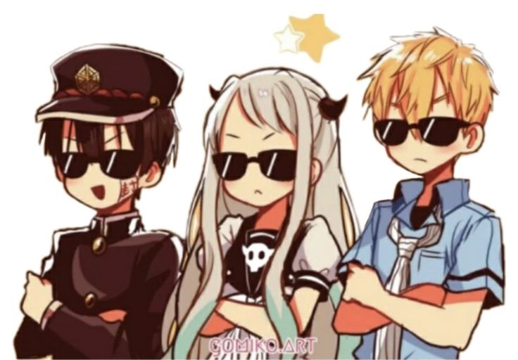
Neon understood and alfa said my neon is bigger and flame said my neon is
bigger and neon thought that his neon was bigger. Their card already shows
their neon meter and they figured that neon has a thousand neons and flame
has 300 and alfa has 100 thousand neons. That's too much power she has.
Asher asks if she has any spirit with in her cause that's how her card
calculates neon and she said she doens't knows. Asher asks what are their
specialty and neon explains that he has 17 different powers but no way to
utilize all of them. He's good with ice and that's all. Asher asks if neon
is a cursed child and explains that if a woman get's into relation with
multiple man and gives birth to one single child then that child is
considered a cursed child and flame asks if neon has 17 different fathers
and he told flame not to joke like that. It hurts. So mixing different
attributes can generate greater attributes like if they mix fire with
earth it'll be magma and if they ubgrade fire it'll be inferno. Fire Magma
inferno Water Ice Mist thats how power scaling works. Neon says that he
doesn't knows how to use water properly and aqua says that he knows a bit
how to use water magic but even she's not good at it and asher says that
seems like her fire power is more important to her than water.
Well it makes sence cause magic manufast in people based on their
psychology. Everyone was confused. Asher explained that a person who uses
bullets to fire everyone and if that guy has a child who likes that short
of thing wouldn't he also have metal magic to shoot infinite bullets? That
makes sence and neon thinks and says what if someone has too much anger
within them and asher says that's when someone manufasts flame magic and
everything. And also. Asher tells flame that he's too calm for a flame
user. He should be careful about his own psychology cause a person could
even learn a different magic unconciously. He must controll himself
otherwise he'll be exicuted by his own father. Flame knows this and is
sadden. For their first mission asher says he'll check their card for
requests that are easy enough for them. Later they can select them based
on priority level. The top quest is usually the most priority and gives
out the most amount of money. For that they went and did house cleaning
and they were bored. Then they fixed some cavelry and madesure to
transport some cows and then fought some wierd creatures and secured an
egg. Neon was bored. He doesn't wants to be a aura gurdian or mage or
whatever it might be. He's bored already. He wants to do big missions or
something cooler. Alfa tells neon not to act spoiled. When they got big
mission they were in death door. Does he really want to die that badly.
Neon thinks and says he wants to do something better at least and flame
and alfa goes to their room to sleep.
Neon couldn't sleep so he sneaked out and went to the city. There he went
to see the people around there buying and selling stuff in the night light
which was something he eyjoys seeing and he sat next to an old man who was
treating neon goodly and asked neon if he's goanna accept one his his
requests. He doesn't have any money to offer but he can give him some free
dumplings and neons asks what is it that he needs to do and that man tells
neon that his neighbour has a giant house and eerything but he hears
crying sound from that house everyday. The neighbour hood thinks that man
hurts his daughter and wife. That man asks neon to somehow stop it and
neon doesn't knows what to do but he says he'll try doing what he can do.
Neon goes in front of the house and sees that the man is missbehabing with
his wife and daughter. He doesn't does anything and leaves that placec as
the sun rose he knocked at their door and asked him what was going on
here. He's a patrolling knight and he heard crys of a woman from this
house and that man says neon by kid and tells him to mind his own buisness
and not look into person affears. Neon didn't knew what to do and said
that social peace is illigal not to keep and he must asnwer to his
questions. That man closes the door in front of neon and neon having no
way decided to leave but seems like alfa and flame followed him.
They ask what he's doing and he explains what happend and they decided to
do one good deed insted of one mission and alfa almost broke the door and
a woman came to open it. Alfa and flame went inside the house by force and
asked for a search. That man asks if they have a warrent and they said
that they have resonable suspecion and eye witness so they don't need his
permission to aligations. Neon decided to go inside and see that there was
a child crying who is even younger than him and there are clear signs of
being hurt. That man then throws neon and alfa and flame and called some
knights to figure out that he was lying when he said he was patrolling
officer. Neon explained that what happend. He was passing by herd those
stuff and that guy who came as a police man told neon that there isn't
much they can do and pretended to take neon and those kids out of there.
Then when that guy wasn't there he told neon about this cruel world that
sometimes they can't achieve anything. That man is a noble and any
aligations against him will be fatal. Neon is just a new mage so he should
do more missions to build reputation. Not puncer his reputation and neon
thought that if they keep failing every task then they'll never be able to
acomplish anything. They want to save that child and mother from that guy.
That guy told neon that they have pure intentions but they can't do
anything such trivial. If they really wants to do then be careful and
makesure that they don't attract attention towards themselves.
He leaves. Alfa asks why neon got out of the house in the first place and
neon explains that he usually can't sleep so he spends the night sometimes
with that old man sitting watching people come and go. For some reason it
sounds heavenly and memorable. Alfa said that if they wish to do anything
at all for neon's grandpa then they must gather info first. They talk to
the neighbours and figured out that he's a buisnessman who leaves house in
the morning and returns in the night and during that time they can hear
the cries of that little girl. Poor little girl everyone is sad about.
When the buisness man left neon went to ask the mother of that girl about
it and she refused to talk to neon and neon begged to talk to her daughter
and she asked what does neon wants fromthem and neon said just some
consern about the neighbour hood. She said she can't let them meet her and
locks the door. Depending on her behaviour they can conclude that she's
also part in that or she's too afraid. Neon figured out that girl never
comes out of her room. Not even once and neon decided to go throw window
to talk to that girl. She was covered in mud and when neon looked in her
eyes they were asking for help and neon got raged and asked her to open
the door quitely. She opend the door and neon asked her what is she doing
here and she says her parents always loock her up and she wants to see the
outside world but she isn't allowed to.
Neon asks if she knows why and she tells that her mother calls her a
monster and neon doesn't understands why and he decided to show the world
to her if she trusts him and she decided to agree. On this side when the
girl's mother came to see her she was missing and neon took the girl to
eat in a good resturant and everything and took good care of her with
everyone else and ayaka cleaned her up and she was happy but also worried
about her parents and what they'll do once they figure out she ran from
hom and neon says he'll take the blame and alfa says she'll too and flame
says what did he do? In night time while they were walking they noticed
that her parents spotted her and something was falling off her face. It
was like she's a devil and her face is falling off which is a human skin.
She begges not to be with her parents and neon decided trying to fuilfill
that dream while alfa and flame stop her parents and neon take her away
with him but the buisness man told neon that he's a good guy and trying to
do something kind but he can't do it. She's not a human and she can't be
outside. Neon doesn't understands and turns out she's actually a spirit.
An evil spirit became her familier when she was younger and ever since
then they kept her hidden so people won't notice her and even when she
cries they won't let her out cause they knows that if words spreads out
she'll be exicuted as evil. There won't be anything they'll be able to do
and neon tells that girl that her parents are not bad and she should obey
them and maybe one day neon will find a cure to her state and they can go
outside and that girl agreed to go back with her parents when neon
promiced to go out with her. Neon thought that he's a falure cause he
couldn't do another mission but he at least managed to get the dumplings
since the grandpa type person saw her happy for once who was worried about
her. The next night neon was sleeping on his roof and alfa and flame came
next to him and asked him if he sleeps on empty sky and neon says yes
since he can't sleep properly sometimes. Today Neon got a real good quest
to fight a strong beast in the wild and so and he managed to capture it
and was really happy that after so long he finally secured his first
mission to a success and they didn't got much paid much cause of their
past reputation. Flame got a call from his father and he was called back
to the royal palace. Flame told neon that he'll be leaving this group and
he apologises cause he probapally have to stay at his home town from now
on and neon says that he doesn't need to bother.
They were good friends and that's all that matters right now. Flame was
going to go home after a sun sets so they can spend time till then and
neon says how about fighting eachother and where can they do that and they
decided to do that in their old school and decided to fight and one girl
named kamini came. She was excited for fights and couldn't resist the
tempetation of a fight and neon decided that neon and alfa vs flame and
kamini will fight and they fight and in the end they end up distroying a
lot of stuff there which was why they were kicked off that place and neon
felt sad for ruining even more of his reputation. Flame asked kamini if
she's a knight and she says yes. She did pass the test but can't tell
which group to join and neon tells her to join theirs since flame is
leaving. She was shocked to know he's a prince but she doesn't understands
what a prince means but it must be important right? She totally doesn't
get's it. The next day they are told how they are creating problems so
that group is sent to an expedition with the silver soul group. Everyone
knows that gold and silver brothers who are famouse for their power and
also their fights. There is also one more group that they need to be aware
of and that's the angel group and devil group. Devil group has all men and
angle group has all female so they can understand the problem with those
groups.
The silver group is so strong that their people take jobs seperately and
they are the ones who get the most fun of jobs like right now they got the
job to explore a certain cave that might have treasure since it's an
ancient relic typle place they founded. Neon went there with the head of
the silver brothers who was jacked and lacked magical powers too much but
had enough. He believes that the strongest ones are with the strongest
mind and body. As they went in all the monsters were defeated by neoni
team and kamini was having fun wondering about kind of treasure they might
find and neon thought they'll definetely be dissopointed but suddenly the
cave closed. They were confused but silver told them not to worry since it
happens sometimes. As they continue to reach further in they founded what
looks like an ancient city underground and they looked throw everything
and it's preety booring but neon founded a temple type place which still
have pure water enough to drink which is wierd. Silver drank the water and
thought that neon was right and decided to dive in the water. Neon decided
to wonder off but suddenly someone came from the back and made neon and
kamini unconcious. Alfa was poisoned and looked back that it was a spider
looking guy with purple cloths and all.
His poisons are also purple. He touched alfa's head in order to blind her
with poison but she used her fire to burn the poison and tried waking neon
up. and knew that this guy is definetely problem who ever it might be and
decided to fend that guy off herself while silver is out in the water.
Alfa fought with everything she could and on this side silver founded a
water stone in the water and thought that this thing is definetely
precious and took it back and on surface he saw that neon and kamini were
on ground. Alfa took off their poison so with a tap he woke neon and
kamini up. and took alfa off that guy's hands. He told alfa good job
trying her best and started fighting that guy with all he can and he was
failing since this guy is too strong and silver asks what this purple
poison wants and he said that he wants that stone on his hands and he said
if he asked kindly he would have given it to him but now he crossed the
line so he must suffer and neon lights up everything using his light
powers and then used ice in order to freeze that guy up and silver used
this chance to punch that guy but he managed to survibe that. they fought
and in the end that guy had to flee. Silver was confused why this and he
gave neon away the stone cause he thought as youngstars he could use that
and also. That's a lezendery stone that was once a familier of the
lezendery mage that stopped from the gate of hell opening around 13 or so
years ago.
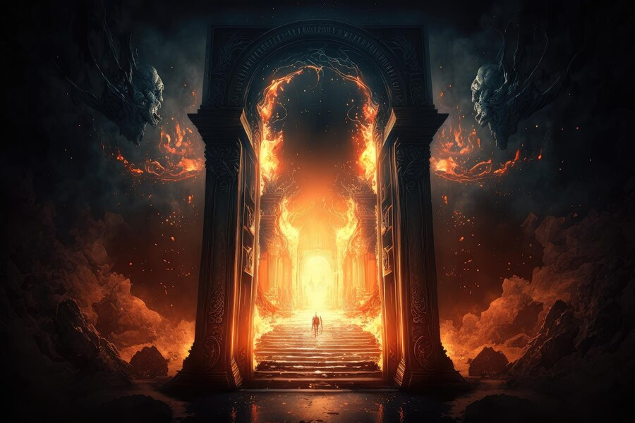
Neon thought that this info was good and was about to take the stone for
himself but alfa said that she did most of the work so she deserves it
more than neon and takes it. Neon says that she doesn't even uses water
that often and she explains that she doesn't need to know which one she
wants to use. Both fire and water sounds fun. The next day alfa was
training her water and fire abilities but she was failing to awake her
water spirit and didn't knew what to do. Kamini heard about those stones
and acording to some lezend they are really powerful? Neon asks are they
the most powerful and kamini asked if it was really the most powerful then
would they be given it so easily? She has a point. They then went to the
royal capital and the princess who was young 18s was walking down the road
and it was forbidden to look at her with disrespect. Everyone has to bow
down and as they did and they could hear the princess pass. Neon looked at
the princess and the princess noticed it. She stood before neon and told
him to stand up and he did. Then she asked why he was looking at her and
neon didn't knew what to do and said that he was just curious how the
princess looked since he can't afford to disrespect her in any way the
next time he might see her and the princess asks how old is neon and he
said that just 13 and she said too young. Grow up and then look at me if
you want.
She left and neon almost had a heart attack due to that and while they
were having lunch kamini was eating lunch without a care about what
happend but alfa was extreamly pissed at what that princess told neon and
neon told alfa not to talk about her since just saying bad stuff about her
will end her toungh cut. On this side a guy had a lot of soul stones on
his hands and he bough so much and was planning to do something about it.
Then on this side neon was travelling this city when he saw a poster about
a match about the most powerful soul stone holder who can use their soul
stone properly and alfa is the only one with soul stone and so she'll
enter. Kamini asks neon about his black gem and neon says that it isn't a
soul stone and neon and kamini were viewers when ayaka went to show her
massive fire power even though she had water stone and then she showed her
massive fire power and turns out you can still participate even if you
don't have a soul stone and neon decided to enter. He showed how he can
stand on one foot and create an entire lift with ice and turned the entire
stadium icey and then kamini came who distroyed the ice like a childs
play. Then came the captain of the silver team and neon cheered him on but
he had nothing to show other than his massive mussels. Then came the gold
captain who was silver's brother who showed his awsome creation power to
create things out of thin air.
He's a magician. The princess was the judge. at final came the guy with at
least a hundred soul stones and showed his massive controll over all of
them at once and won the competition and he after winning proposed to the
queen and everyone was cheering for the winnder but the princess decided
to disqualify him for asking such thing and made gold the winner and that
guy who i'll call ram stick asked why such thing and he said he is a noble
person who has everything to offer her and he really loves her and the
princess opens her moute saying that she's sick of him. He used to be a
royal mage but he decided to down grade his title just to be the princes's
body guard when she was just a kid and then proposed to her 2 years ago.
She was so mad and knew that he's a pervert. The princess was going to say
even more but her current guard stopped her. Seems like he has a good
relation with her and this made that guy angry. He decided to leave and
not take this insult. Kamini asked who's fault was it and neon said that
ram stick is probapally an idiot. Why would he act so pervertly and do so
much for a child? How do these peopl's psychology works is impossible to
guess. There's no way it was true love. On this side neon met silver and
thanked him again for everything and also met his brother and learned
about both of their bad relation and bad attitude towards eachother and
gold believes that mind and magic makes someone truely powerful and silver
doesn't believes that.
Gold goes back to his training to be number one and neon asks who is
currently the strongest mage in the country and silver says it's the devil
lord akuma himself but he tells neon a secret and that's he's fake. The
guy's real name is something i'll call for now is fake kuma. Fake kuma is
not a bad guy but he's poor and everything and pretends to be the lord of
devil and fooling everyone he managed to get this far. He isn't a bad
person. He just wants to give hope to his people. Neon thinks that this
guy is actually a hero if he's really trying to pretend akuma for no
reason. While going home this side ram stick attacked the princess in
intention of doing something and neon noticed it with his eysight and
decided to go to the royal castale. The guards told neon to stop but neon
told the guards that the princess is being attacked and they saw the
shadow and told neon to come with them then. The princess tried her best
to protect herself but she's powerless when someone so powerful is in
front of her and seems like gold spotted this fool and came to protect the
princess and he broke a lot of stuff and neon and others reached the place
in time.
They were breaking and running so much that they reached a mining area
where it was going on work and they fought there on bad situation and that
guy was turning to be a bad opponent since he has so many soul stone
powers and they wondered if they can even beat this guy but then kamini
used her lightening powers to attack like xiao and then broke one after
one soul stones and this was fun full act for her and then neon used his
fires to hold her lightening and mixed with it he managed to land a
finishing blow to break the last soul stone he had and win. On this side
silver reached this place and saw gold in a pethetic situation. If he had
a better physic then this wouldn't have happend and god doesn't accepts
the insult and tells him to shut up. And on this side after that ram stic
was jailed neon and kamini were both were thanked by the princess and the
guards pointed that if neon didn't noticed it then they don't know what
they would have done and neon says he himself doesn't knows how he noticed
it but it felt like his eyes suddenly started burning and his head
automaticly turned to her side and he spotted her shadow. It was a wierd
feeling like he didn't went to toilet and the princess says that's future
sight. The princess uses her blood to activae neon's future sight again
and seems like it's creating head ache and the princess told neon that
there are two different blood lines. One that belongs the devil king akuma
who created the future sight ability and sota who is his brother. Their
both powerholders of future sight but humens currently are unable to use
that power without both bloods. Neon has the blood of the devil king or
his blood line at least.
And the princess has the blood of sota's bloodline. The princess asks neon
if he'll marry her when he turns old enough cause they should combine
their bloodline to combine the bloodline to one place again and alfa got
angry. Neon didn't knew what to think and alfa was feeling angry. Gold was
shocked. He never got a chance to ask for tea with the princess and this
kid got marrage request? Neon said no and said he respects the princess
and hopes that she'll find someone who's more capable than him and who
meets her mind cause he knows for certain that he isn't suited for royal
bride. And just marrage for the sake of blood line isn't something neon
values so he won't be a good partner cause he doesn't have a similer view.
The princess was happy by neon's politeness and told him that he shouldn't
think so fast and neon says he already decided. Kamini asks if they can at
least eat some royal food since she's hungry. It was night time and the
princess agreed. to eat food with them. It was a happy night. On this side
the ram stic thought that he may have lost but next time he'll bring a
thousand soul stones or a millio to beat neon and that girl and also win
the princess and kill them.
On this side purple spider was talking to bombastic side eye about the
soul stones and he talked about ram stick being captured before they could
even meet and bombastic side eye told purple spider that blue kitty isn't
too happy about it and they should get going with their movement. On this
side the next day comes and neon wakes up in the morning and saw his
mirror and thought to himself that he looks black and saw a black creature
behind him like the devil from black clover. He said boo to neon and he
was really scared. He went to alfa's room where kamini was sleeping too
and asked if they can see the black creature too but they can't. Neon
thought he was day dreaming but the creatre appered again and said boo and
neon fell out of the window of second floor. He asked his friends if they
can really not see the ghost in front of them and they can't. Is he
halusinating. The ghost is dancing in front of neon. He told neon that it
was quite a while you were not able to notice me. Neon asks who that ghost
is and it explains what's my name? WHat's that? I have a name? He laughs
and says you can call me shadow since i'm like a shadow. Neon tells
everyone that this creature calls himself shadow and kamini looks at
neon's black pendent and asked if you have a black spirit stone and neon
says that he had this since he was born and shadow says he was with neon
since birth only today he noticed him.
Kamini thinks that it's one of the 8 lezendery spirit stones and remembers
that there wasn't any black lezendery soul stone or anything. Neon asks
what is the deal with the black stone and this creature he's seeing right
now and kamini says that he can ask ali about this and they go to the
library to ask ali about this. Ali was reading some short of book in the
library and he asked what when kamini asked ali about the black entity and
neon's pendent. What is the black entity he's seeing right now. Neon sees
that guy is like ryuk from death note but he's laughing always for some
reason and ali says that it's a mental problem called dissosiatve identity
disorder where the person sees mentally created images into reality. Neon
said isn't that personality disorder and ali says no and tried acting
smug. Neon used his mobile to prove ali wrong and he apologised for the
mistake and neon knew that this guy is a froud so he decided to leave
kamini and her idiot friend aside and study about it himself and that
shadow asked neon if he will be his friend and neon asks who he is and
shadow says he doesn't knows and neon was tired of i don't know and asked
what do you know then? Shadow says that's a good question. To be honest I
don't really remember anything other than the fact I was sealed inside you
13 years ago by some black dude. Neon was shocked sealed? Is he a spirit?
Shadow asked if that's what people call people with no body but a
wandering soul?
Neon founded som books and started reading and that's when he saw that one
of the important books was in hand of a girl and neon asked that girl
about her book and asked if he can read it and that girl was sucrose and
she immidiately thought that neon was in love with her and decided to talk
nicely to him but turns out she had a hard reality check when she realized
that neon was only intrested in the book. She asked why neon wants to read
about that book about the lezendery mage and the shadow devil and neon
says that he apperently have a black gem as pendent since birth and
doesn't knows it's existence. And a shadowy creature is now following him
that only he can see. Surcose tells neon that it could be that neon is his
son or something? Neon asks her about the mage and sucorse tells neon that
13 years ago there was a mage who died. Years ago he was labeled a genious
when he tamed 8 evil spirits who were obidient to him and they were so
strong that it was said that if he wanted he could have distroyed their
entire country. 13 yeas ago or so suddenly a storm rised. His all 8
spirits were killed and turned to spirit stone by some shadow devil and
then it tried to open the gate of hell and that lezendery mage sacrifised
his own life to make sure that devil turns good insted of killing it.
Neon thought so he is that guy's guenna pig? Shadow refuses the fact that
he was evil. He may not have his memories but he knows for certain that he
didn't killed the mage. He could never kill anybody. On this side neon
thought about it and thought the shadow devil is sealed with in him and
wondered what to do about him. Sucrose was intrested in the devil and neon
thought that he doesn't looks evil so he doesn't needs to get rid of him
but he's distroying his privecy when he'll need to use the toilet. Shadow
said he isn't intrested in neon's stupid stuff and also my neon is bigger.
Enough with that joke. neon asked sucrose about herself and she said she
can cook and that's the only magic form she knows and neon thinks that
she'll be good if she joins their team and asks her if she is willing to
do so and she accepts to join their team and asked if they ahve a place to
live and neon said he has. Neon saw kamini talking with ali and told her
that they were leaving and they founded a new member and it's sucrose and
kamini said- oh neon. You said you wanted a new member. I was thinking how
about we added ali... Neon said no before she could even finish. They left
without ali. When will he find a team. He's fucking loner. On this side
everyone welcomed sucrose and neon thought that their team lacks male.
Three girls and only two boys. That's sad.
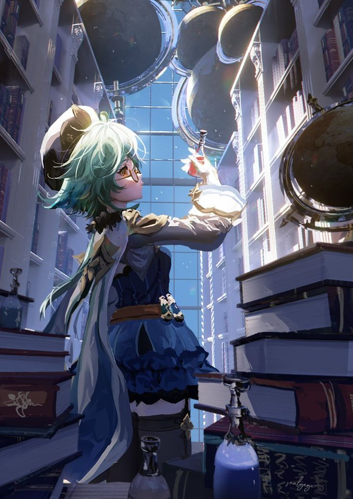
And alfa said that then recruit boys. The larger their team the more
they'll get requests and kamini was talking about ali but neon refused.
Sucrose was hungry and neon asked sucrose if she's hungry and she said
just a bit. Neon asked if she ate anything at all and she said she did.
Two appls in the morning and neon said she'll fucking die and gave her
food as soon as he can and she said she doesn't have money to pay for food
and neon said she doesn't have to pay for it. She's their team mate from
now on. Maybe she can fill up her role by cooking food for them cause
she's a cook after all. She thanks neon and ate her food. Kamini asks
where she's from and she says it's from at lantas and everyone was
shocked. At lantas is a closed country with a tribble king who trapped
every citizen and he's worshiped there like a god and he's one of the most
corrupt govt out there. How did she escaped from a locked city and she
explained that it was years ago when she heard about her friends escaping
and decided to do it heself and someone really special whom she considers
as dear as a father helped her escape. He then helped her to learn a lot
about magic like did you know that a person can give away their magic in
form of magic stone before they die but it'll suck all their ability to
use that magic.
Neon tells sucrose to sleep since they will have to go on a big journey
tomorrow. The next day sucrose woke up on a bed with nice sleep and went
to cook but turns out neon left with all the cooking done and sucrose felt
useless and this side neon bough a sword for his expedition. And neon
asked his grandpa looking guy about some possible team mate he can find
and neon hears about a guy who is talented but haven't found a team yet
and he is willing to take him in and turns out it was ali. Neon wanted to
leave but ali begged neon saying he'll be useful to him and at least let
him carry his stuff and neon had to return home with this useless
creature. They were going somewhere on train and alfa read the history
that more than 100 years ago there used to be an advanced civilization
that was distroyed after world war 3 and now humens are finding a hard
time figuring out a way to revibe that civilization. A lot of stuff were
recovered like trains and buss and cars but rebuilding internet and
computer is turning into a hard part. Neuclier power is forbidden to use
or build or necluer reactor is something you'll be exicuted for building
no matter how benificial it might be since everything can be run by magic
now. The train breaks on it's way and neoni team found no way but to walk
on their way to the village that was suffering from it's poor economi and
landslide.
Shadow when he saw the landslides he told neon that his land slide is not
natural. Neon thought about this and wanted to activate his future sight
but it's hard to do it again. Neon as soon as he reacher the place
explaind the group about the problem. The village is suffering from land
slides and their country will increase their borderes with this village
and also why it's an important mission to report everything untill the
border guards come and everything. Till then they'll help the villegers
remove rocks or anything or stop enimy invaition or any short of stuff. On
top of that there are some bandits too that are constantly looting this
village so it'll be their job to portect them. Two men and three girls
started their jobs to help the village with man power and neon thought
that his village lacks man power and magic too. That's why they needed to
hire people and neon thought that if it's man made landslide then it could
be for good too since their country got this village then. It's goanna be
a valuable asset to them since this village has a good coal mine their
country lacks in numbers and shadow called neon greedy cause many lives
were lost due to this unknown motive. He's here to investigate and report.
Not mind his own buisness and neon told ali to go to the mountain top to
figure out what happend and he went to a different side and looked at the
rocks.
It's definetely man made even though neon doesn't notices it. Shadow
touches neon and he can see that aura is definetely used to cut those
rocks and thinks who and why would someone do it? Neon wonders if their
own country did it and shadow says that if their own country did it then
wouldn't they sent that exact team to make sure that it doesn't get's
leaked. On top of that this is near the aquamarin kingdome. What if they
did it in hopes of fining the blue water stone or something since lezend
said that this village has the purest water source and right now the water
stone is in possision of alfa. And that cave is linked to the well of this
village and neon thought that was the reason the village had such a good
reputation of water but how did shadow figure out that those two places
are connecter? The well is not even that deep and the pipe that goes throw
that line isn't visible. Shadow tells neon that he doesn't have a physical
body that's why he can view the world on spectator mod. Neon was jealous.
Shadow said that- being a devil comes with it's own abilities.
neon- then you thought about distroying the word? shadow- No I thought
about protecting it. neon- wait wait wait what I ayou what shadow- think
first then speak. neon- You are a devil? shadow- Being a devil doesn't
mean s you have to be evil by default. There was other devils too that
were goo among themselves but when it comes to the question of personal
benifit then who can say? On this side ali noticed some people talk. It
was a guy named yota who has earth shield powers and ela who is an elf who
met alfa. Alfa was shocked. What are these two doing here and yota tells
alfa that they came to this place in search for the water stone. Her
father is the one who send them here to do so. Alfa asks if they were the
ones who caused the land slide and yota said that he did it and they
didn't had any option but where had she been all these years. She said she
severed all ties with her father and now identifies as alfa. And raised
her weapon against both of them and told them that they are under arrest
for causing this disaster. Yota knew that she can't hurt them cause they
are friends for long time and that guy told alfa that she still has the
oppurchunity to return. Alfa stopps resisting.
Ali realized that alfa has betrayed them and made a sound. It alerted
everyone and they were ready to kill ali and started attaking him and
almost killed him but alfa told them not to kill him since he's her friend
and yota told alfa to set aside and she couldn't talk back to her and yota
almost killed ali but neon came to protect ali and sucrose and kamini came
here. Kamini asks alfa what's the meaning behind this. Neon said- what in
the world of worlds out of the world is going on? I was founded by the
exact person whom I was searching for? Shadow- what a ryme. Should I get
you an oscar? Ali told grey and everyone that she's a traitor. She's from
the aquamarin kingdome and she' betrayed them all. Those two people are
the ones who caused this landslide and she's the one supporting them and
neon told alfa to hand over the criminals who caused this and alfa told
neon that they are friends and she ows them her life and can't do that and
ali calls her out saying that just cause she ows someone her life doesn't
means she has the right to take someone else's life. This made her cry out
and she says sorry and starts burning herlsef with the forest and started
crying.
The entire forest was turned into a firey mess and neon thought about what
to do about the situation since they will be in deep trouble if she ends
up killin herself and neon realizes that he might feel betrayed but there
is definetely alfa's side of the story they need to hear and told ali too
bold for saying such stuff without knowsing what she has to offer and neon
told ali that she not a traitor and he has his own reason for saying that
and told ali that he'll explain him that once he manages to save her and
neon went out to create ice and tried hugging her and stop her burning and
couldn't so. Yota told neon that they can stop their differences for a few
seconds and save her and neon has no option but to elaborate and decided
to team work and save ayaka from her such slumber and knew that no amount
of cry or words can reach to her and decided to grab onto the water stone
and used it to stop her fire and saved her. She looked like a dead fish on
neon's hands and neon holded tightly to her and her soul stone that he
hide and also he told yuta that he'll forget that they ever met in
exchange he can forget that he ever saw alfa here and leave. Yota took the
chance and left. Neon reported that the landslide was done by some
aquamarin people and they fleed before he could catch them and neon's team
recieved a raise for bringing such info.
On this side alfa woke up after two days of sluber and she was still
crying. Kamini and sucrose calmed her down. They were still at the village
and the border guards already constructed a lot of the border and neon was
about to come back from his reporting but alfa wasn't feeling good. She
usually doesn't stays without him and she told what her past was and she
used to be the princess of aquamarin kingdome but her father asked for her
slaugher when she learned fire magic somehow and helped by one of her
guards to flee to kagami kingdome and then when those spies almost killed
her when she was just 7 neon came to save her and protected her and gave
her the love she wanted. She's now traumatized everytime someone shouts at
her and every time she hears someone angryly talking at her she remembers
her father's shouting words at her calling her a traitor. She's too much
traumatized that she started crying on kamini and both kamini told alfa
that they understand and alfa told kamini that yota is her childhood
friend who is also bind to follow whatever the royal family tells him
otherwise his head will be cut off. Kamini understands that and tells alfa
that they won't missunderstand them and kamini told ali to beg to alfa for
forgiveness. Ali does so and alfa forgives him.
On this side yota reported that they were unable to figure out the
location of the water stone and seems like it's highly posssible that the
kagami kingdome already has their possesion on the water stone and the
king of aquamarin notices that yota isn't telling something and yota said
that he gave his silence for those information but neon from the kagami
kingdome currently has the waterstone in his possition. The king hears
that he gave his silence? Was it alfa? Yota accepted that it was indeed
alfa. He couldn't keep his silence and the king told yota that he was a
good person for valuying someone's promice or silence but a killer can't
be considered good and he breaks yota's will and tells him to bring alfa
back or at least the fire stone that's sealed within her. you know what. I
change my mind. The person who was with yota has water abilities and her
name I don't know. Yuta's partner i guess. On this side neon was at their
home when alfa returned home and she hugged neon and neon called her
welcome home just like the day neon and she got this house which was
abandoned and alfa was loosing her will to live and neon called her
welcome home cause if no one is waiting for you at home then I'll be the
one.
Alfa asks neon what he likes after that and neon said that he likes to be
powerful and alfa says he likes strength? She wants to be strong. And she
also wants her revenge from her father. Neon buys a sword at present.
Sucrose told neon about the nine slots of the gate of hell right now. That
must mean the gate of hell was opend before but how much energy do you
need to open the gate of hell? 1 million neons each for the dedicated
holes that means you not only need a specifiq amount of power but also
that amount of power compressed. Neon says that the person who open the
gate of hell earlier must be hellot of strong. Neon asks how sucrose knows
this much about the soul stones and everything and she says that she loves
to read and collect books and neon gave her a raise at money since she
doesn't have enough clearly to buy books and she showed kindness to neon.
Neon then went to buy a sword for himself from a blacksmith and he was
throwing away good swords for free and neon asked if he can take one of
them and the black smith told neon that he can take all of them.
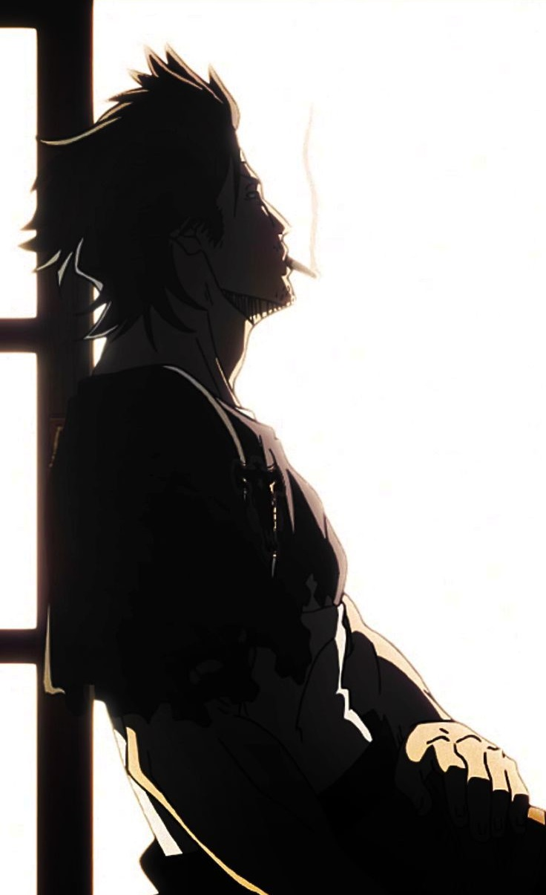
The garbage man didn't came today. Neon took three swords with himself and
met silver again on road and told him about his sitaution. Right now he's
aguenna pig of the mage who sealed the devil inside him or something and
he likes to laugh a lot for no reason. Silver thought something and asked
neon if he wants to visit the gate of hell and shadow was shocked. Silver
said that the gate of hell is in kagami country. Just a little far from
here. He can show it to him and neon asks is it legal to visit that place
and silver told neon to keep it secret but their kingdome is reachercing
on the gate of hell and trying to open it and shadow was raged. He threw
tables and everything saying he sacrifised everything from his life to
close the gate of hell and these people are trying to re open it? Shadow
manufasted in front of silver and it shocked him really. She fell out of
his chair that he was standing. Neon thought that they were being
attraction so he left with silver and shadow made himself invisible again.
Neon told shadow that he didn't knew he can make himself apper and shadow
said he doesn't knows how he did it himself but he got angry for some
reason. Why was that? Silver told shadow to go away cause he'll be raged
again if he says it again. Shadow says he wont.
Silver then calmly says that their kingdome knows a secret of hell and
there are mixed opinion about it and acording to info there is something
extreamly powerful inside of the gate of hell and they are planning to
kill it off. Acording to statestics they are right now the strongest mages
out there in a tohusands years and they don't want to take chance. They
want to kill off the devils and take their power to hold it. Neon thinks
that's stupid. How can they just steal power and silver said he can try
gathering info on it but he can just visit the gate of hell himself.
Silver managed some back doors to enter the labrotory where the gate of
hell is kept secret. Neon visits that place with alfa, kamini, sucrose and
ali. They saw the gate of hell. It had 9 slots. There was a scientist who
told neon that his pendent looks similer to one of the holes on the gate
of hell and neon tried putting it in but it didn't went it. The scintist
tells neon that he was wrong. It actually isn't supposed to fit. Neon was
shocked for a second. Shadow decided to enter the gate of hell and it was
too deep so he decided not to enter. They ask what is about the gate of
hell and there is a lezend about a black soul stone that is the king of
hell has. The ultimate strongest devil soul stone containing black magic.
They are after that soul stone and neon asked wouldn't it corrupt the
world and the scintist told neon that if they refuse for search for power
just cause they are scared it won't help them.
In this world war is constantly happening and they must need that black
stone for their country. Maybe it's not for good and it might bring caos
but even if they die they can die saying they did the impossible and die
with that honour. Neon understands why they opend the gate of hell years
ago and says that he at least doesn't supports this and when the time
comes he'll be unable to do anything about it cause he isn't someone who
can change the opinion of an entire country and he left that place.
Everyone other than neon got sick after returning and the scintist told
them already about this that they might get sick after coming here once.
But if they stay there multiple days they'll get used to it. It's the
radion of dimention break and the cold outside can't be felt due to the
heat of the hell. Before leaving that scintist told neon to take good care
of the water stone cause it'll be important. Neon asks why they don't take
it from him and the scintist tells neon that he's a pure hearted kid so he
might be able to re awake the stone or anyone else. Other than that they
are not done with the reacherch but when they'll it'll be matter of hours
before they'll open the gate. Neon asks if they already have 9 millio
neons of energy and that man said they don't but they are creating it
throw a machine and soon they'll be successful too. Neon left.
On that day on dining tabel shadow appered. Everyone could see him and
shadow told neon that he sacrifised everything from his mortal body to his
memories to his master to everything to prevent the door of hell from
opening but these idiot human beings are trying to open it again. He asks
neon if he knows what he'll do if neon doesn't listens to shadow. Shadow
takes over neon's body and tells him that he can do anything at all he
wants from his body and if neon doesn't wants him to kill him off and
steal his body from then he must do something for him. Distroy the gate of
hell and remove magic from the entire existence. Magic is the reason of
all evil right now. No spirit or monster would be alive in the world if
magic dissepeared and people can forget how to use magic. The devil king
did it so will neon. Neon said he isn't the devil king or as strong as
him. He can't do such big thing and shadow tells neon that he will and
he'll give him power by weakening the seals shadow will release every bit
of his own power to neon and if neon refuses to listen to shadow he'll
kill him off and take over his body. Neon thinks and asks how exactly is
he goanna distroy the gate of hell? Won't it make a path for the devils to
get to humanity and shadow says no. That door serves as a gateway between
dimentions.
It isn't a normal gate and the moment they use all the energy by plasing
all 9 soul stones that they once gathered they can distoy the gate of
hell. Previously there wasn't any 9 holes. Just plain circle that can be
filled to open it but now it has a key that he created with his master.
the lezendery sage cause such thing might look like a key but in reality
it's a bom. The moment such compressed energy is put inside the gates
after the 8th stone as soon as they place the 9th stone the gate will
vanish. Neon thinks about it and he thinks of a plan and that is to
collect all 9 stones and then place it there in the name of helping. How
about it. Alfa says that if neon is in then I'm in. Everyone else supports
him cause they don't want the devils to suddenly release and ali agrees
cause he thinks doing a mission like is advanterious and cool. Sucrose
doesn't wants neon to die and shadow is a nice person so they agreed to do
so. What should they call this mission? Aura gurdian. They are gurdians
who'll protect aura from being missused. Neon is searching on the web to
see if there is any aditional info on internet and shadow asks what is an
internet and neon says it's places where wierd ads pop up when you don't
use an ad blocker. Shadow started reading aloud an ad do you want to come
so click on this link. Neon barely managed to stop shadow. Neon made some
notes and it might need for him to go around places and places.
but he's willing to take the time after all a littelar devil is here to
kill him. Neon told shadow that they do have the water stone but in order
to get the other stones they'll face stronger enimies so he wants to learn
his abilities and shadow told neon that he already knows it. All 17
different abilities and all. Those are his. Neon had only one ability that
he knows and that's ice. Flame returned to his old team and he missed
neon. He was happy to see the new team mates and everything and he talked
to them about their adventure without him and he was shocked to see
shadow. He told neon to break his all three seals that is inside him and
in the relm of concious ness everyone is in and shadow told neon that his
neons of power is sealed within these three layer of power. Neon thinks
that breaking these walls would be piece of cake and tried using ice but
failed to use ice cause this is relm of conciousness. No magics work here.
it's a place between one's soul. everyone tried breaking and no one could
damage the walls and neon asked how much power is sealed and shadow says
that he doesn't knows the calculation but he'll easily be able to use a
million neon energy when he breaks all three layers. Neon thought straight
jump from a thosuand to a million is 100% worth it. After a lot of trying
none of them managed to break it and shadow told alfa to use her spirit
stone since spirit magic will work and she tried and it broke the first
layer an the second layer is even stronger and all.
They gave up the moment they saw it. The reason flame came back was the 4
year world tournament for power and they'll find a lot of powerful
fighters there and can't afford to loose. The winner would get a lot of
money. And the white spirit stone that belongs to the king of devils.
Apperently no one saw him use it but it's said to have light power. Neon
can use light powers and thinks that if he manages to get a hold on that
stone then it'll be great and everyone must fight for neon. Flame and alfa
always fight eachother for no reason. The tournament starts and they have
to kill 100 spirits that sounded easy but all the spirits were running
away from neon for some reason. Was it cause of shadow? But where is that
jerk? He's sleeping at the house. It is said that the stronger the spirit
the weaker the body. That's why neon bought a sword. Also cause they look
heavenly cool. Neon meets a girl named yuki who has snow powers and
parteners up with him in the first selection section and manages to make a
100 kills in time. Then both of them go throw a second exam and that's of
course you'll need to be selected by the soul stone that means the soul
stone must respond to your echo. Neon and silver passed. Gold, the
princess, alfa, flame sucrose kagami, and so on passed and ali didn't. the
matches started and it's all 1v1 and neon got to fight yuki and won. Alfa
fought flame and won.
Then alfa lost in front of the princess and she lost in front of gold and
gold and silver fought that turned tie so they both move on. Then some
other matches later neon fought a man that was realy powerful and used
light magic and won the tournament. It was obious since they were just
beginners and there are stronger people out there. This made flame
furious. He didn't even made it out the first round. Then neon went to a
tavern like place alone asking for a drink. A woman was sitting next to
neon and asked him about him and why is he alone and neon explains that
he's just waiting for their food and came here to be alone for a while.
The name of that woman is ayaka. She asks neon if he often likes to be
alone and he says yes. Sometimes it's a nice thing and some times it isn't
and ayaka asks neon about his age and neon tells her his age and she
thinks and tells neon that he's young. He should definetely stop worrying
cause he's a strong guy. She saw him fight. Neon asked her if she entered
the competetion too and she said yes but the soul stone didn't choose her
so she was not in the 3rd exam. Neon asked what she was doing and she said
she was trying to find her son. His name is aliger and neon remembers that
they met a monster in their first mission named aliger. He told ayaka
about it and she said she wants to know the exact place cause that must be
him. He's a black type creature and neon asks how did it even happen like
what happend to him and ayaka explained that would neon believe that she
once died and neon said there are so much thing happening in life that he
would believe anything at all.
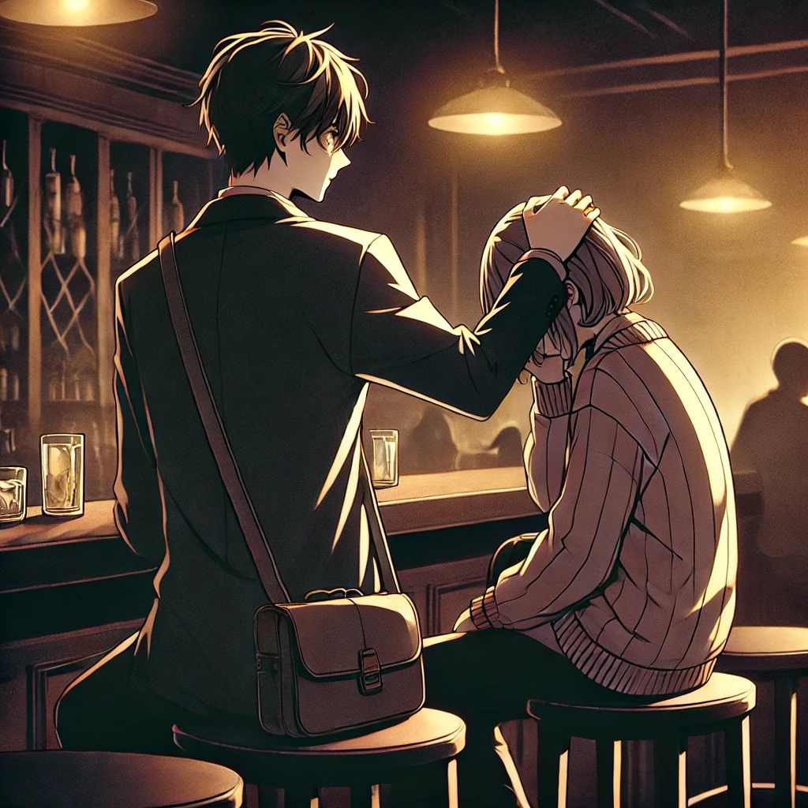
Ayaka explains that after her death her son's soul was lost between the
world with no body and neon remembers shadow with a similer aspect but she
was trying to find someone named aliger not shadow or the shadow devil.
She thanks neon and leaves. Neon asks shadow if he knew that woman and
shadow says that her memory isn't in his memory so he wouldn't know. On
this side flame was returning to his family in for his life and alfa asked
if flame was being forced to that life by his father? Neon said yes and
alfa told flame that he alreayd knows her situation if he doesn't wants to
end up her like that he should give up that life now. Flame said that he
won't have a chance cause who knows when his father decided to kill him
already or not. Ali demands for custome cloths like a rob or somerhting. A
custome cloths? Too expencive. A robe? Too uncomfortable a headband. Are
you a fucking ninja? a logo would be good enough. Neon asked shadow what
he was doing and shadow explained that he saw 2 chicks fight and neon
asked if he was a pervert and shadow said- i mean real chicken. It was a
rare sigh so i couldn't give up myself on the chance.
neon- who won then? shadow- the farmer. He slised both of them up and
served them to kamini and ali. Neon- How much does those two eat? Shadow
suddenly remembers a randome memory. Neon when he was just born. He wasn't
breating. His heart beat stopped and his pulse stopped. Was he dead? And
then shadow was sealed within neon. Shadow realized that the first layer
broke completely from inside and neon was confused. they barely made a
dent to get a hole throw the first gate and how did it broke and shadow
said that it's definetely something inside neon. It could be his hidden
power that's distroying the seal from inside as neon keeps using his
powers and it could also be shadow's hidden memory. Neon asks if shadow
will kill neon after he regains his memories and shadow says never. He has
gave neon his word and he won't do a thing to get against it. He'll keep
his end of the deal if neon keeps his end of the deal. He must remove
magic from the world and erase the gate of hell and heaven. Neon didn't
knew that there was a gate to afterlife that's heaven and shadow tells
neon that there is and it's something he must distroy too cause if the
gate of heaven is unleashed the concequences is unimaginable. Angels will
distroy this filty human creation cause they wants absulute controll.
Humen are impure creatures that's why unleashing the heavens would turn
the earth into a blood batch where second heaven will be build by the
angels. Neon understands the meaning behind it. So what is their basic
goal? Find the 8 stones and the fill in spot for the 9th stone and the two
gates and distroy them. And then to remove magic what'll they do and
shadow tells neon that that's something not so improtant right now cause
they need to hurry cause if those people open the gate of hell or heave
before they can do anything at all then it'll be a bloodbath for humanity.
Ali asks why can't they just contact the king and explain them and neon
explains that if any king or queen at all knows about the gate of hell or
heaven they'll need to explain the reason for opening it and everyone
would want the soul stone of hell. Every humen is greedy. That's why they
need to do it themseleves. Neon told alfa to take care of the water stone.
They only got 1 stone and 8 more to go. Shadow says that 7 more to go
since neon can fill in the 9th stone slote with his powers since when
he'll reach 1 million neons he'll be able to channel all that power into
his devil stone and also he can right now try and take about a few days to
pour the entire amount of power but it'll get really slow and might take
moths. They don't have that much time so they'll rely on his awekening by
breaking the seals and everyone understands the plan and what about flame?
Alfa asks why not they also make a plan about saving him from the flamingo
kingdome and neon thinks and says they can recruit him too. Sucrose tells
neon that she knows someone who might know the source of the stone. They
all went to the cindi kingdome known for poison. There sucrose brings her
friends neon, alfa, kamini, ali to a certain house and they keep theri
stuff.
Shadod wondered who this person is who doesn't have the keys to his own
house and sucrose then takes them to out to eat and maybe there they'll
find him. There while they were eating on a food stall they overheard a
guy speaking that's how I defeated that giant dragon. That guy was the
fake akuma. Sucrose calls her father due to respect and tells him that she
has something to tell him. They all go to his home and sucrose explains
that this is the person who saved her from atlantas and that guy takes
cedit as the devil king and shadow appears before him and it was obious
that he was a fake. Shadow said he doesn't looks like him at all. Sucrose
then explains that this shadow is a real devil that is trying to find a
way to save the world by removing the gates for that they need the 8
stones. They only have one. Fakuma hears that and tells them that their
goals are good but he also thinks that he can find some stones with his
conections. He said it'll take some time and neon is willing to wait. On
this side the poison spirder and bombastic side eye were planning to steal
the poison stone and they were tracking the loc ation of the poison.
Meanwhile yota met alfa on the streets and alfa told no fighting to neon.
Yota said she wants to talk to her privately and she agrees and neon
doesn't like yota at all and yota told alfa that she might not like it but
there is still chance. Her father said bring her back and he'll accept her
back.
He wants her to be his heir and be a princess. The king didn't lied and
alfa thought about it and thought that she's the princess of water
kingdome and what about the water stone? Yota said that he knows about it
and didn't wanted it back. He said he'll get it later. Alfa thought that
what to do right now. Her thoughts are messed up and alfa told neon that
she must return to her home town for some reason. She told neon that she
needs to go even when neon didn't wanted her to go cause she'll end up
dead and she promiced neon that she won't and neon gave the water stone to
alfa and told her to use it if she's even in danger and she said he should
be the one to keep it and neon says that if she can't gurentee even the
stone's safety then she doesn't needs to go and she takes the stone with
her. Before going she kissed neon in front of everybody which shocked all
of them and specially neon. She promiced to return alive. Shadow asked
neon if it was the right decission to give her the water stone and neon
said that if they are goanna make the entire world their enimy trying to
earn those stones then might as well add her father to the list. Shadow
agreed. Neon's forsight ability activated again. He located the location
of the poison stone. He thinks to himself that his forsight ability is
preety useful when it comes to gathering those spirit stones.
Neon thought how did he born with the exact abilty that helps him to find
the spirit stone? It's definetely not a coincedence. It's definetely
shadow's forgotten past that's connected to it. Cause it's impossible for
it to be a coincedence. It was inside some short of old temple and it
happend again. It was a shift in dimention. Neon realized what is
happening. Those places are normal but since neon is here with them they
are able to find the dimention portal between spaces and it's all thanks
to shadow and his unknown past. Neon explores the giant area with kamini,
sucrose and ali. He explored the entire place and tried activating his
forsight ability again but it isn't activating and they come across two
people out there. They are bombastic side eye and purple spider. They
asked why are they here and neon asks what they want. Seems like both
parties are here for the stone and neon asked what do they want from the
stone and they want to open the gate of hell and ali thought they were
stupid for revealing that to their face and poison said that all countries
want to open the gate of hell cause they are all after the soul stone of
lusifer. The strongest devil in hell. And they are no expection. They also
must want the soul stone in order to open the gate don't they? Why don't
they work together and open it together. After all those kids don't stand
a chance when the gate is open and neon decided to work with them to find
the soul stone since they have similer goal.
That's a lie. They explore the temple and neon asks what organization do
they work for and they said they don't have a specifiq organization. They
are just followers of a certain person they need to worship like a god. He
gives them powers and if he wished he can go too with them and neon says
he doesn't needs powers from anybody. Shadow founded the poison stone and
it was inside some short of box and those two started fighting with out mc
cause they want the soul stone and neon too but for a different reason.
They started fighting cause they couldn't have avoided it for anylonger
and they were loosing but they also had their own edge. and that poison
guy unlocked the poison stone and they were loosing but sucrose looses it.
She goes crazy with her bloody magic and becomes a beast not being able to
controll anything at all. Even after they killed the poison guy she was
hurting herself and her friends but in that moment gold came to save them.
Turns out he managed to find the gate. He explains that he knew that neon
has peacked intrest in the spirit stones and gate of hell. And asked what
exactly were they planning.
With the poison stone at hand gold told neon that his goals aren't bad at
all matter of fact it's not even impossible considering neon's amazing
powers and their team works and they are only goanna get stronger and
stronger. Gold tells neon that he supports them 100% and gave the purple
poison stone to them and neon thought that gold should keep it cause he's
the most trustworthy person they can find and he's so strong himself. Gold
agrees to do so and thanks him for trusting on him. Neon asks sucrose
about that and sucrose explains that she has a curse. A certain curse she
got as a child. Her past is revealed. She was a child and her parents were
not good. They ruined her and fake akuma came and killed them cause they
were murderers and sucrose blammed fakuma for killing her parents without
knowing that they used to torture her and all. She never managed to
apologise to her master but she does wish to get rid of this curse her
parents placed on her as experiments rituals and then when she does she
wants to be able to tell her master and father that she has grown up and
also sorry. That's what she wants to be able to do. Neon went to flamingo
with his friends insted of aquamarin and kamini asked why and he explains
that recruiting flame is important cause he could be a valuable asset to
them. On this side alfa was taken to the king. She gave the king the water
stone he was searching for days.
She got it for free in kagami kingdome by a kind person. The king started
laughing. The kagami kingdome has the strongest mages in the entire world.
That's why it's considered child's play for people like them to use soul
stone and sell soul stone. As promiced the king accepts her back to the
royal family. Alfa was happy that her father considered her again for his
daughter but the next exact moment she was made unconcious and the king
said that she's goanna be sold the the flamingo country cause of the fire
stone. It has manufasted inside her but they don't know where. On this
side neon reached the flamingo kingdome and from there flame welcomed neon
and the king noticed neon and knew him and called neon out saying that
he's certainly a face he won't forget. Neon remembers him too. Flame asks
how his father knows neon and neon says that he came to kagami a few long
years ago and they had a certain interaction they can't forget. Right now
neon's name is neon. Neonobody. So he can call him that. The king takes
neon to a place along with flame where he placecd a crown on neon's head
and it didn't reacted or anything and the king says that That's expected.
Then he placed it on his own head and it started glowing a bit.
The king explains that this crown used to hold the fire stone also known
as the soul stone of the king of devils. Akuma. It was when he died and
his soul stone was heired by the queen of angels. She carved this crown
and placed the stone on it which is right today called the fire stone.
It's said that the fire stone still has the spirit of the queen inside it.
Right now it doesn't have the soul stone but when it'll they'll be
unstopable. Flame wore the crown and everyone else it didn't reacted.
Seems like none of them are chosen by the crown itself. When the crown
can't choose it's holder the wealder chooses the crown. That's when
flame's brother's came who have good fire power. They were demonstrating
their fire power and all and flame couldn't show his face cause he's so
weak at fire power. His father told him to use his powers but insted of
fire he used water. Neon said that he was too calm that he transformed his
powers to water insted of fire. The king was extreamly sad seeing this and
also angry. He called in for guards and neon didn't let the guards touch
him and asked the king if there is no other way and the king says that's
the rule. He along with his mother must be exicuted righ now. Flame asked
why his mother.
She did nothing and his father asks him if he can give him the gurentee
that she didn't gave birth to a cursed child cause all of his brother's
uses fire magic and he uses water. He wasn't even choosen by the crown.
He's certainly not worth calling his son. The sons of the king were
willing to fight to capture flame but neon with his powers decided to help
flame along with his friends too and they distroyed a lot of the royal
castle and there were guards too. On this side yota's side girl was
running at as fast as she can and she reached the royal capital where neon
and everyone else was. She helped them to escape and while hiding she
asked neon for help. Alfa is in danger. She explains that the first reason
she was demolished from the country was cause of the fire stone inside
her. When she was young she was choosen by a fire spirit stone when she
came to flamingo with her father but her father was unaware of it and when
he realized it he sent people to kill her cause if the fire stone is out
of the hands of the flamingo kingdome then they are in higher position but
right now the king decided to change his plan and sold alfa off to those
flamingo people. Neon asked why?
This doesn't makes any sence and let's call her yuta. She told neon that
she was sold for some short of contract and they are goanna talk a week
later about this. Right now they only have chance to save her unless
she'll be transported to flamingo. They already started the operation on
her body to find the stone and who knows how much they are torturing to
find the stone. Neon decided to go to kamini kingdome for alfa and there
they were seperated to two teams. Yuta, flame, kamini, sucrose who will
steal the water stone and on this side neon, ali and yota will save alfa.
This ide flame wondered what to do to steal the water stone back and
sucrose suggested that they can rely on her cursed powers but when she
goes insian they won't be able to stop her and what to do then?yuta tells
sucrose that she has some short of seals training that she can use to help
her and they agreed. On this side sucrose unleased her curse and let it
take over and created a lot of distruction. The king was taken to safety
and in that chance they tried stealing the water stone but turns out the
king has it so flame and other decided to encounter the king and snatch it
away from him himself and turns out the king may be old but he's still
stronger than avarage people.
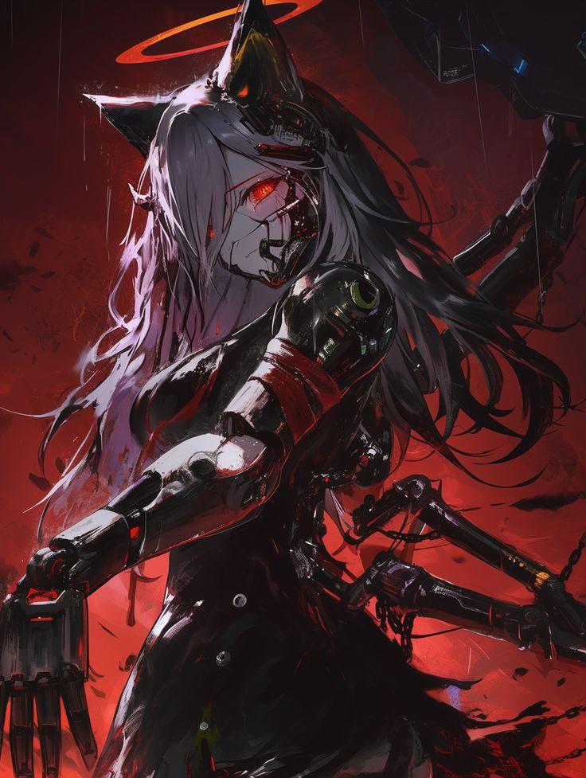
That doesn't means that he's the strongest and flame and others almost
gained the water stone but the strongest guy came saving the king and the
water stone. On this side turns out the strongest guy already came and
sealed sucrose's seal and flame everyone tried running but only kamini
managed to flee. flame and yuta are captured and likey will get exicuted
for their actions. So sucrose and yuta and flame are capture. Kamini fleed
to find neon and yuta and neon and ali were going to save alfa. On this
side yuta took neon to the place as if he was their ally but neon came to
save alfa they didn't knew. It was a labrotory gurded heavely and fleeing
won't be easy. Neon came near the room where she was being kept and she
was screaming like hell. when neon entered the room he saw that one of leg
was cut off. Both her eyes were plucked off and also one of her hand is
being cut by a saw and she was screaming. Neon was so raged that even
shadow knew what to do and he channeled his powers within neon and neon
frooze everything at all and decided to bing her eyes to make sure she
isn't bleeding and took alfa with him and fleed. Yuta decided to take his
chance to do all he can to freeze the guards using his earth powers and he
almost died but he swore to protect her with his all of life and neon too.
They fleed and on this side kamini almost reached the place but she's
still far from reaching neon and everyone and on this side neon was
holding alfa and even she could sence that neon was sorrounded by
thousands of guards. They are all knights and all. On this side kamini saw
neon and everyone in it. One of the guards told neon that it was brave and
everything that he came to save his friend without valuying his life but
this is reality kid. You can't escape. There are thousands of people here
who ranks above him. He can't hope to win against one of them solo but a
thousand. He gave neon a chance to lay alfa down and turn around and
leave. Ali liked this cause he's a cowerd. Alfa told neon that he doesn't
needs to do anything more than that. She's greatful for everything he has
done for her and she told neon that she loves him and tells him to give up
cause it's impossible to get out of her alive. Neon puts alfa down and ali
comes in front of neon and put his hand on his shoulder and told him that
they are not gods or they are not strong. they can't do so much and ali
told neon that he doesn't needs to look back. on 3 2 1 they'll run to the
back. The guard could hear ali and said this kid knows what he's doing.
Ali said 3 2 1 and they ran towards opposide directions. Ali was shocked
cause neon went to fight all of them and neon said manufast and shadow
opend the 2nds seal and neon and shadow combined together. Neon's
appereance didn't changed at all but he got a lot stronger all of a sudden
and he started having kill counts after one another and on another
another. Re insforments were coming and neon thought. Don't look back.
Don't think of the conciquences cause it doesn't matter. All that matters
is that their enimy lays on ground dead unable to steal what they have.
Neon won't let them mess with him. He'll get stronger than anybody there
and will not abey what the world has to say but the world will obey to
him. Those people tried hitting neon but seems like all attacks don't work
at him at all and kamini saw it and he thought that there is no other way
and included into the bloodbath and neon was getting counts after counts
but he ran out of energy and there was still a lot of enimies out there
and looked at his status and noticed that he now has a count of 25
thousand neons of storage thatt increased after opening the second seal.
Neon thinks that they are ready to break the third seal but shadow says
that they can't. The reason they managed to break the sea was the release
of spirit power from neon when he raged. They don't have spirit energy.
Neon asks how does this spirit power even works? it's so confusing and
shadow says that it's soul magic and neon realizes that he doesn't knows
soul magic and shadow says exactly why he can't breka the seals but seems
like neon does have spirit energy. Neon asks shadow if he can do it and
shadow says that he doesn't knows it either. Neon generated spritual
energy without noticing himself but doesn't knows how to use that. Their
hope is that. Cause the energy isn't finding it's way to be released and
breaking the seals. On this side an entire army of people reaches this
place. They call out neon's full name saying that he's the adopted son of
the prince of kagami. He should surrender himself if he wishes to leave
out of here and eveyrone was shocked to know neon's identity. Neon
apologises to his team mates for not telling them this and kamini says
it's not the time for that. Everyone has their secrets. Those soldires
told neon that his friends are already captured and if he doesn't wants
them to be harmed then he should turn himself in and neon, ali, yuta,
kamin those four didn't knew what to do alone standing. Alfa told neon to
leave her and run away and neon stood. He said he'll fight even if he has
to die today. He'll fight for what he needs to defend and if he can't do
that then he can die peacefully knowing he tried his best. Neon stood on
and told ali to run away with alfa and told kamini that she's fast so they
both can flee and yuta asks to stand fight next to neon.
Kamini didn't wanted to but neon told her that there might not be a second
way and it's his fault for them to fall under this situation. Kamini
crying takes alfa and ali and leaves and neon and yuta tried fighting
alone and then came gold and silver with their entire army to fight. Turns
out the king ordered neon not to die and sent an army for him. For which
he's a prince after all. Neon was confused. He abandoned his royalty years
ago. He isn't even blood related to the royals and the prince of kagami
came here to fight himself. Neon's fatehr. He told neon that he may not be
his son but he certainly has the blood of a worrior. And that's what they
respect. This is his army what prince wanted neon to have that he left.
Flashback. Turns out neon was adopted by prince and was taught and
everything but he was bored of everything and he never wanted to be a
prince or had any lust for power or money or the kingdome. The only thing
he wanted to do was see others smile and have an adventure. Even when he
was told that he certainly has the talent to do so and he was treated like
trash by prince's brothers and he had a toxic environment there. At
present neon ordered his army that today they won't stop untill they
rescue flame and his other companions and they also need the water stone
back. It was a massive war between people. On this side the king of
flamingo was talking to the aquamarin king about the fire stone and the
flamingo king asked how can they trust that they are really giving the
stone for free and the aquamarin king explains that they want to open the
gate of hell and maybe they can combine their fire and water power cause
they have been fighting eachother for years but if they combine their
strengths right now and get the soul stone then it'll be good for both of
them.
The flamingo king thought and said what about the stone. Which country
will take it? Aquamarin king says they can think about that later and the
flamingo king thinks and says that he's planning to get the stone himself
isn't he? The aquamarin king tells that they already have the holy crown
of the queen of angels. And when they get the fire stone they'll be
unstopable. It's only natural for the aquamarin kingdome to get the soul
stone and and both kingdomes can rule over the world and flamingo king
doesn't agrees. He wants the soul stone and the king of kagami came. He
said no one is opening the gate of hell. He told aquamarin king that his
people have gotten greedy and they must stop it. The kagami king tells
aqumarin king that his grandson had some friends who are being captured by
him right now. If he might he should release them and the aquamarin king
knows that they are powerless against the kagami kingdome and also he
asked for the water stone and he left. The flamingo king laughs saying
that they had to give up the water stone like that. Pethetic. He left. On
this side the soldires recieved orders saying the king of kagami decleared
that there won't be any more fighting and all the kagami soldires are told
to retun to their base and it seems like the war ended. Neon was worried
about his friends but prince told neon that the king already went to the
aquamarin kingdome right after they could detect their energy after they
were being chased by flamingo country guards.
They all return home and neon saw alfa in hospital. They couldn't save her
organs but she's alive. Just missing 2 eyes, 1 hand and 1 leg. She was
covered in bandages and she explined that they were after her soul stone
and she barely managed to hide it within her heart and she brought out her
fire soul stone and she said that she found this accidently and it got
attached to her ever since then and it reacts to her emotions but not her
command. The spirit for some reason came to comfort her when she was hurt
and now she wishes to see the spirit. She thanks neon for everything he
had done and flame and those guys who were trapped came. The king rescued
them. Neon hugged flame and flame was sadden by alfa's such way and yuta
explained that he always cared for the princess and he was glad to do that
much for her. Along with tuta. Ali teases yuta saying but your princess
love our prince and neon slammed ali for being such a nuicence. everyone
was there. Alfa, neon, flame, kamini, sucrose, yuta, yota, ali, shadow.
Yuta asks neon about him and neon explained that he didn't lied about
anything. He was indeed an orphan and his father who is the prince founded
him in some short of distroyed village 13 or so years ago. That explains
his connection to shadow cause he must be connected to the death of the
lezendery mage and his existence must be connected to shadows.
He doesn't knows much but he doesn't cares. All that matters is for him to
grow stronger and distroy the both gates of after life and then make sure
that other's can smile with him. on this side neon was called to the royal
capital by his grandpa and he told neon conralations on his 14th birthday
and neon thaned him. and the king told neon that he left this royal palace
years ago and does he knows why he is brought here agian? silver comes and
the king explains that silver reported everything about neon and as well
as gold who was also there and the king told neon that he wishes to
distroy the gate of hell when his kingdome is trying to open it and shadow
appers. He told the king that the hell has too powerful devils that even
they can't comprihend how powerful they are and the king brings his eldest
son and and asked if the devil lord is stronger than him and he was
surprised to see his power. He uses dark magic just as the prince but he's
so strong that his mere presence is enough to blow shadow away and told
the king that he may not have his memory properly but he can fell it. This
guy is definetely stronger than the average devils but the same can't be
said for lucifer. The king asks for his other sons and then the strongest
knights to be summoned and then asks shadow again if he still thinks
they'll loose and shadow says that the humen are not goanna loose. The
king says how about more and says that the all 9 countries are willing to
fight alongside to retreave the soul stone and shadow is cowering. Would
it be really be nice of him to do so and shadow said he sacrifised
everything and all to close the gate of hell years ago.
Even sacrifised his physical body not for this and shadow started taking
over neon's body but the eldest son of the king broke the seal and took
shadow out of neon and poured it inside his black stone and told neon to
be careful of this spirit and try to learn using it's power without
letting this beast controll himself and neon listened. The king said that
neon has the poison stone doesn't he and neon brings it out and the king
asks how he managed to get this and he explained that he has future sight
ability which was able to give him such vision of the location of the
stone. The king told neon to do as he was doing and that's to find the
rest of the stones himself and he'll rewarded massibly. If he manages to
do so then he'll make him his heir and neon didn't wanted to be his heir.
He doesn't wants to be the king or ruler. He wants maximum freedom and the
king says he sure will have maximum freedom if he accepts this order and
finds him the rest of the stone. Neon retuns home and tells his friends
about his job and his friends ask him about shadow and neon explains what
happend. and his friends says that they have three prince. Two pricne and
one princess in one place. That's amazing and neon wasn't happy about the
heir thing and his friends were happy about it but neon couldn't help but
feel selfish about this cause they are working for him and his friends
told him that fighting for the next king is something they find
respectable and neon told yota and yuta to join their team cause he thinks
that they have became good friends and yuta accepts.
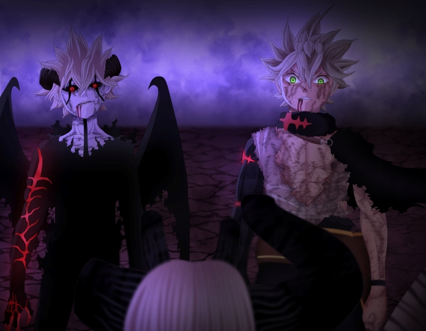
flame later asked neon what are they goanna do about alfa since she's
unable to do anything now and neon explained that he has already founded a
way to return her to normal and that's by machenical arms and legs. And
their kingdome founded some doners who gave her eye. Tomorrow the
operation will start. Flame asked how'll they find the rest of the stones
and neon thought that they already founded the water and the poison stone.
The fire stone is also within their grasp but something feels empty within
them and that's the fact they are opening the gate of hell insted of
distroying it and flame says that it's better since they are goanna fight
stronger enimies. And finally they'll have better missions like fight a
litteler devil and neon says a lot of lives will be lost due to this and
flame says there is nothing they can do since humen are greedy and people
in the lower power always have bad time for those people. They then went
to kamini in search for the lightening stone cause kamini is the land of
lightening and after searching for an enitre months they couldn't find the
lightening stone and neon's forsight ability didn't activated. They were
travelling there as a way of trip but flame started wondering if the
kamini kingdome doesn't have the lightening stone and alfa came. She
finally have legs and arms and she retired from her usual work and now is
just their friend and neon's princess.
they are all here and neon told yuta to take ali and alfa home and ali
asked why and neon said that he already enjoyed his life enough. He can
now go to home and do some training cause they'll be fighting a lot of
monsters now on and if he can't fight a monster himself then he can forget
to fight devils or so. They left and neon was wondering what to do and
then they came across a temple that's similer to the previous places and
neon thought that this place must have the soul stone and flame wondered
who created those temples which are really old like they look like a
thousand years old even thought the evens only happend like 14 years ago.
Neon thought that too but they can't ask questions to distract themselves
cause they don't have the answer for them. They enter the place and find
nothing. They founded a rabit statue that had the spirit stone or so and
they couldn't find a way to break the stone so they brought the stone with
themselves and neon tried activating his future sight and he saw that some
woman will come and break this thing and get the stone and was confused.
What woman? They decided to take the stone back to their home but on their
way home they were attacked by a woman assasin who tried taking the soul
stone and they ended up fighting her on top of a bridge and kamini
unlocked the soul stone and a rabit came who gave her super speed and she
was having fun with the rabit.
They won and the woman was killed off and she was wearing similer cloths
as those purple spider and bombastic side eye. The rabit that was unlocked
as the spirit said that she wants to stay with kamini and the king acceps
such thing and flame wants to take hold of the water stone and he was
given that and the king assumed that sucrose wants the poison stone but
she doens't. She's afraid of her own poers so she only uses her magic to
cook. The king asks how does she find herself able to cook with blood
magic and even she doesn't knows and the king says that her magic is
definetely not blood but it's blood that's part of her magic. fire, water,
black, poison and lightening. they already have 5 stones and 4 more to go.
They then decided that they need to go to fanger for the air stone and
neon thought how can air have a stone. Ali asked why can't they just open
the gate of hell if they want to and neon explained that they can have 9
million neons easily by gatering 9 s rank magic nights but the reason they
can't is cause no one has enough power to compress their energy to such a
condenced level to match the keyholes of the gate and alfa thinks that the
first mage who stopped the gate opening must have did that so it won't be
opend so easily. Then there is that organization or something which are
also following the opening of the gate of hell or something.
Why are they doing it when they can just work together and flame tells
neon that thoese people are after the soul stones themselves. This time
neon decided to split things up to fast things up. Neon flame and ali will
go find the wind stone from fanger. Alfa kamini sucrose yota and yuta will
go meet a girl named yuki in tordon. She knows ice magic and once they do
that they'll find their way to atlantas to find the ice stone. The reason
they'll unite there is common. It's a closed nation and then they'll all
go to sundile for the final stone and that's the lightening stone and mean
time neon will carry the dark stone. flame asks that if neon places the
dark stone what will happen? Shadow didn't gave them proper instructions
for them to understand what way the gate would break or anything. Neon
says that if they place the shadow stone first then place the other stones
then the doork will break and if they place the shadow stone at last it'll
open. That's the setting there is cause when it's overpowerd with energy
already it'll explode due to the dark stone neon currenly holds and if
they place the stone later it'll release the energy in form of opening the
door. Neon tells flame what if they put the dark stone first when they get
all the stones. Flame says that's actually a good idea and neon says that
they all might get punished for that flame says he's willing to do that
cause if the gate of hell is opend then they'll end up killing a lot of
people.
Who knows if they'll even be able to stop the devils and they decided to
exicute the plan. As expected from the previous pattern the remaining soul
stone must be in that short of temple. They must collect information about
themples and all. Ali was talking to neon and flame about taking the wind
stone cause he's the only person who uses wind and neon and flame calls
ali greedy. They founded the temple and as expected they travelled throw
dimentions. On this side alfa and everyone was at the place of the temple
and they met two guys on the entrence. It was from the exact organization.
They were here for the stone? The person used fire magic and the other one
used water and they all fight. The person who uses water magic was
fighting alfa but she was raged and unloced her powers to a certain extent
and she found the spirit inside her. It was a woman wearing white cloths
who gave alfa her powers to use and she awakend the second stage of fire
power and that's inferno. Stronger flames. She won and the person took the
earth stone already and yuta thought that he could awake the stone himself
but he couldn't. Everyone lost but alfa wasn't there. Alfa was fighting
the water guy or girl in front of the gate and the others went inside and
lost the fight and sucrose accidently activated her curse and even then
that guy ran away and then alfa came with her awakend powers who went toe
to toe with her curse powers that activate randomely and almost kills her.
Sucrose came back to her sences and started crying when she realized that
she almost killed alfa cause of her powers and apologised to her and
everyone. She hates her curse and wished that she could get out of this
curse one day. On this side neon and others founded the stone but someone
else came to steal it again and how is it happening to them? Ali didn't
even got to touch the stone and they fought. Those guy possesesed ground
abilities and flame fought those guys off and neon used ice and ali helped
them and flame thought that he should be able to do more than this and he
thought that he is more comfortable with using water than fire? Why is
this the case? Is it cause he's calm? Or it's that it's his nature. flame
asked neon about how he uses ice and neon told flame that it's just a
feeling like you want to freese everything around you and then create
magic that way and flame heard that and it started hailing in that room.
Flame calls it mist. Neon realized that his magic evolbed. It's the second
stage of fire magic. Flame used mist and snow powers along with his water
powers to almost win and wins one guy down but then came the second guy
who had higher powers and even neon couldn't win against the second guy
and ali was powerless. The third guy came and took the second guy with him
and neon decided to go to atlantas and there at the border they managed to
meet in groups and seems like all of them lost and flame concludes that
there is no real way of finding the soul stone and those guys are finding
those places exactly when they are so does that mean they are not
following the pattern and insted they are following them and neon uses his
forsight on will for the first time and detects a crow that hi kills
immidiately and says that he's surprised to know he can use his forsight
on will now.
Flame told neon to use it again but it did't worked and flame said that
neon activates his forsight only when he needs couls it be that shadow
controls his forsight? Neon saw that he had enough energy to distroy the
walls of the 3rd layer of his seal and decided to break it and saw shadow
trapped in a chair and neon asks him if he's shadow's memories and shadow
says no. He's just a part of his own soul. And a sad truth about neon's
existence. Shadow tells neon that they are one creature and neon isn't a
human and neon wasn't surprised. He said that so that's what it is then?
Shadow told neon that they are one entity and when they'll be together as
they used to be then neon will be back to whom he was before. He will be
back to what he dispised so much and everything. But he won't gain his
memories. Neon will only gain a portion of what he hated about himself and
neon breaks the seal and becomes one with shadow and neon remembers
everything. He used to be a spirit like creature and he was friends with
the lezendery mage since childhood and he had great love for animals and
for some reason had 3 soul stones and used those and combined with his
spiritual animals and he had a humen friend who resembeled the recretion
of akuma as a humen. He's arvin. Then when the time came...what happend.
Neon's memory is hazy. The mage died and neon as shadow managed to close
the gate of hell and he took over the body of a dead child. Neon
understands now.
This body originally doesn't belongs to him. It belonged to a dead child
and so that's how he was born. from a spirit? flame asks what abilities
did neon got and he said just some darkness power ice and now his forsight
power. He has other elements and powers too but not enough experience or
anything at all to use them and flame told neon that he's a good person
and their friend so no matter who he might be he'll always be dear to them
and neon thanks flame for that comment. Yuki is here too and she joins
neon's team. They enter atlantas and neon immidiately knew that the stone
isn't at it's place. Neon knows the location of the stone due to his
connection with the stone and he saw that the stone is at someone's hand
and the way his forsight works is it can see aura like threads connecting
and neon flollowed the thread and founded himself in front of a city
that's isolated and seems like people aren't welcoming. There aren't
people in the open and neon wasn't wearing cold cloths and alfa was
worried about neon's higyne and neon said he doesn't needs warm cloths and
he decided to look for the place and he founded some girl with the stone
and he knew that she had the stone. Neon went to ask that girl but she was
running to fast and they decided to follow her and then they came across a
river where a poler bear was stuck where that girl came to save it and
neon saw that.
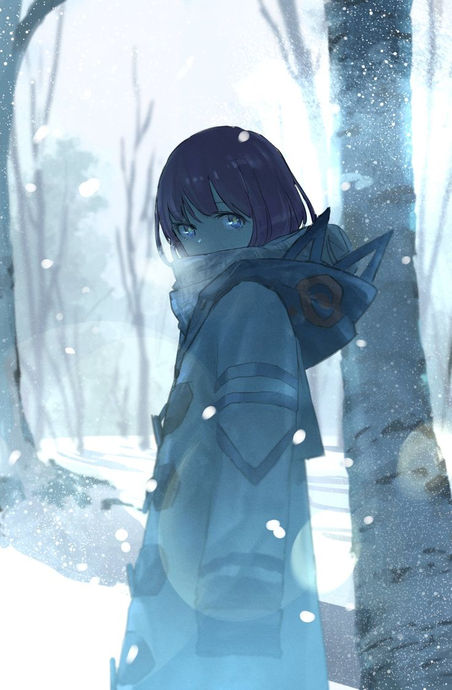
He went in front of the girl and asked her about her stone and she said
she isn't giving them her stone and neon asked her if she knows the origin
of that stone and a blast happens. It's those three people who managed to
run away and came for the remaining stone but neon was angry enough to
unleash massive fire power along with cordinating ice and everything. He's
in a leauge of his own now and those people died. Neon soloed them and
that girl ran away after that. Neon thought they now need to find her.
They find her and she was in a orphan home with other pwople who are
taking shelter after a huge storm and neon heard about their problems of
house and decided to build them houses in exact places they lost their
houses and ali asked why are they doing this much for someone they don't
know and neon says that it's for another smile. While making the houses
that girl leared about sucrose and that girl told her about her parents
situation that's bad since her pernts were jailed for her leaving the
coutnry. This country is a living hell to live in cause the govt can do
anything at all in their power to punish no matter how un reasonable it
might be and sucrose could do all is cry. After making house giving them
food and good cloths to wear and good watersupply neon was give the stone
by her and neon asked how she managed to get the stone and she explained
that she once saw a snow fox and alfa explains that's exactly how she
found her soul stone and it turns out the snow stone can turn into a fox
and alfa thought why is her stone is the only one that can't turn into a
cute animal. Even flame's water stone can turn into a cat.
Seems like people came to take the stones and it was the leader of the
organization and neon with max power with everyone else couldn't do
anything in order to stop them from taking the stones The leader told neon
that he should be thankful that they are keeping him alive and neon asked
were they following them and the leader said that finding a person with
the exact powers what can locate the stone was a lucky find. He then left.
Everyone lost. Neon thought how strong that guy was? He could not use his
shadow ability to pass throw stuff in front of him. Why? They all came
back to the kagami kingdome and neon wasn't scolded by the king and insted
he was told to not give up the find. Maybe it was their own fault to let
him keep the stones insted of safe keeping it. Neon saw the eldest son of
the king and thought that he looked a lot like that guy who came to beat
them up and asked him about it and seems like that guy turns out to be a
lot different and neon said he was just halusinating and he told neon that
maybe he wasn't halusinating. Since it's wierd how the king let him keep
the soul stones and neon asks if it was his plan some way and that guy
says that it's a matter of worlds end or not. Of course he shouldn't trust
no body even him since there could always be a traitor. Neon thanks him
for the suggestion and that guy left. Neon remembers that first encounter
he did with a ghost. He told flame about it and knew that he was
originally a spirit but he has no memory of it or splitting himself up and
why did he split himself up. flame thinks it's to restart his life maybe.
Neon thinks otherwise. What if he did something absulutely horrible like
killing the original owner of this body and that's why he splitted his
memory up? Neon then remembered that a woman came to know about her son
who's name was alaric. Flame thought what if your real name is neon
alaric? Neon was too scared think himself to be that evil. Maybe he was so
evil in his past life that he wanted a next chance. Kamini says that's why
you are so pure and alfa slams her head. Neon says he definetely want to
go back to that place now and flame says he'll go there with him. Neon
accidently turned on his vision and he saw that the light stone is in
sundile and flame said seems like they have to go and they went to sundile
and there they wonder arount the coutnry and everything and it seems like
a technological advanced country. They go to a library cause that's where
the soul stone seems to be hidden but the library isn't for normal people.
It's for royalties only and neon is a royalty so he got a free pass and
from there he founded a secret room and saw a throne type place where a
king like person was standing. He looked young and he was wearing the soul
stone and he asked who gave permission for you to enter? Neon says that
he's neon from the kagami kingdome and he can see that he holds a spirit
stone and that guy tells neon that he didn't got this spirit stone he
earned it's respect that's why it obeys him. He can give it to him if he
earns it's respect too and he takes neon to a different location where
they fight.
It's a golden library type place and it's also between a dimention and
told neon about this battle which will be 1v1 and this is the place where
he first got the soul stone and while fighting neon that guy asked neon
why he wants the soul stone in the first place? Neon says that he doesn't
knows himself. He at first wanted it for something good but right now it
seems like he doens't needs it. He was just curious about the person
holding it. That guy told neon that it's in right hands cause that guy is
a royal mage and will use this for the betterment for their people and
neon ends the battle by loosing. Neon told that guy that he's strong and
shakes hands and also he told him to be aware of some guy who came to beat
them up before and took all their soul stones and that guy said he's
really strong. He won't loose it and speaking of the devil came that
leader guy who fought that guy and won in front of everyone and took away
his light stone too. Neon notices that guy's hands and he instantly
noticed that that guy had the hands of a devil even though he was an angle
and told everyone that that guy was planning to open the gate of heaven
and too late cause he already got the soul stones to do so. He left. Neon
came back and he knew that he needs to do something cause the world is
goanna end if that guy opend the gate of heaven cause devils will capture
the world and turn it into hell but angels are hell themselves. They'll
eradicate humens themselves and create a heaven out of it. Neon went back
to the royal capital to inform them about what is about to happen the the
eldest son told everyone that the king is found dead and the prince
thought how could this happen and the eldest son explains that the king
has been dead.
Neon tells them about the gate of heaven and gold says that they should
not waste time and bring their army to there and they went over the
aquamarin kingdome and went near to the gate of heaven they located years
ago but turns out it's already opend and it's none other than the king
himself. The gate looks heavenly and not on the floor. It's like a real
gate and staircase to heaven and angels are coming out of it. When the
eldest son came he realized what happend here. The king explains who he
is. He's the first son of the first original angel out there. 100 years
ago he was released in the world after he was sealed up by the first king
of devils and he wants to revibe his home land. He finally managed to
bring back the angels to this world and he was killed by the anel queen
who called him a filthy creature for being their impure decendent and
throws his body away and the angel queen told humens welcome and thank you
for welcoming us but we are not goanna let such filthy creatures live on
this beautiful planet and let it be turned to a wasteland anymore. The
angel queen declared a war against everyone and neon went in front to
close the door of heaven but the angel queen threw all the stones at neaon
and neon took all nine soul stones and used their powers inside himself
and uleashed his max power to fight with the angels and it was an all out
war.
The prince who is neon's father went to call for healp from other
kingdomes since it's a crisis. They need maximum power and even with every
power of everything neon couldn't defeat the angle queen and the strongest
guy from the kingdome fought that angle and lost. It really shows their
difference in power. Neon knew that he has no way of winning so he called
out his team for going to different places as much as possible and ask for
help and told alfa to go to aquamarin he told everyone to go to different
places and told flame to come with him cause he knows a certain place and
told sucrose to activate her curse and she did and went beserk mode to
fight the angels. Neon left with flame. They went to the exact place they
went as their first mission and that haunted manthion. There was a devil
sitting waiting for neon and flame who are both now strogner than ever. On
this side yuta went to inform the flamingo kingdome king about the
situation and asked for help and he immidiately sent all short of help. He
also took the crown of the fire to give to alfa. On this side alfa went to
talk to her father even though she hates so much him and he gave her the
autority for everything for now since age is cathing up to him and he
can't hope to join the battle unless he wants to die and alfa took aside
all of her hatered and tried leading her people and on this side every
other country sent their people for the big war that's about to happen and
one of the village immidiately turned into a blood bath when the angels
passed throw that place. On this side sucrose's curse ran out and she fell
on the ground like a dead.
kamini kept fighting and ali already gave up. Yato was fighting while yuto
almost died and is laying on the ground. Alfa was still fighting and she
evolbed her fire release to magma release and increased her powerlevels.
Seems like her time to get stronger came close. Yuki was fighting too. And
on this side neon asked that devil if he's part of him and that devil
doesn't responds. It fights neon and even with all the 9 soul stones he
wasn't able to beat it and even flame unlocked his ice powers and even he
couldn't defeat it. They ran away from that place. On this side everyone
was loosing the fight so they took some short of shelter from the fight
and seems like the world is ending for them and the angels are rapidly
ending lives and so on and the angels after an entire day of rampage
decided to stop since they don't want to spend too much energy without a
break. They took a tiny bit of time to spare and create the heavens on
earth and the humens took this time to take shelter. Neon thought what to
do right now and flame told neon that the elfs are good option for
fighting angels cause they also have a good fighters and neon heard about
the elfs but aren't they just a tribe. They can't provide militery power
and flame said that at least they can ask them cause doing something is
better than nothing. Neon then had a crazy though. The world is ending
right now. Flame asked him what the thought was and neon said he still
doesn't knows. He needs to think about this. He needs his phone and he
heads towards the elfs.
While so he calls gold and asked him to hand over the phone to the
strongest one there and asked him that is it true that the devils and the
angels are blooded enimies? That man says yes and neon asks if they open
the gate of hell will they fight to eachother? And the strongest guy says
yes they'll and end eachother but till then the earth will be left a waste
land. Neon asks what if they have to win against a single man insted of
fighting the entire world. Would that be possible? And the strongest
prince asks if neon is talking about the lusifer stone and neon says he's
currently heading towards the city of elfs. The mean time they can take
shelter and reach to the gate of hell and prepare as much people as they
can cause they are goanna open the gate of hell once they are done with
the elfs. The strongest agrees with the planing and called the doctor in
the labrotory but some short of black creature took over the strongest's
body that rose from his own body. On this side neon reached the city of
elfs and there he gathered attention and he told everyone about what is
happening and he asked for their help and the elfs were willing to help
and they take neon and flame to a place. It's a cave where there is kept a
sword and a ring which neon takes and sees a tablet where his face is
made. A girl name ela told neon about the prophesy that was carved here by
one of their ansestors about someone who'll come and to follow him.
That's the reason they kept those two things here along with the holy
water that is said to release one's true strength and neon and flame takes
a dip in that water and both gets out clean and neon took the tribe power
along with him. Then there this group which was supposed to come to near
the gate of hell arrived there and the angels sorrunded them so they were
forced to fight. On this side neon saw those people fight so he told the
elfs to sorround the place like a circle and asis them and they do so as
neon and flame reach to the gate of hell he saw the doctore being choked
by the strongest. Neon told him to stop and that man is possesed by an
angle and neon decided to fight him while flame takes all the stone and
puts them on the gate of hell and neon almost dies and on the last moment
flame managed to open the gate of hell. As soon as he did thousands of
devils rose out of the gate and got released to the world. As soon as they
saw the angels they were tempted by their blood and wated to eat it. They
immidiately starteed fighting with them and on this side when the
strongest tried closing the door neon took the soul stones himself and won
the fight but a leader looking devil came out who took him out with a
single blow. He formed his people and told humans out there to be quiet
and obey their orderes as the king is approching their teritorry. The king
of hell lucifer gets out of the door and asks neon why he opend the gate
of hell and neon said that angels invaided earth so they needed their help
and the devil said that he is greatful to him that's why he'll eat him up
at the last and right now lucifer first wants the angel queen's flesh to
eat.
Flame noticed that they are part of the original devils so neon asked
where are the devils from the earth? did they not reach after life and
that leader type person told neon that those creatures have a afterlife of
their own. Lucifer was about to take flight and neon thought that they
made a huge mistake by releasing the devils but at least now they can hope
to survibe the impact. All the devils started exiting from the gate.
Suddenly a huge earthquace happend and neon was shocked. Lucifer noticed
something and ran away as soon as he can. The leader guy said for everyone
to close the gate as soon as they can but it was too late. Someone came
out of the gate of hell. It was a human? That guy was not wearing a shirt.
He looked at outside world and thought that this was a 100 years since he
felt cold. It's really nice. Every devil present there was really afraid
of him for some reason. One of the devils shouted that run but that guy
broke his jaw like clay. It was akuma. He told everyone to stay silent as
he went forward to sit on a throne looking chair and asked for medicine.
He's having a head ache. The devils kept going back to the door of hell
but akuma told them to stop. He ordered the head to tell them to all come
back and go fight the angels. The leader took the order like a shock and
did it. The scintist guy came back with medicine and akuma got his head
ache cleared. As he looked at the leader guy he asked him what time is it
and he said the time and everything including year and akuma thinks that
it's been 100 years. He magically appears cloths like a king and looks at
neon.
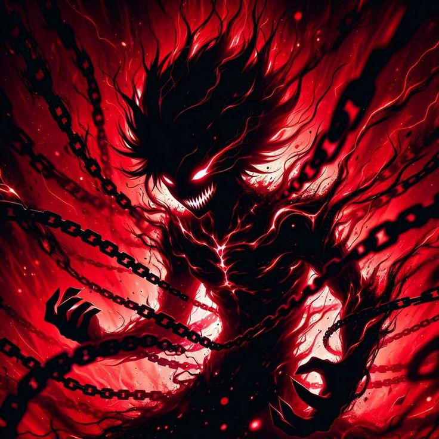
3 of the soul stones returned to akuma as soon as he started at them and
he took back the sword and the ring. He asked neon who he is and neon told
akuma his name. Akuma asked neon why he opend the gate of hell and neon
told neon why and neon started fighting neon with no energy at all. He was
in a different leauge who managed to reflect any blow at all with minimal
effort and without magic at all. He told neon that he's weak and if he
really lacked the motivation to win a war he decided to take the easy
route by releasing the devils. Now both sides can die fighting and in the
middle humens woul survibe? That's what he's hoping for? That's fulishness
since there is always a winnder or a looser in a war. Who ever would have
been left in this world would have distroyed it. Neon is failing in life.
Flame looked as his friend was loosing everything and akuma told neon to
go and stop this war himself if he can. Neon goes with flame to do so
since he doesn't knows what to do and asks who akuma is and he says that
he's the lord of devils. Ribrth of the Lord of Devils The story starts
like this. Akuma the person who is called the god of devils was killed by
someone. After that humens came to existence. Akuma here is cleary seen
reborn into morder era but something is different. Everyone has access to
magical powers like before. It's called aura and the city they live in is
called the city of freedom where the devil god's body is along with it's
also theorized that the devil queen ayaka is still suffering from her sin
she comitted by sleeping with the father of akuma.
To be honest the history is changed a lot and akuma right now who lives
under the name kuma knows that it's impossible for people to preserv
history for 2 thousand years. He goes to school and everything is booring
to him and he has many friends and everything. He has a friend called
arvin that asked akuma to visit a resturant and akuma does so. The food
sucks and akuma grabbed his chocolate milk shake that he loves. Arvin asks
akuma if he's still unable to use any short of magical powers and akuma
told arvin not to mock him thousands of times. Arvin told akuma that he
may not have powers but he's sure strong. In class they were teaching how
the powers came to be and the devil god. It was at the exact day akuma was
born. Arvin said that akuma must be the choosen worrior who is born on the
eaxt date when magical powers started appering. Akuma said that million
other kids were born on the same day on earth. What is arvin talking
about. Arvin was just making fun. Akuma asked arvin which religion he's
following and arvin says he's hindu and akuma says that he's a muslim yet
they are having problems since those good for nothing people spreaded
wierd mythology about devil god and everything. Akuma absulutely doesn't
believes on devil god and he hates him cause he's a religious person and
hearing people say that the devil god did this did that and sacriifsed
himself to seal the great source of evil within himself all sounds like
children fairy tale. He hates when someone says that Oh You don't believe
in him.
That explains why you didn't got any powers. Arvin laughs and says that it
doesn't matter if they believe or not since weather what they do won't
change the truth no matter what. In home akuma was eating dinner and his
grandfather was telling stories again about akuma and how he saved lands
and akuma said he's tired of everything so he can stop his stupid stories.
Akuma's father came and he tried talking to akuma. Akuma said he won't
accept his poket money decreasing and his father said that they are
changing religion and were about to ask akuma about this and akuma was
eating food. He threw the table and distroyed all the food out of rage. He
looked at his father with cold blood and said I don't care what you
fuckers do. I don't want such mess in my home. Akuma's father told him
that it's just that everyone in their socity is treating them bad for that
and akuma leaves the house and his mother tried stopping him and akuma
said that they will betray anyone at all just cause socity. Does it
matters what kind of socity they are in. He's living in a city of freedom.
Does people have no freedom in such city? Akuma leaves agryly. He goes to
arvin's house and he welcomes him and asks him if he wants a mat to say
his prayers. Akuma asks how they have matress and arvin said that it's a
muslim country so a lot of the times they come their house.
They might not be muslims but they respect that religion and will keep on
doing so. Akuma says even he respects their religion but the fact someone
can abandon their believes just cause socity is like you can do anything
from betraying to terririosm if you are willing to do that. Arvin agrees
and asks if he's goanna live with them from now on or something and akuma
says no matter how good friend he might be he can't stay at his house
forever. He'll try his best to find somewhere to live and arvin's mother
comes. He tells akuma that he can live as much as he wants. Arvin's door
will always be opend to them and akuma says that they are extreamly nice
people and he's glad to see that. His mother asks if she shoul order some
cow meat since some people like to eat beef. Akuma says that he doesn't
needs to eat beef while he's at their house since he doesn't wants to
disrespect their will and she said that they don't care. Some people eat
beef in front of them but just cause they don't doesn't means that they'll
stop someone else from doing something they wants. Akuma asks her politely
thank you for your kindness. Akuma then next day goes to school and he was
talking to one of his classmates. It was ayaka. She told akuma to come
home to study and her parents aren't home and akuma understands the job.
Then seems like a bully type student came whom everyone fears. That guy
was a C rank powerful worrier/ fighter/ shinobi or whatever.
His power level is c rank and everyone fears him exectp akuma of course.
Even he avoides akuma cause of their bad history. Akuma was once bullied
by them due to him being a non believer and being no power holder and
akuma showed hell to that guy. His name is robert. So robert was servin
another master who also didn't liked akuma. Akuma also didn't liked robert
cause he was an absulute nuisence. His father has a hero association where
they go to as per college or something and then be a hero or something and
since his father is the only head of the only association of the coutnry
he's hell spoiled and some say that his father is the strongest in the
country and he'll surpass his own father. Akuma thinks that's bullshit and
everything. Then time comes when akuma is teaching ayaka some school
related stuff while on his phone. Ayaka asks how to do that certain math
and akuma uses one word to teach her. She asks if akuma have a gf and
akuma says no why ask and ayaka was extreamly angry. Alone girl always
asking for favour asked you to come to her home when her parents aren't
home and asking if you have a gf or not while wearing shorts and you still
can't catch a hint?
Akumsa said that if she doesn't likes him then he can leave cause if she
really have that high standards then no one will ever love her. Ayaka asks
who hurt him that he's talking like this and akuma says no one. Ayaka
realizes that akuma is in a bad mood and tells him that she can let him
kiss him if he does it quick and akuma takes a picture while she was
saying that. That night a teacher looking person was wondering off some
school and while so two girls passing by suddenly noticed that man. They
both started talking how hot he was and they wanted his number and that
man touched the head of one and she dissepeared and then touched the
throat of the other one and she also dissepeared. She was embarrased by
the photo and started jumping on akuma to delet that but fell on him
insted. She decided to stay fallen and kissed. The next day ayaka's
friends mock her and akuma says he doesn't understands girls. Today those
two girls came who were simping real hard for the person they saw last
night. Stephine knows her friends and asked what that man was and wanted
to do and she said that she doesn't knows. Just toucehd that man and he
teleported them or something. Ayaka was confused. And she noticed that
they both had marks on their neck and one of the girls wished to die
chocked by him and akuma was super confused? What the hell is funny about
chockin?
Is this a new meme? On this side robert's boosy leader akio came who was
torturing a kid cause he step foot on his shoes that are expencieve. Akuma
went to save the kid and told robert that he can't do anything he wishes
here and akio says he can do whatever I wanna do do you know who my father
is. Akuma says that your father is a farmer who raised a failed cheese
cake? Do you know why I said cheese cake? Akio asks why and akuma says
cause he's a spoiled dairy. akio get's angry and starts fighting akuma and
akuma also got angry and started throwing hands with him and he was
winning at first but he stopped as soon as akio started using his powers.
He's called to be an A rank guy or whatever. Arvin had bought a device
earlier and he decided to use it in front of akio and he's a S rank and
arvin tried shoting it on akuma and it didn't showed any reading and
showed S rank. That's not possible. Is it broken? Akuma and akio fight and
akuma was getting beaten up and ayaka went to save akuma and akuma
awakened with burning flames. He was burning himself with the heat but
insted he controlled it and became a fire man who couldn't be stopped. On
this side akio's father's association detected a strong beast appera out
of nowhere and it's at the school. Two s rank heros were sent. The entire
country have only 29 s rank. The situation with these are going wose.
China got 1499s ranks and america got 1119 and russia got 3013 s ranks.
How can a small country like their's would comare to them if a war broke
out? Hell even india have more than a thousand S ranks. On this side akuma
became a fire beast who was fighting akio and things were getting out of
hand. The reader showed s plus reading and ayaka said that he had an
awekening and akum was looking cool but akio quickly pased things up by
trying harder. He still has a card up his sleeves but he can't use that
unless he turns out to be stronger than him and that happens. Akuma
overpowers akio and almost wins. Those 2 s rank came in and stopped akuma
and that guy but akuma and that guy just started. One was creating a
barrier and one stopped them but akuma and akio started fighting and that
guy releases his beserk mod. A power scaling way to loose absulute
humanity and gain 200% energy and power boost. A person who goes into
beserk mode can't go back unless he's defeated. Akuma wondered what to do
cause he's loosing it now. Those two only could see the fight cause they
didn't had any other way of resolving 2 s rank fight with just their
interfearence. That guy starts loosing the moment akuma's back started
glowing and his fire went out. He was turning into a devil and the two s
ranks explains that akuma is devil posses but insted of being a devil
incarnate he's a revibed devil that means he'll loose himself but usually
devil reincarnates or rebiths are happend with pair. Where is akuma's
pair?
And ayaka shouts akuma not to loose him and akuma does so. He stopped
transforming. But seems like akio transformed into a epic berus style mode
which is extreamly hard to defeat. Akuma doesn't knows what to do since
ayaka told him not to change and he grew a horn and a wing that he's using
to fight. One of the 2 s ranks noticed that it's usually immpossible to
stop a devil incarnation but how did akuma stop? Was she the key. That guy
demanded to see ayaka's back and took a picture. Ayaka slapped him
thinking he's a perv but turns out she has a mark on her back too. She's
also a devil incarnate and akuma's pair since both their sybmols match.
Ayaka asks what that means and that guy tries simplyfying it by saying
that they were married in their past life and ayaka was happy to hear
that. Akuma tried turning into a giant flame bird in order to fight and
looses but he doesn't gives up. He says sorry to ayaka and tells her that
he won't change just his apperience and transforms fully to his prime with
3 soul stones and he summons back his all summons like the dragon the
giant dog and his fire stone along with the dragon he had. The meter broke
this time trying to messure what akuma's power level is and an entire
stome was here. Akuma won without sweating and also he summoned back his
giant sword and it was really big that turned small and got back to being
as it's original size.
Akuma thought that this thing looks dirty. He decided to throw it away
since it's preety much useless to use it anyway. This side everyone was
happy that akuma won and also was wondering what to do. Ayaka was hurt a
bit and akuma healed her and those two s rank asks if akuma got his
memories back and akuma asks what memories and they explains what means by
his back and akuma was surprised that he was a devil in his past life.
That explains the growing horn. Ayaka was talking about everything and
seems like she was an devil too and akuma accidently breaks his horns
touching it too much. Ayaka tells akuma not to break the other one. They
look cool and akuma says he knows that but he has adhd. On this side
akio's father came and akuma thought he was angry at akuma but he
apologised at akuma for causing such problems and everything and those 2 S
ranks were ashamed too. Akuma was requested to come join their hero
association cause of his talent that he just awoke. He saw that massive
sign and he thinks that he's the god of devil himself and akuma thinks and
says that good for nothing fake god? I'm not a god. That man says ok how
about the king of devils. Akuma thinks and says the name of the demon got
was called lord of demons right? So from now on akuma is the lord of
devils. And also ayaka is coming with him cause she's his queen if that's
really true and that man accepts her to join. Akuma was happy and all and
fell instantly asleap cause he's exhusted. On this side it became national
news that the sword that was there for thousands of years was removed by a
highschooler and it's being speciulated that he's the god of devils but
that child has refused to take the title god.
He says that he's a religious person who doesn't believes that humens or
any creature is worth worshiping than god himself so he calls himself the
lord of devil insted of the god of devils. On this side the whole that is
in is a cave where the sword is and the association of akuma's managed to
retreave the deadbody of akuma and also the living soul of ayaka who was
suffering for years. On this side akuma was sleeping and ayaka was with
him too but it seems like a cell to her cause the bed is too small and
they can't sleep together since it's too small and ayaka thought that guy
who touched her friends needs to be taught some lesson and went down and
asked akuma for help. Akuma was bored and didn't wanted to do it cause he
was sleepy. Both of them went inside the school that's in the mountain.
Akuma thinks back and says that this school is abandoned for years and now
they are steepingin. Ayaka tells akuma that's the exact reason her friends
came here last night. It's said that there is a ghost here and akuma
doesn't believes in ghosts but's definetely afraid of them. They spot a
guy standing and ayaka asks akuma to talk to him cause she's afraid and
akuma thought that it's just a man. What max can happen? He goes to talk
to that man and asks him what are you doing here and that man asks akuma
what he's doing here and akuma says that he's here to find a guy who
created a wierd mark on his class mates. Akuma asks if two girls came to
flurt with him yesterday and he says yes.
Akuma asks what did you do to them and he says that he send them back to
home and akuma thanks him and leaves this surprised both ayaka and that
man. Ayaka told akuma to fight him or something or take revenge. Akuma
says why would he be rude to such a nice guy and that guy asks if he
should apologise for that but that guy doesn't apologises. A man passes
throw that man and told the kids to go home which shocked akuma and ayaka.
He's a ghost? They were both super scared and ran back and that guy said
he's not a ghost and akuma got the courage to talk to him and asked what
he is and he said he's just a spirit that doesn't have a physical body and
akuma asks what he can do for him and that guy said not really much but he
would love if he came here to talk to him and akuma says he'll come to
talk tommorow morning if he wants cause he's feeling sleepy. That man then
explains that the devil king never likes to do the things he wanted or had
to do for later. He was a curious little guy. Akuma asked if he knew the
devil king that that guy explained that he knows him. Not the best but he
knows him cause he was his father. Akuma asks so he's his father then in a
funny way and he says yes. Akuma never thought he'd meet to his son before
he'd meet to his wife and ayaka said that she's sitting next to akuma.
Akuma asks how is he his son if he and all of them died and he says that
his name is Neon alaric and he doesn't has the answer to himself but he
knows that he's his son and that's something he can conferm. He touched
akuma's soul stone and all 3 of them started glowing and akuma fan feel
the soul connection they have.
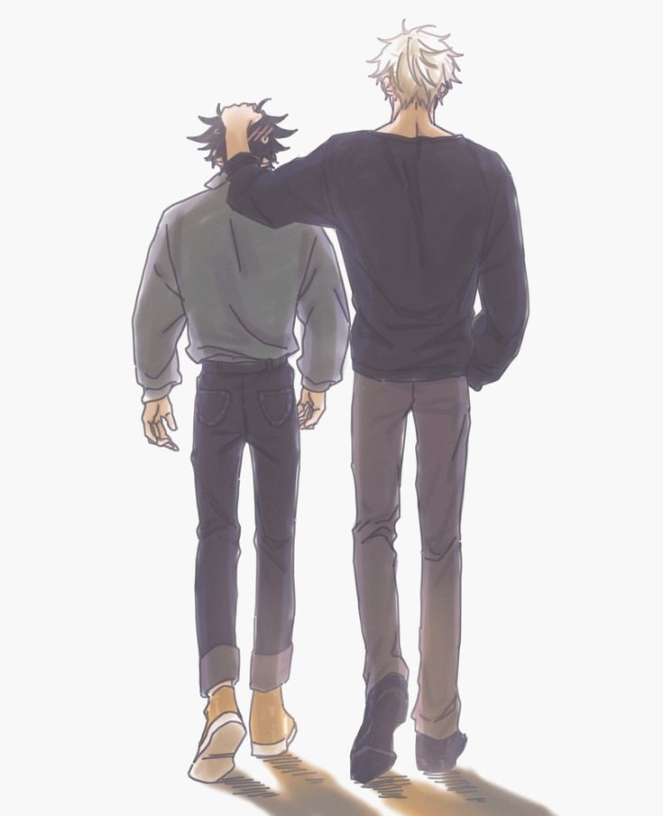 Neon told akuma that
he was the only person who knew about his existence and that's why he
wants him to remember what he lost. And that's his broken memory and past
guilts that he didn't managed to do. Neon takes akuma to a room and tells
him to meditate and akuma is in his own relm of conciousness. Neon tells
akuma to find his soul core that might be here somewhere which contains
the autority to himself that he sealed within himself to makesure he
doesn't get's all his memories just as kids to make sure that he grows up
like a normal human and understads how they live and then when his life is
in danger he'll unlock his powers but no knoledge of how to use it. Akuma
says that he already knows how to use everysingle of his power. That's his
iq that's great. Akuma can't find his spirit stone and on this side the
sun roose and ayaka was sitting next to akuma sleeping on his lap and she
got a call from the association that immidiately called her. She decided
to leave akuma to neon. On this side a guy named luffy was seen with two
guys and he had some secret info he got. On this side akuma was
struggeling even more to find the soul stone and neon told akuma not to
break his soul stone since they are usually fragile and if he even breaks
it he'll die. Akuma accidently steps on glass and breaks it but thank god
it wasn't his soul core. There was a mirror in the room.
On this side ayaka came and asked what they want and she met with her own
self that's in front of eachother and they explained that there are two
ayayka's but one is their soul. Two bodies but one soul. They need to be
pieced together. Ayaka asked her old self what she is thinking and her
words were ancient that she wasn't able to understand. A huge blast
happend here. On this side akuma found his soul core inside the mirror but
how'll he access that place and akuma decided to break the mirror
dimentionally and entered the relm and fought a gooey creature and burned
it and took his soul stone and accidently dropped it but catched it
anyways. He then holded his soul core and the entire relm collapsed. Akuma
remembers everything and breaks his souls core and thinks to himself that
this thing is annoying him and neon asks how did he do that and akuma
explained that he just removed his soul from this stone as a manufastation
and broke it. There is no manufastation of soul now. Akuma then tells neon
that so he stole an apperence of a man and neon turned to his real form.
It's an black entity and akuma apologises to his son for not being able to
girf him a physical apperence like normal and on this side ayaka was
captured and kidnapped. The real one. Not the old one and the old one
chased them with the 2 S ranks and on this side akuma felt some short of
distortion that was going between his mind. He asked neon how he's been
and realized that something is wrong. He checked the entire area with his
aura and figured that ayaka is being kidnapped and decided to move and
neon asked akuma to be able to move from this place. He trapped him in
this place for years now and akuma apologises to neon and says that he'll
get lost otherwise and apologises before leaving but his darkside takes
over and fights akuma.
How can he fight a monster with no physical body only soul to touch. He
can't kill his own son otherwise he would have distroyed this annoying
creature. On this side the person used ayaka's powers to drain as much as
possible with the other's power he drained too and then was about to use
them to open the gate of hell. They managed to steal ayaka's neckless and
it wasn't a neckless. It was her soul stone and left ayaka. Ayaka managed
to save the current ayaka and she's greatful to herself. On this side
akumanages to calm neon down and tells him that he'll return for him even
if it means from the depts of hell. He'll return for him one day. Akuma
leaves the reaches the placece to meet ayaka and hear the opening of a
gate on the road and he knew that it was the gate of hell and akuma went
to the gate insted of ayaka's location and ayaka heard that and told to be
next to that place cause akuma is there and they got a translator working.
Akuma is there. At the gate of hell and it's world wide news now that a
mysterious gate is opend and akuma goes around and beats that guy who
opend the gate of hell and decided to use his powers to close it but it's
already too late but akuma knew that this might happen so he went inside
to fend off the devils himself and managed to hold them. On this side
akio's father including came hearing the news that the gate of hell was
opend and decided to bring his good for nothing son to help and they saw
the barrier made by akuma and used it as an advantage to get in the gate
of hell and it's all red everyweherre.
Thousands over thousands of original devils are there whrere akuma has no
chance but he decided that he won't run away and face it all even it means
being alone against thousand or billions. He started fighting and ayaka
came to aid akuma and akuma appereciated her and hugged her mid battle and
told her to get awawya as he uses the barrier to expand the spacebetween
the space between the devils and the gate and told them to focous on
closing the gate and akio was too excited for the fight and he went beserk
mode with his infinite powers and akuma on this side said he can tackle
him and they can focous on closing the gate and they do so and akuma and
akio fights alongside and then came lucifer who had the strongest aura out
there and akuma was too exicited to fight him and he almost won but ayaka
managed to gather enough energy to close the door and asekd for akio and
akuma back so akuma decided to create a huge distraction and grabbed akio
and planned to get out of there but he realized that they won't be able to
get out in time. I mean akuma will but so will the devils so akuma throws
unconcious akio to the cirface and tells ayaka sorry and decided to hold
off the entire devils and this scean looks so cool and they looks like
ants. The door was closed thanks to akuma's sacrifise and akuma decided to
fight all the devils himself. On this side ayaka was so sad that he was
goanna die cause there's no way he'll survibe.
Both ayaka's were crying and akio's father was greatful to be meeting this
great man and he reported everything that happend and ayaka's name and
phto wasn't told and the current ayaka is following the past ayaka to get
stronger and to find a way to unite together again. Three years pass by
and on this side akuma doesn't have any of his soul stones. He threw them
in the surface knowing that he might not get a chnce to get away. His
black gem is on neon and red one is on kitsune that was the queen who
managed to become a soul creature and his white one is near ayaka. Which
was used to close off the gate of hell. Akuma was able to continue the
fight for 3 years and in the end he had to loose. He was outnumbered but
he decided to gather paitence and he was trapped and tortured in hell for
years now and 100 years or so passed. The gate of hell was opend again and
akuma thought that people are stupid not to manage to keep a single gate
closed. He decided to break his own seal that he was able to and the guard
tried stopping him but akuma was never using his full power cause he
burned himsef out in the first time and knew that if they know what he's
capable of them they'll kill him off and he also had the prevelig to get
out of hell anytime he wanted. He just was gathering paitecence and power
to kill them together.
Seems like humens were too kind to let him do that to the devils. He got
out of there and it was snowing. He likes snow cause he didn't saw cold in
the last 100 years. Akuma looks back and one of the devils say that he
broke out the the chains and akuma thought what did he said? Chain? Did he
really thought that chains were strong enough to bind him? Nop. They
weren't. Akuma sat on a chair and wore his outfit back and said that the
king is back. The lord of devil had a rebirth. Neon was confused about
this akuma and then realized that he's the king of devils. He was about to
ask him something but akuma already left. Neon reached the battle field
and started fending off his friends and also saw that the devil king
lusifer and the devil queen was fighting and neon splitted his stones to
people with suitable powers to use them as he with no power started the
fighting to few of the devils to fend themselves off. On this side the
fight of lusifer and the queen of angels was going good but seems like the
queen of angels had no chance against lusifer and humens have lost their
faigh and akuma was clapping for lusifer and lusufer stopped his apulse
and went serious. He could have ended the angel queen's life but he let
her go and even the angel queen can see the fear within lusifer's eyes.
Akuma had his 3 soul stones and thought to himself about this and tossed
his stones to neon and started acting cheerful and told neon to do
wahtever with them cause he doesn't needs those toys to fight with these
idiots. Lusifer was using his soul stone and told the queen of angels that
they should team up cause other wise no angel or devil would be able to
survibe on earth and akuma reaches their back before he could even finish
his words. Akuma started the fight and also started dominating the entire
devils and angels together and everyone was wondering if he was with the
humens or not and in the end akuma summoned all of his own summons which
included a dragon and everything. Akuma thought and told his dragon and
his pet bird flamingo to take care of everything and also he told his pet
dog to protect those humens and he went to fight lusifer and after a
really cool battle he wont and broke his soul stone which was considered
to be unbreakable and akuma then sealed the gate of heavens and killed off
the remaining angels and he was really terrifying face for the devils when
he killed them off after he closed the gate of hell. Akuma left along with
his pets. Neon started wondering what was that? That guy he was so strong.
Beyound strong. Un believable. He didn't thought that such strength was
even possible. He wants to be like that. He wants to be like he lord of
devils who can always smile.
He wants to meet him again. After the war people took their time to
rebuilt waht was wasted and everyone seems to be busy. Alfa went to
flamingo kingdome to study about fire power and the king was more than
happy to teach her about that and flame went to aquamarin kingdome and
even though he didn't wanted to forgive that guy he still decided to be a
trusted ally of that kingdome with the water stone since it listens to him
only for some reason and alfa also started using the max potential of the
fire stone. ali finally got the hold of wind stone but then he was
depressed when he realized that he wasn't able to awake it. The rest of
the stones were given to each respective kingdome. Only three was given to
neon's team and that was fire water and lightening which is a lot. But the
question arises if neon's black stone is also a soul stone cause it became
a spirit stone when they captured his part into it called shadow and right
now it should be a hollow crystal but is it a soul stone? Neon went to the
royal capital and then to his home and saw that everyone went to their
respective dedicated places they want to be but where does he wants to go?
He wants to be as strong as him and also is curious about him so neon went
to silver to ask about the lord of devils and acording to silver's info
he's in kamini kingdome where they founded the fakuma.
Neon wants to go to that place. He was told to wait by silver cause his
friends are not here yet and neon thought that they are at their own goals
and it's time for neon to start working for his own goals. Neon went to
there and found out that everyone was already there for the same reason.
They want to meet akuma and also alfa got the crown and the soul stone and
neon asked her if it gives her power and alfa says it does. It's a hell
lot powerful. On this side some other people also heard about akuma's
debuet here and heard that he has a daughter or so so they plan on
kidnapping her and then looting the village then. They are mountain
bandits that know the fact that the akuma who lives in this village is
fake and decided to turn their strength into power. on this side neon met
the fakuma and was dissopointed and saw how everyone is so happy to the
fact of the existence of akuma cause they are at peace cause they know
akuma can do anything in order to protect them and neon realized the
reason for this guy's motivation. It's for his daughter and he always
wanted her to look at her father like a hero so he dressed up as a hero he
could for other's smile and to give other's hope. Neon got his future
sight activated. The viallage is going to be attacked by a dragon. And
neon decided to act on that and go to that place where the dragon is
supposed to come and he left fakuma alone. In front of the village there
was a ground where neon noticed the dragon which he freezed instantly but
it broke throw it and started attacking the viallge and everyone did their
best to fight off the dragon and then even the mountain bandits started
showing up and neon wondered waht to do since it's ben constantly he's
been loosing fights one after another after another.
What is he goanna do if taht's what is happening. On this side one of the
guys found fakuma alone and stole his daughter and then fakuma had to come
forwards. The bandit had his daughter and fakuma had to fight in front of
everyone cheering him on but he was failing after failing after failing.
Then the mountain bandit exposed his identity and threw his daughter at
him and then the dragon came to accak him but neon decided to stop it even
if it breaks his head but he saw someone else already stopped the attack.
It was the real akuma. Akuma did it with one hand and asked that man about
being a hope to other. Does that really mean he can give himself hope?
That man instatnly realized it was the real akuma and said no but he tried
to do so himself. Akuma likes the answer and saw his daughter crawling in
fear so akuma turned the dragon into a small pet sized animal in an
instance. The girl liked it and akuma told neon that he's hasitating too
much for something he is supposed to do. Don't think about the
concequences. Just do what you can do right now cause if he can't do what
he should do then what is the point of thinking about the coincequence?
Neon said you are right. Those mountain bandits tried attacking akuma but
he didn't even gave them attention. He pushed them away like bugs. Every
villeger that was seeing this was surprised.
Matter of fact he didn't even had a soul stone. He told neon that he can
take care of these idiots solo but the reason for his hasitance of low
self confindence he isn't able to win a single fight. Akuma told neon to
fight and he did and after a lot of struggle he finally won and wondered
if he was actually stronger that these idiots or not. Akuma told neon that
who's stronger an ant or an elefant? Of course the elefant but when the
question comes about a tiger or a lion they are confused cause both of
them are at a similer level of power. Neon is an elephant but he is
confusing himself about his own powerlevel and that's why he's always
loosing. No matter what the situation might be know you are the lion. By
the way. being a tiger also has it's own advantages. The villegers were
about to come thank akuma but he noticed it and told neon that they'll
meet again and he turned into a bird and left. Everyone was shocked and
neon wanted to meet him again and wanted to be as strong as him. He wants
to know how to be as strong as him and everything he has to ask. Neon
return to his own kingdome and he was talking about how amazing he was and
everyone that he became a fan boy. Seems like the princess was walking
again today from the palace and returning to it after some journey.
Everyone was told to pay respect to her but neon noticed that akuma was
here eating a lot of dumplings from some short of salesman. He looked
goofy and the guards told akuma to pay respect and said he can't bow with
all his food on the hand. He decided to get out of the place and seeing
this even neon decided to follow him but the royal guards told akuma to
throw away all his food and pay respect to the princess and akuma was
angry that his food fell and he told the guard that he should not waste
food.
Does he knows the value of food and that guard was ready to attack at
akuma but neon came in saving the guard telling him that he's someone
important and he doesn't needs to bow and the guard knows neon so he
believes him and on this side akuma got out of the situation and neon
followed him. Neon thought that he lost him when he noticed that akuma was
sittin on a wall eating his food and akuma asked if neon wants one too and
he said no but akuma gave one anyways to him. Akuma asks neon why he isn't
using the black soul stone and neon was confused and akuma activated the
black soul stone and neon was confused. He has been with this stone since
birth and not once he noticed this to be a soul stone and akuma told him
that he's an idiot for that. Neon told akuma that he wants to be as strong
as akuma and also wants to know how he's so strong. Neon's friend reached
the place and everyone of them got a single food item from akuma and he
completed his eating and asked neon if he knows their relation and neon
doesn't knows but he can guess that it could be desendant. And akuma told
neon that he's his father and neon said that he gussed it and akuma asks
if he guessed it then why ask so formally? Just say daddy I want to be
your slave i wannna be your master. Neon was confused and akuma told neon
that he was joking and neon apologised for not getting the joke. Akuma
thought that neon wierd. He asked neon why he wants to be strong and neon
said it's cause he is tired of loosing. Day after day after day he's been
loosing fight after fight and he wants to be a responcible captain who
doesn't wants to let his team down and everyone there asks akuma to be
their teacher and bows down. Akuma thought about it and told neon that
he's already strong and has enough capablity to win any fight but he
doesn't knows it himself. What he needs isn't power but rather it's
motivation and understanding of who they are themselves.
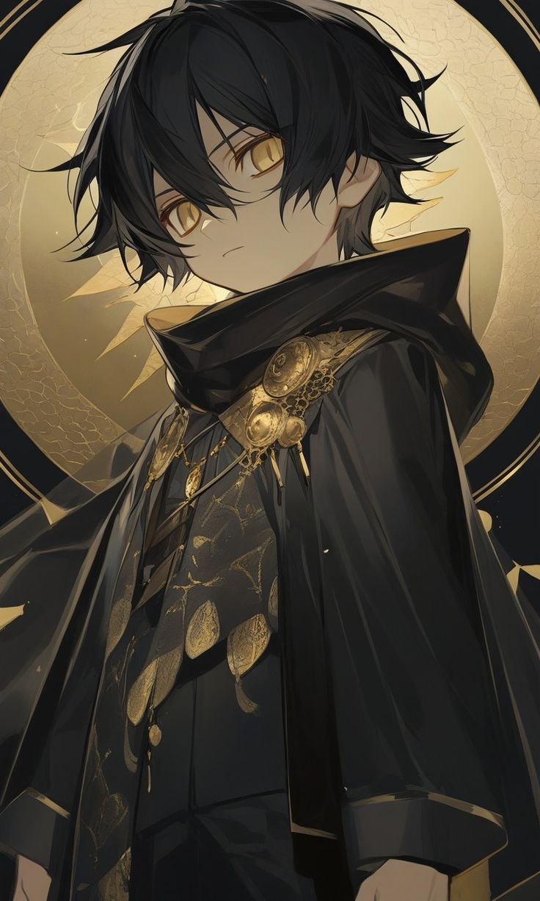 Akuma asks neon who he
is and neon doesn't knows the answer and akuma told neon about his other
self and neon explaind how he splitted himself up and akuma noticed that a
part of his soul is missing. That's the memory but the soul it self isn't
missing. Neon doesn't understands and akuma explains that a part of his
body let's say his body had a scar that's not healed yet it's missing.
Where did the scar go? Neon said that he might know and he told akuma
about a woman named ayaka and asked if she's akuma's wife and akuma gives
neon 10 points for pure guessing and neon said it wasn't that hard to
guess it. Neon told akuma about the place and akuma told neon that he's
going there to meet his wife and he told neon that he can go home and make
a list about everything he wants to improve about himself and tells neon
that he'll return home soon so he doesn't needs to worry. And before akuma
leaves he took all 3 of his soul stone with him which includs the fire
stone the black stone and the light stone that came from a far. Neon asks
if those are the stones akuma created and akuma says that the red one is
something he was choosen from and was originally belonged to the first
king.
Neon's ability to use ice came from his mother and the black soul stone
was something akum unlocked and later he unlocked the white one too. But
when he died once his soul stones scattered between places and when he
used the rebirth techinic to revibe himself he managed to get back to the
world and summoned what belonged to him. Akuma told neon never to use a
soul stone cause it'll ruin his havit. Akuma told neon that a soul stone
is not a power source. You give power the soul stone and it exicutes it
with efficiency. It's just a power holder like how you need to manually
use a padel in a cycle but you can freely use a motor cycle and neon
understood what a soul stone is and akum explaind that he's also taking
the water stone from flame and told them to get stronger without them
cause they are too easy to use and be strong. And also akuma told neon the
reason he couldn't use his black soul stone was cause it's a hollow. All
soul stones are hollow and don't have piower within them. They are just
containers to reserve power for later uses. Akuma's black stone had ran
out of energy for neon to use. And spirit stones are very different from
soul stones cause they are not hollow power holders. They are spirits that
are creatures that gather energy for you. It's borrowed power so no matter
how you use it you'll never be stronger learning to use spirit stone.
And soul cores are something only soul users can manufest. It's their
physical manufastation of the soul which will make one immortal just like
neon. Neon didn't knew that he's immortal and akuma hit neon and it passed
throw him and akuma told neon that his physical body and his spiritual
body is in a disrupt so when he uses soul magic he can't hit him. If neon
learns to use this power he'll be unstopable. But this power has a
weekness which is the soul stone. Akuma takes a small mosquito and brings
out it's soul corse and gives neon hold it and it was too fragile. The
moment it broke the mosquito dissepeared from existence. Akuma explains
that the soul core is too fragile and can break so if you manage to hide
your soul core in a safe place then you are immortal for good. Neon asks
where did akuma keep his soul core and akuma says he didn't created a soul
core cause he's already immortal. A true devil can't die unless he's
killed and the same doesn't apply's for neon cause his body is human. Neon
then asks akuma how did he loose his physical body and akuma explains that
when ayaka had neon giving birth she died and akuma placed a contract on
ayaka to makesure that if anytime she ever dies she'll reborn into a human
and akuma failed to do the same with neon cause he didn't had a physical
manufastation of a being and on top of that akuma wasn't that good with
soul magic back then and so one day akuma founded neon's energy and sealed
him in a castle type place so he doesn't get's lost.
Neon wonders if that's where that guy is and akuma says so he met his
broken memory? Akuma explained that being is no being at all. It's just
the hollow remains of neon's memories of who he was and also why did it
attack him? Usually the hollow one should priorotize the main body cause
the hollow can't die unless the main body rejects the hollow. Akuma leaves
and neon made akuma a knight card and akuma doesn't knows what kind of
card it is but thanks and thinks about leaving but neon wants to go with
akuma and he agreed so they went to neon's house to prepare for everything
and neon has his bag ready but everyone else took a few time to ready
their bag. Neon talked to akuma about a possed girl and akuma decided to
meet that girl while other's are preparing and when he saw the girl he
quickly tamed her using his charm and with a flick on the head he managed
to get the spirit outside her body then he gave the spirit form of a
turtle cause she likes turtles and told her to take care of it cause it's
like people whom she should treat nicely. If she treats it nicely then
it'll so do reflecting it's behaviour. Her parents thanked akuma for
curing their daughter and akuma told them it was nothing.
Then akuma took neon to a lake side and asked neon how he walks on water
and neon says using his ice and akuma told neon to fight him and during
that fight akuma explains to neon that his ice ability on water is too
inifficient cause no1 he's distracting himself by constantly using ice. On
a higher level it's actually mussel memory and won't bother the usuer but
neon doesn't have that level of experinece yet. No.2 he's constanly making
a path for his enemy to save energy which is not much in higher level but
during lower level of experience of neon it's definetely a bad advantage
he's throwing away to his enimy and no.3 fall damage. He'll take fall
damage. Akuma demonstrated that he can whenerver hide under wated when
he's goanna skip an impact but neon will need to wait for the ice he
create to melt for him to actually take advantage of more stabelity. He's
unstable. Everyone came and saw akuma fight with neon on the river so
kamini jumped on the battle and akuma stopped her without even looking
told that she's fast but sometimes her enimy is faster. She needs to
increase her power along with speed. She was hitting akuma with legs and
akuma told her that she's fighting with legs but why is she hitting on his
head. she should challenge the opponent by attacking their leg and when
they fail she should then strike on head. Kamini did exactly what akuma
told her and she landed a hit on akuma's head. Akuma said of course I'd
never let you do that myself but that's a good thing you should practice.
The alfa came to fight akuma with her fire power and before she could even
do anything akuma punched on her stomach and told her that she's using too
much time trying to charge her fire. Just release it already. And flame
also tried using water but akuma evaporated his flames like nothing and
told flame that they are sorrunded by so much water. Why is he not taking
advantage of that and wasting energy on creating water? Akuma used the
water around them to create a tsunami. Yota used earth shild to protect
them and then akuma broke his shield like nothing and told yota to harden
his shield. or focous his power on something else cause shield made out of
mud or even rock aren't really strong cause even a small amount of blast
can break rocks. Ela used her bow and yuki used her ice and ali used his
wind and akuma first used his wind powers to blow all of them up saying
your wind is weak ali. Then he used ice to trap yuki saying her ice is
also weak and shot ela's bow which was taped to a tree and akuma told ela
that her acuricy is bad.
Then akuma saw everyone gather their bags and everything and akuma
demanded to see their bags and saw what king of stuff they took and
declared that no one will take anything at all other than thier wallet and
watch maybe and the keys to the house cause taking too much stuff is
distracting. Neon asked how they are goanna travel and akuma said hoever
they like. As long as they reach the place by time they win and akuma
takes the bird form again and leaves and everyone realized that it's part
of their training and they try to keep up but only kamini managed to keep
up and afla decided to take the train with other girls and yuta ali
decided to get to the bus stop near and flame and neon decided to keep
presistent on foot. So there are three teams no. Akuma and kamini. The
girls team which is sucrose, yuta, alfa, ela and yuki. Then comes the team
of ali and yota and finally neon and flame. on this side someone was
worried about the dam cause water is not reaching his village and he's a
knight and he demanded for the remobaval or the dam and the govment
declined cause breaking such dam would flod everything and that person
decided to flod his village cause he'll do anything at all to break the
dam. Neon reached the place of the dam and his future sight activated. He
saw everything and decided to help those people who are being beaten by
that guy. They are govt officers who tried preventing that guy from
reaching the dam and neon along with flame saved those guys and then neon
fought that guy on water and tried winning but after so much he lost so he
used up all his power to create a mist and flee while so.
Flame asked neon if it was the right decission to leave and neon explained
that he would have died if they kept any more time there. that guy has
gone insain. He knows that his people might die out of the impact of
breaking the dam but he must to make sure some water raech there. dying
out of thirst is not better than dying with water. But they need to stop
him. Neon calls akuma using his card and told everything. Akuma was
facinated by this techonology and akuma immidiately decoded that this card
uses their aura to connect and create electric signals which they directly
recieve throw brain which is how they get the halusination of meeting
eachother even though they are not there present. Neon was facinated to
see akuma decode it even though it's his first time seeing it. Why can't
he do anything like that? Akuma told neon to go out there not give up and
fight that guy and if needed he should kill himself cause that's what it
is. Does he wants to live with the guilt of not being able to do anything
to prevent something or he wants to die peacefully with the pleasure to
know that he did everything he had to do. Akuma tells neon to go out and
give it his all and neon realizes what akuma was saying but then akuma
told neon the spoilers that he's actually stronger that guy so he shouls
have no problem fighting him and win so don't die cause his mother won't
let him stay on peace if he finds out akuma gave such suggestions and he
cut the call. Neon understood akuma's joke and on this side akuma was
flying with kamini on the ground and akuma asked her if she needs a ride
and akuma gives her a ride and kamini told akuma that he's amazing.
Keeping his energy for this amount of time is tiring and akuma said that
she had a missunderstanding. She's sprinting fast using her powers that's
why she's running out of breath.
On this side akuma is using his fire powers to give himself such agility
to fly without a problem. It's about balence and not really different from
laying on bed. Kamini says so it's about smart work rather than hard work?
Akuma says that's not entirely true. Yes if you work smart you'll be
avoide a lot of the stupid useless struggles but when you have experince
you can fall and try again and know that no matter how many times you fall
you'll learn something and not refusing to give up and learn something is
that motivates akuma and gives him the strength to something. On this side
neon founded that guy distroying the dam and when he was doing so neon
came to stop him and this time he was standing on water without using ice
and then immidiately fought that guy used his ice on various other ways
and did exactly disadvantagious what akuma told him but the things were
reflected onto his enimy insted of himself and neon knows that his fire
power may not be strong but it's enough to melt the ice. He fought that
guy solo and won and decided to do him a favour by making a small hole in
the dam creating enough space to not flod everything and also to supply
water to his village and that guy took the blame and went to jail. on this
side everyone other than neon's team arrived and akuma noticed alfa's
broken parts and decided to ask her about her hands and legs and she said
that they were gone in battle and neon decided to cut her arm off and then
cut her leg off and then holded her eyes and regenerated every part and
fixed alfa had her body fixed. She was really happy that she started
crying and akuma said that such regenerative power only have limited
animals like lizeders which can even generate bones but humen don't have
such privillage. Thankfully akuma is a devil and angel mix with immortal
body so he understands how energy flow can fix unhealable limbs.
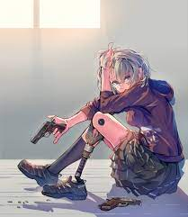 Akuma threw awaya her
parts and thought that they were useless cause they provide her
instability. The left from the place and went to find akuma's wife and on
this side neon and flame reached the place and no one was standing for
them. They saw the place where the other part of neon is and neon thought
about it. He thinks to himself and gathers the courage and wants to enter
this place already but he's called by alfa to reach the mountain side and
there when he entered he saw that everyone was standing still while akuma
was fighting some old guy. Neon thought that he feels bad for the old guy
but turns out akuma is the one struggeling. Akuma lost due to his bad way
of movement and he was laughing. He told the guy that he's been training
for years on a specifiq techniq and akuma never trained of techniks. He
only trained on strength which is good for power but now he wants to train
on technicks so he asks if any suggestions can be given and neon was
surprised to see his own master asking someone else about how to do this.
On this side ayaka came and she saw neon and she hugged him and told him
that she never thought she'll find him back and neon hugged her back and
he said that he himself never thought he'll find his mother. On this side
kamini, ali yota flame and alfa were learning some basic fighting styles
from the old master and ayaka explains to neon that he's the master of
martialarts who has over 60 years of experience and he's 70. He's also a
soul magic user and the one who helped ayaka regain her own torn self by
his help. Neon was confused and ayaka told neon that she got splitted into
two parts after all.
Neon explains that he has a smae problem and ayaka tells neon that she
once met his memory and it was good but in a bad mixture and now she is
happy that she finally managed to find her lost son. Neon thought and told
ayaka that he is himself not complete. Alaric is out there holding his
memories that he must get back. And while akuma was practecing some stuff
neon assembeld his team mates to go fight his alter ego. Ayaka was with
them too. They met shadow and started fighting and it was dominating
everyone and didn't even stopped from violating ayaka and neon begged it
to return to him and wants to know what exactly is in his memory that he
abandoned. What exactly did he wrong? Shadow didn't listened to neon and
proceded to dominate everyone but the moment it heard the foot steps of a
certain someone it bowed down in front of the gate which was for akuma. It
bowed down for akuma. Akuma asked shadow what is he after and shadow
explains that he's the remaining part of neon that he wished to die by his
hands cause of the memories it must burn and not remin cause that's the
entire purpose of his own existence. Neon abandoned his memories cause he
himself couln't live with them. This part of neon is only ment for his
evil part. He's free to do whatever he wants to do and can be pure evil
after which neon will be perfect. That's his goanl. He took a new start by
abandoning his past self but then akuma spoke. Even it it's his past self
that he regrets so much that he was wiling to kill himself then what about
the present neon? He must have a different opinion about his memory about
his own part that he neglected so much that he left out to die. He's
willing to accept what it is his and also a person must learn to let go
off the past and learn. Not hold onto it.
But how can they learn those when they are clearly holding onto thier
guilt. Akuma said that also shadow has the memoried of his son so he wants
them back. and shadow holded akuma's hands and he turned into a spiritual
energy and akuma told neon to take back his self and accept who he is
without guilt and neon accepts his memories and became complete. He
remembers that he once got possesed and killed a lot of people including
arvin and the reason for the opening of the gate was him cause he was
responcible for distraction of betrayl and everything matter of fact he
was also the reason for his son died. He feels regret and now understands
why he wanted to kill this part of himself so badly and akuma told neon
that he fees guilt for doing something in the past that's enough for him
to change. He doesn't needs to suffer cause he's a kind person right now
who only wants the benifit of others and that's great enough. Everyone
accepts neon and told him not to abandon himself again. On this side akuma
returned to that old man and asked him how he managed to combine ayaka
together again since even akuma was confused enough to do what and the old
man told akuma about the way soul should be shaped is like clay. When two
parts have taken two form making one soul one form can combine two bodies.
Akuma understood waht he said cause he's the onley one who understood
that. Then they went home and akuma saw neon's house and told him that he
got a nice house and neon was happy to for the first time have a complete
family. He asks where the kitchen is and started cooking and to their
surprise akuma is a thousand times better cook than sucrose who's littler
magic is to cook. Neon asked how akuma learned to cook and akuma explained
that he learned from internet when he was a human and neon was confused.
was?
Akuma explained that it's similer to neon's case that they originally took
over someone else's body but the soul records everything including genetic
coding. And peopl's cells change every single day by day depending on the
sutable environment giving necessery changes to body for better survibal
rate. For the same system the moment akuma was born his genetic
information took over the body of that person and gave him the sutable
body. The same reason is why if they were to do a blood test with neon
then it'd definetely say that akuma is neon's father but then again the
person who gave birth to neon wouldn't have any genetic connection to neon
at all since it's like he made the body his own. Neon now thinks and
understands the fact that this is so his own body. Akuma told neon that he
just choose a suitable host to steal the lims and took over it. If he were
to explain it simply akuma asked neon a paradox. If a ship has exactly 2
million parts and every day 1 thousand parts changes then one day the
entire ship will be changed and if the exact parts that were taken away is
used to construct a second ship then would it be the same ship? no. It
would be a different ship cause it's not about parts. If they were to
assemble a lego piece and re assemble it then it then even then it would
have been a different build followed by the same patter to create it. And
the ship is more complicated than that.
There are parts that are cut precisely needls and other that can never be
the same no matter what so akuma asks neon agian. The body he took over is
the child that died or his own and neon said his own cause his body is
long gone and neon took the body as a base to create his own genetic
codings and cells. Exactly is what akuma said. Neon asked how akuma knew
those in back in his days and akuma said he didn't knew. He learned those
info when he was in mordern age. He just had a consept of how it all
worked like how you know how to draw like a printer by copying the photo
pixel by pixel without knowing how to draw or anything and then learn that
you can do it more efficiently by using shapes and designs and more
knloedge and practical drawing capablities. Akuma in his own era was a
person who used to be serious about his environment but still liked to be
himself. The akuma of mordnern age was a free person and he knew how to
live life. He knew how to be angry. He knew lots of knoledge of what makes
a person and lot's of relation and other stuff along with how the world
works. How a little missundersting with yourself can end everything.
The fact that he was able to see his own life experience from a different
point of view made him realize his mistakes and everything. If akuma's
mordern self was born in his era then he would have definetely taken
different actions and maybe humens wouldn't even came to an age. Maybe the
fight of angels and devils would have never ended or maybe it would have
ended in a more peaceful way. It's two different lifestyle and life
experience that combined create a perfect possible life sourse. Of course
akuma isn't perfect and the more someone has experiencec he can tell what
he lacks and everything but the fact that his mental state entered such
state is something he understands. Akuma then asks them their routines and
neon tells akuma that he's the team captain and based on their missions
they go do it. They rarely do missions seperately even when they are
small. Akuma asks if he's doing this so everyone could have the same
experience and neon says yes and akuma told neon that he's wasting their
time and no matter what kind of mission small or big they might be doing
doing it in a group is always wasting time since it's not always matters
that the other person will learn from the same thing you learned from.
Some people take time and some take too short time cause of their
different based powers and different way of living life. Everyone has
different mentality and different way of seeing things so giving everyone
the same experience is like captivating them. When akuma will teach them
how to get stronger he'll not tell them how he did it. He'll teach them
their own methods to find. Their own indivutal ways and likes and plus
sides.
That's how he'll raise a worrior cause he's a teacher not a owner of a
factory which will follow a certain recipy to produce labors. In the
morning sun rising time akuma brought everyone to the field to train. He
told neon and his team that if they wish to get stronger then they must
follow akuma's guidence and everything. Otherwise he won't be able to
gurentee their growth. Akuma tells kamini first. She's fast and really her
abilities depend on power cause she's already fast but not fast enough so
for that reason she'll wear weighted cloths to slow her speed and also
increase her power cause humen don't increase their limits. They raise it.
Let's say neon has a limit to how much he can lift and that's 100 kg.
That's not the actual limit of his body cause his actual limit is way
higher like 110 or something but the reason he can lift 100 kg
comfortobaly is cause it's something his body can handle. If he decided to
add even one more kg weight his mussls start hurting and it'll get
uncomfortable for him to lift weight. It's the function of human body
which limits itself from power so it's mussels and bones don't shatter.
The same reason pain sencors are great for survibal cause they restrain
them from doing something bad for them which immidiately informs them
about their body situation. It's like you got an iron suit and the
notification bar instantly told you about the areas of pain sectors. Akuma
asked how much weight kamini can lift and she said somewhere around 20 and
akuma tried giving her a total of 20 kg weight and she was barely able to
stand properly and akuma told her to run around this entire field over
1000 times if she wants to eat her lunch or wants a break.
She can shorten her time using her all abilities or any abilities at all
and soul stones are forbidden during his lessons. Or any short of borrowd
power. Kamini started her running laps. There was a lake ner and yuta and
flame were told to walk on water without using anything other than pure
energy and then told them to use water sphers and throw at eachother.
While fighting on a place where water exists and they try to create their
own source of water is a bad idea. Use their sorroundings and manupulate
water cause creation is not always better than manupulation. The looser of
this fight will have to skip morning breakfast. or they can choose to do
the same training kamini is doing in exchange for lunch but only after
they do the laps. If even one lap is missed before lunch they won't get
breakfast and one more thing. They won't get lunch before 3 pm. Then akuma
came and told alfa to fight with yuki only using lava and yuki to fight
with alfa only using ice and the person who will loose this fight will
have to do the same thing. Akuma then selected yota and ali will try to do
their training together. Insted of fighting yota will create as much armor
or shields possible and then try to protect himself only and ali will use
his wind to break yota's shields.
The battle between if the sword is stronger or the shield. Akuma then told
ela to shoot an arrow from a yeard distance and ella was struggeling and
after the 11th try she managed to do it and then akuma told her to land an
arrow on the eact top of the arrow she already landed on and ella was
shocked and akuma told her that if she fails she knows what'll happen and
then akuma asked sucrose to use blood magic and sucrose said she doesn't
knows blood magic and akuma told her that he knows about her curse and
everything. She uses blood magic and that's the only truth about cooking
abilities. So she can release her abilities all on him. Akuma will be her
training partner. Neon was confused. He asked akuma what'll he do
meanwhile and akuma told neon that he will have to use his soul stone
which is black. Neon asks why is his training different from others and
akuma explains that neon doesn't knows how to use soul magic or black
magic properly and there is ice. The truth is that he actually isn't good
at anything other than black magic and soul magic. So he should learn
those and adapt what akuma once achieved. He's good at using ice cause of
his mother's blood but that doesn't mean it's something suits his fighting
style. Neon wants absulute authority in a battle field and can be ruthless
when he needs to be and for that reason this is pwerfect for him and also
he barely knows how to use soul magic or black magic so learning to
release those magics and pouring the power into a soul stone is his first
job.
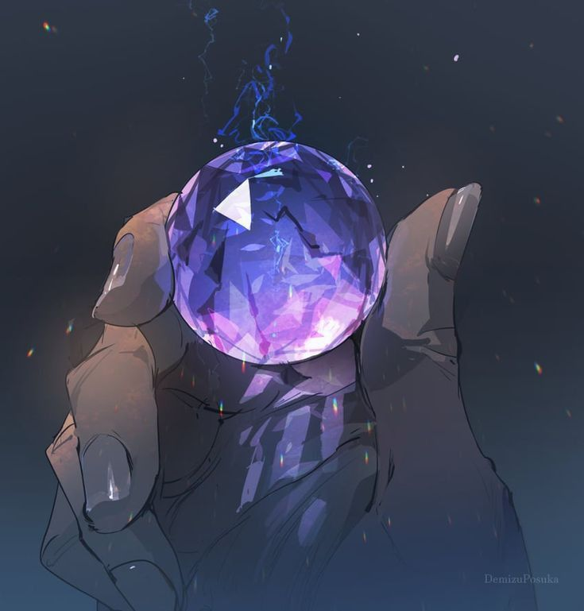
His time limit is till 12 pm to fill as much energy he can to the soul
stone. Everyone was training and akuma told sucrose to let her powers
loose and she tried but akuma flicked on her forhead and told her to
release it all. Let it dostroy everything. Let her impulsive thoughts get
over and let herself be swallowed by darkness and she couldn't do it
properly and akuma told her not to eat breakfast. Of course she can go and
disobey akuma's rules if she wants cause he won't forse them to obney
every bit of oders but he also won't gurentee their growth cause of their
disobedience and aslo when a considerate amount of time will have passed.
Akuma won't accept those who won't show any growth. weather it's cause his
own inabilty to teach them or their own fault of not trying to learn
themselves cause if someone isn't trying fully themselves then he will
never be able to teach them no matter how much he tells them how to do it
or not cause he might teach them how to write but he won't be the one
writing their exam paper. It's something they'll need to be willing to
learn themselves. After their training ended flame lost on this side so he
must do the thing kamini was doing and then fla lost so so was she doing
what must be done and yuki lost so she was doing the same thing and on
this side neon was done and akuma turned to his black form and told neon
to wear his soul stone and take the transformation and after a little
struggle he managed to get the form. Akuma explains that a transformation
is just like it seems.
It boosts your overall energy to reproduce that energy you are using to
use the transformation itself. In this case it's soul and black magic
energy. A transformation usually is used to turn off all the other
abilities off and just let some specifiq powers go on full power. That's
how neon's black form works. It turned off all his other abilities and now
he can only focous on black magic and aplyfy poerly. Akuma uses some logic
to explain it. Let's say there are ten pipes that supply to water from a
single tank and let's say all those pipes connect to a single line then
would power supply be stronger or not and neon says it'll be and akuma
says exactly that's how transformations work. It amplifys one's strengths
by covering them with energy itself to gather more energy. This case akuma
and neon sorrounded their black energy which covered their body making
their existence itself narual black magic insted of they being humen
organism using different sources of power. Now neon must last at least 5
minutes using this power. Akuma brings out his sygth and neon bring out
his sword and akuma realizes that neon likes swords more than sights.
That's not bad and neon started fighting akuma. only two blows later neon
looses. So as per deal he won't get lunch. He must run 3000 laps and neon
asks why he's the one getting 3thousand and akuma explains that they are
all bigenners who just started working out. On this side neon is already
jakked.
He definetely can do more than 2000. Akuma says that too much heavy
lifting on first day is bad for body that's why neon will be the only
person recieveing such punishment. For some reason this didn't seemd like
a punishment for neon but rather a compliment. During their breakfasts
sucrose decided not to eat since she was told not to by akuma and she
won't disobey and ali tried feeding her forcefully and akuma saw it. He
came and told ali to do 1000 squads before he eats a single grain of food
otherwiese he'll be constanly stoke by lightening and neon saw that akuma
is strict about this. On this side of the elf kingdome there seems to be a
villain that wants the head of the king and gathered an so called army for
that and they plan on betraying the king. Then on this side akuma was
going to kamini kingdome to meet the fakuma who was before so useless.
Sucrose, ali and neon is with him and on his way to that he was called by
the royal princess. On a different side some short of experiments are done
by a different source of villains and seems like he is using the poison
stone and all. On this side the princess wanted to talk to akuma for a
while and all so she told akuma that they should get married to continue
the bloodline and akuma was happy to hear that sota actually got married
and then realized that he married the queen? She was a kid. Wait.
She definetely grew up one day but that doesn't mean it won't give akuma
wierd feeling about his own brother. Akuma rejects the prince'ss offer and
showed her what her worth is. Then the princess told akuma about the elf
kingdome which is getting fights from his own knigts cause the citizens
are tired of the kings orders. But the royal army is defending the king
and killing normal citizen for that reason. She has a request for neon to
go there and investigate that factor and she has a different job for
akuma. There was a factory near some short of hill and that factory is
producing the same kind of poison from the poison stone and acording to
info few of the stones were stolen and akuma thought about it and agreed
to investigate. But before that since they already made their mind to meet
fakuma so they must meet him and akuma told neon to take ayaka with him
and he'll be surprised how strong she is and neon before parting ways with
akuma asked him how did she originally die at all if she was really strong
and akuma says that it's something have to do with that demon god or
something. To be honest akuma doesn't believes in those short of gods. He
only believes in one god and any other god is fake to him so let's call
him asshole god. On this side neon left for home and akuma left for
sucrose's father with ali and sucrose. Neon returned home and saw that
alfa and flame were fighting cause they were angry at eachother for some
reason.
On this side yota was watching magazines of shields cause akuma told him
to get inspirition from different armor types to know how to build his own
armor and yuki was training with ice with ayaka who was teaching her about
ice. And this side ela was using her bow and she finally managed to hit
two arros simultaniously and now it's about the 3rd one. On this side
kamini was trying to write an essey on a cheeta type summon. Akuma told
kamini that she has 5 minutes to write an essey about cheeta and now she
needs to write lyne by line on the exact cheeta while it's constantly
attacking her and running away. Neon assembeled his entire team and told
them about the elf kingdome situation and all and ela thought so they are
going to her home town? That's great. Neon said that her home town is in
shatters. Does she not worry about it and ela explains that they are all
tired of the king and it's army so it's better that the king fall and neon
thought that what are they even supposed to do there? They are going there
as a support to the citizen not stop the revulution or anything. They need
to makesure their safety. On this side akuma reached the kamini kingdome
and met fakuma and talked to him about sucrose and her mental state and
her curse and fakuma explained that her parents were neglective of her and
she was unaware of that as a child and used to do whatever they told her
and created a bad impact on her which evolbed her poison magic which came
from her bloodline to blood magic.
Whenever she uses her poison magic or blood magic she's swereled withing
the emotions of her past causing her to loose it all in a mental breakdown
and akuma said that he understands sucrose more than she understands
herself. He's a good father figure and fakuma smiled. Then came the
introduction of a new charecter that we can call rengoku cause he's
littlery inspired from him. Fakuma explained that he belongs from the elf
clan and akuma was confused. What is he doing in kamini kingdome and
fakuma explains that her parents came to kamini kingdome and her father
was a fire breather so her mother was disbanded from the elf kingdome
cause only grass users are allowed to get a citizen ship there. Akuma says
who's fault is it then? The general public or the king and fakuma explains
that it's the king's fault cause he's the one who doesn't allows such
exeptions and value to other people. Akuma asks if fakuma is willing to
come with him and maybe he'll learn something from seeing akuma in action
and fakuma respets akuma like a maser and this confused rengoku. He
thought that fakuma was the master and akuma was the student and akuma
told rengoku that it's actually the opposide and akuma asked rengoku his
age and he's just the same age as neon. Just a year older and he's willing
to go with akuma and akuma shows rengoku some fire magic on he house in a
small scale to make sure that he doesn't burns the house and rengoku asks
if he can burn his sword and use it and akuma explains that it's preety
useless actually cause when you use heat it takes time to spread. Akuma
shows a live example.
A bliling hot water and akuma told rengoku that he can put his hand inside
this and not get bruned. Akuma took two wooden sticks and poured one in
the boiling water and it burned and akuma then quickly put his hand inside
and out and told rengoku to touch it and it was not hot at all. Matter of
fact his hand is cold and akuma explains that when he quickly put his hand
out and in it didn't gave the heat enough time to effect his hand. Then he
did the same with the stick the stick was just fine. it was just wet and
akuma told rengoku that he can still use fire on his blade but it'll be
energy from insted of burning fire. Akuma demonstrates it by two trees. He
uses litteler ire to coat his blade and cuts one of the trees and if
rengoku sees that the same thing happend here. The tree wasn't burned. It
was cut due to akuma's pure strength. They don't want that. They want to
use fire to quickly melt and give them an advantage over this cut so akuma
insted sorrounds his fire energy not fire output to the sword and releases
the fire with a slash along with the cut and it burned the tree more
easily and cut it more easily and akuma gave his sword to rengoku and told
him that he can practice more and more and maybe one day surpass even
akuma and rengoku is motivated. on this side neon reaches the elf kingdome
and ela shows neon her family and all.
They then talk about rengoku who was neglected by this country and he's
one of the many people who were missjudgeded. They now want the king to
fall and get a new king but the army are on the side of king so they can't
do anythign. The reason the normal people are right now protesting is
cause a guy was killed off cause he said something against the king and
just cause of that the entire population is right now angry at the king
cause he's doing wahever he wants and all. Neon sees another fight happen
in front of their eyes and the soldires were killing normal citizen but
they are not willing to stop caus of some deaths and the royal guars are
getting killed and ela thought that it's good those guards are getting
killed cause that's what they deserve for supporting someone who's
betraying their own country. Every citizen is angry right now. Neon
wonders what they are supposed to do and ela thought how about they fight
along with the citizen and neon thought that means they'll be enimies of
an entire kingdome which won't be good plus neon isn't willing to take
decissions based on such small amount of info. Alfa and flame both had
different opinions and alfa talked about the people who should be
delivered justice and flame talked about the king cause he's right on his
own side and both alfa and flame got into a fight and they decided to
continue their fight elsewhere and there they noticed some wierd creatures
and decided to follow them. On this side the king is confused about
everything and he didn't killed the guy off couse he said something about
the king but rather it was the fact that guy was supplying country goods
to other people illigally and even stole the grass stone.
The king can't let the citizen control who he is and needs to stop the
disruption that's why there is the killing orders to prevent citizen from
disruption. On this side flame and alfa reach a secret meeting place about
the wierd creatures that tell about how the king killed off their fellow
team mates and they'll declare a war against the king and take his head
for the respect of their fallen comrad. Flame and alfa went near and asked
a guy about their cult type thing and that wierd creature explains that
they are a sector of the unofficial knights of the elf kingdome and their
leader talks about rising a new king and the king was sitting on his
throne and alfa was asking if she can join them and they were willing to
take her and flame decided to not be with alfa's team and came to neon to
inform him about what is happening and neon thought and said that let her
do what she wants cause it's about two opinions and neon can't figure out
a reason to support either side. Ayaka wants to take the side of the
rebels and everyone else wants to do so and neon says that he wants to
take the side of the king and what he can do fo that is to just not act
anything. Cause he doesn't wants to end up fighting his own team mates and
flame took the king's side and kamini said that even if they were in
different sides it's not like they'll be fighting anyways. Neon is their
captain afterall.
Neon told flame that they should get going since they want to stop the war
by stopping the rebels and ayaka decided to go to alfa's side to take side
with the rebels and everything. On this side akuma reaches the poisoned
forest and went near the factory there was. Fakuma rengoku sucrose and ali
was with him. sucrose's curse was taking over her body and akuma told her
to let it take over and not controll it cause the more she'll reject it's
powers the more she'll be captivating herself. on this side neon went to
talk to the king about the situation and everything and the king accepted
neon's willingness to help and neon asked the king about the situation and
neon understood and said to the king that the fact he tried to stop the
rebels was good but he did it in a wrong way cause they normal people are
missunderstaing their king to be a cruel king who's doing anything at all
in his wish. He may be doing things for the sake of his own country but
the fact people are not seeing it makes his automaticly a villain and the
king asks akuma's son what to do and neon said that he doesn't knows what
to do as akuma's son since it's been just few weeks he learned about his
own existence but he'll do his most to help the king as neon himself. On
this side the wierd creatures right now I'll call blfs.came and ayaka was
told that these are mutaint elfs that were created by some short of
scientist and one of them carried the leaf stone and ayaka asked that
person about it and that person said that he earned that stone by a fair
fight and she had nothing to say about it and the entire normal perople
were ready for war against the royal knights and even the royal knights
were ready for fight and on this side when the king heard about those
creatures and he immidiately realized that they are planning to thake the
seat of the king in order to get to the secret treasure of this kingdome
has. It's the lezendery dragon from sundial that's they are trying to
revibe.
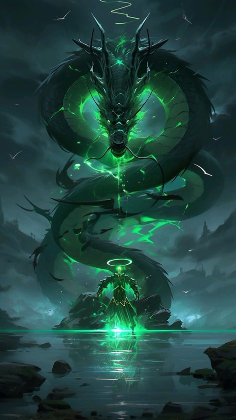
Neon doesn't understands what's the relation with the leaf stone and the
dragon from sundile would be and the king explains that every kingdome had
a dragon of different elemtn that ruled over that place during the old
times and among them were the dragon of sundile that ruled over the
dragons of light energy and the dragon of elf country was the leaf dragon
that still exists but it's still waiting for to be revibed. It has a deep
connection with the leaf stone and neon was confused. How does something
created a few years ago has connection with something a thousand years ago
and the king explains that it's just a theory but it's prophosised that
the dragon will retun and a powersurce will be responcible for this and
neon though who made that phropesy and the king said the first devil king
and neon thought him again? How many prophisies did he do? The king said
that it's a lot and it seems like he saw some short of future that he had
to secure or something he had a part in himself to fuilfill otherwise why
would he warn so much of humanity. He must have seen a dark future that
can be fixed only by his interfearence. Neon remembers that he was part of
one of the prophesies that was made and the king said surprisingly the
moment neon left that day that stone tablet glowed blue and then
dissepeared. Neon though how can something written on stone can dissepear?
It's not ink. It was a carving wasn't it? The king has the same question.
On this side people reached the royal capital and kamini asked what are
they goanna do and ayaka says they are not goanna littelery go and fight
the king or the guards. They are just goanna raise voice so they started
screaming on the protest and everything. On this side neon understood
those guy's work. On this side akuma entered the factory and saw some guy
welcome akuma and he seemed really strong. He took akuma to the main
villain and akuma went near him and told him that he stole the poison
stone and using it to poison the forest? Why? Is it some short of
experimet and akuma was excited. that guy asked akuma if he came here for
inspection insted of getting excited cause some things are going on
illigally here and akuma says that he knows but sometimes those illigal
stuff are the most genious inventions and that guy agrees with akuma and
shows akuma that they are transfring genetic coding to create the perfect
soldire to create an army and akuma was fasinated. He said that only if
cloning was legal those short of activities won't have to be done hidden.
Akuma told that guy to go to america since in some states it's legal to do
cloning and that guy laughed and said that akuma must be the first guy who
gave him suggestion to do something so in humain and akuma said what's
wrong with developping science?
I guess there are times when you make mistake and create a virus like
covid 19 that creates world wide lockdown but those inventions are the
steps that lead humens to learn and also there is humanity in in humanity
and inhumanity in humanity. Of course they can't stop reacherce just cause
they are afraid cause there are times when it's too dangerious to
construct a mission but they have to. that's how humen evlobe. That's how
the first roket was made and sent to moon. That's how neucliar messile was
made. Then that guy showed a chamber where people are examined and they
have tried to use the clones to make sure no real person dies and tried
replasing their heads and they were successful. Now a dying person can get
a new body or a person who lost an eye or an arm or a body part can get
that part thanks to his research and everything. Sucrose asked how many
people died and that guy said over a thousand and akuma thought how does
he sleep knowing he slaughtered a thousand people and that guy said he
uses sleeping pills. Akuma said unauthorized sleeping pills are illigal
cause they can kill people if used too much basis or other basis like
glukos level etc. Akuma asked when is he goanna sell his reacherch to
market or release it. He's goanna be hellot rich and that guy was
confused.
He said he doesn't knows. He didn't thought about it and akuma told that
guy to leave this country and go to a different country where people will
value his project cause there are times when you need to go throw the
blood of a thousand to benifit a billion. Of course there are people who
may have different opinion on how he achieved his reacherch but just cause
that he can't stop his reacherce. That guy thanked akuma cause he's the
first person ever to tell him such words. And akuma told that guy that
he's goanna cure the forest situation so meanwhile he can start up a
buisness or other stuff and move from this place cause those things are
not leagal here and that guy says sorry akuma and akuma thought not again.
Don't tell me you are killing people or some short of villain master mind.
That that guy with a sad face says exactly and presses a button and
captured akuma and this made everyone out ther shocked they tried freeing
akuma but he was trapped in water and that guy said he's not goanna be
able to escape and die sufocating and they tried freeing akuma but got
captured insted failing to do anything. On this side neon told his team
mates about the situation and that they are being manupulated for that
reason and flame asked neon if he's sure and he said he's not but at least
he can stop this disruption by so and the blf leader was not satisfied
with neon's reasoning and told neon that they'll take the king's head
today no matter what and neon started fighting that leader type guy and he
was loosing badly so neon's entire team along with ayaka came to aid him
and they all lost cause that guy is so strong and ela wanted to learn his
similer way of using bow and arrow and sometimes use the arrow itself or
it's pin power and she learned it and decided to copy that but she's not
as strong.
If she was a little stronger she would have won due to her acuricy but
she's not. they all lost just to the leader. It's fact that blf king is
the strongest among blfs. On this side then sucrose woke up and ali was
able to escape and contacted sucrose behind the bars and she told ali to
go get neon and everyone cause it'll be world ending if akuma dies and how
did they even managed to capture him? He's been inside that water for 4
hours now and what should they do? If he's already dead. That machine is
too powerful for even akuma to escape. Ali accepts to go get neon and
while his way he was detected by the guard. that was one singuler guard
but the fact ali's agility is the greates he managed to get away even
though he clearly lacks power level. On this side of the elfs the blfs
managed to kill the king and then use his crown which will only activate
during some short of ritual and the blf's leader decided to take on the
crown to be the king and on this side neon was lost. He was recovering
from the battle and then the ritual ends and the blf king takes the crown
and decided to go to the place of the dragon to revibe it and neon thought
that he wished akuma was here and ali managed to come here and told
everyone that akuma is captured.
So neon's team decided to go rescue akuma. Ali stayed at the elf kingdome
due to his injuries and everyone else decided to go save akuma and they
located the factory and there alfa flame and kamini were detected by the
guards to they were escaping. On this side yuta and yota along with ela
sneaked throw the factory and located sucrose but not akuma. On this side
neon was with yuki and while locating ayaka suddenly went somewhere and on
this side ayaka can feel akuma's presence. She looks at the ring akuma
gave her that is making a connectiong between them and ayaka just hopes
that he's alright and on this side alfa flame and kamini managed to get
sneaked into the factory and when tehy stepped into the wires they entered
akuma's memories. Everyone did. Everyone could saw what he was thinking
and how he was crying when ayaka died and when he had to fight his own
brother and the father who gave him birth or see the mother who died just
to tell her son that she loves her and everything and they all instantly
knew where akuma was and ayaka reached there first but the robot kind of
guy who was gurding akuma and the strongest out there stopps ayaka from
touching akuma and they all gather into one single place and decided to
fight akuma and on this side sucrose and the other's that were captured
were transported to the akuma's room and even though they all leveled up a
lot and it can be seen throw their progress they still fail to get akuma
and they were all locked up and chained to the jail. The villain comes and
explains that all of their bodies are now goanna be part of his collection
cause that guy has a wierd ability to copy someone else's body and forse
someone else to be with that body forever as long as he's more poerful in
soul magic than him.
It's a soul magic varient he created since he is really old. More than 900
years old and always changed bodies and this body in fact doesn't even
belongs to him and he's tired of everything and now wants to create an
greatest army to take over the world and akuma's body is the perfect one
for him due to it being so strong. That guy explains that he created this
factory to steal the bodies of strong knights to make sure that his
collection stays strong and he even has the body of gold. One of the
strongest guys in kagami kingdome and he felt like hitting a jackpot when
he found out akuma came to be in his perfect trapping chamber. This
factory doens't produces anything but rather it's manufatred sole purpose
is to capture a person no matter how strong he is due to it's
constraptions. After all soul magic is the strongest. But when he heard
akuma talling him how his thoughs are genious he decided to question
himself if he's even doing this right. Akuma was the first person how said
those kind words to him yet he's doing such things to him. Now nothing can
be done and he really wished that akuma was his friend but after he copies
his body and get's it for himself he'll leave his wife and son maybe as a
favour along with the his weak soul trapped in someone weak body. He's
doing a favour to him and also he wanted to swap his body to himself but
unfortunately he's afraid that he'll distroy his perfectly fine body so
he's goanna bring his own fake version so he won't be able to harm the
body during the swapping position. The moment fake akuma heard this he
decided to stab himself and kill himself cause he doesn't wants akuma to
loose his body or something like that happend. He wanted to be a hero. Not
someone who'll create such a aunerabilty to someone. But the villain
doesn't let's him kill himself and locks him and then decided to implant a
fake memory in akuma's mind that will traumatize him. So he first
implanted a memory that he killed his own family in persuet to power.
that's why he's so powerful and also his family doesn't love him anymore
along with his students or aquentaints.
This deeply was truamatizing akuma and this made everyone sad but suddenly
akuma grabbed ayaka's head in that dream and killed her along with
distroying the dream itself and managing to get out of the contraption.
Akuma knew that it was a dream the moment he saw ayaka tell akuma that she
hates him. The villain was scared for this exact thing so he started the
swapping thing with ayaka and succeded and told his strongest guard to
kill ayaka's body but akuma in ayaka's body uses her full power in such a
way that the guard was getting distryed and akuma in her body says that
her body is different from akuma but she has so much spare evergy that
it's a shame that she doesn't uses her energy the efficient way. Then the
villain was scared again and so he swapps akuma's body with kamini's body
and then akuma took the perfect lightening form in kamini's body and
kamini was facinated. She didn't knew that she was capable of something
like that and akuma took that form and instantly broke every thing and
almost killed the soldire so the villain got worried again so he decided
to change his body again. This time this was yuta and akuma used a
littleral water whale to crush that guy and this time akuma used flame's
body to create perfect formless body and was about to finish the fight but
that guy swapped akuma again. Flame thought that he had this much
potential in himself that he can unlock right now yet he doesn't knows
how. Akuma is really unstopable no matter who's body he's in cause he
knows how a basic knoledge of power can change someone's powerlevel
entirely. Then that guy changed akuma to alfa's body and akuma used the
fire power to create certain burning body to make that guy melt on touch.
He was still too overpowered.
That guy then tried giving akuma yota's body and akuma created strong
earth shield and armor out of it and then created strong dust particls
that worked as bullets and in a sweep air turned into machine gun. Then he
tried changing rengoku's body and then akuma used his strong fire body and
everything to fight and that guy then changed akuma's body to sucrose's
body and sucrose thought that this will be bad for akuma cause her curse
doesn't lets her use or think properly but she sure wants to see what
akuma does about it and akuma created a transformation on the curse and
insted of rejecting the curse he accepted it's poweres and freely letting
it manupulate his body causing his overall power along with magic to
amplyfy and this seemed like the strongest transformation so that guy
changed it again. This time it was to ela's body and akuma created
thousand arrows and created a grass type transformation to bind everything
together and then akuma used poison and everything in his disposable and
he didn't hasitated a bit when he cut both arms of that creature and then
both legs. That pet of the villain was regenerating and then that guy
decided to swap neon's body and akuma took a shadow transformation and
akuma was completely invincible and neon thought that he understands now.
It's magical that's why he canlls it magic. It's about using their
inspiritions and thoughts into real power cause their imagination is a
great force that can be used to flame their goals.
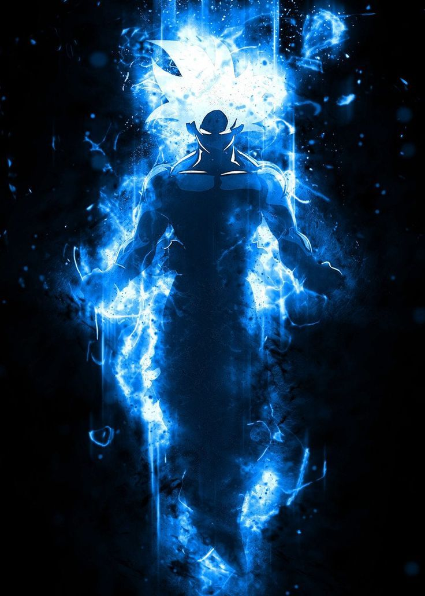
The reason akuma is so better at using their bodies beetter than
themselves is cause they got the tools to be strong yet they are unable to
see the clear way out to reach or do something. They need to let
themselves go beserk. Not restrain themselves and always try to be
invincible insted of just trying to do something out of sheer force or
will power cause it's impractical to achieve someting out of just power.
They need to source the right power to the right path. They can't get
water from electric wire ling after all. then that guy thought now or
never and decided to exchange akuma's body for his own and he was glad to
have akuma's body and he knew how weak he is in his real body and threw
akuma out of the place and during this time akuma managed to unlock all
the locks before that guy chould kill him. Everyone knew what to do and
they tried their best to fight like akuma. Confident about something.
Don't hasitate and see their clear goals of what to do. Don't bother about
falure and learn and improve. And they all were fighting against akuma's
body yet they were not loosing and even the villain was consern but then
something strange happend. Akuma in the villain's body came and put his
hand throw his heart and broke his soul stone and told him too bad for
you. My body isn't powerful.
It's me who utilizeses it to power. So it doesn't matter if some weakling
takes over his body job or wife or children or life cause they can never
be him. Specially not someone who abandoned his own body cause he was too
afraid to change himself. That guy turned to ashes and akuma told neon
that they don't need to worry about him cause his body will soon retun to
it's original shape. And the second his genetic codes were replaced and
akuma regained his original body but during that time he can't fight that
giant monster that guy unleashed before dying and neon told his father
that he dosen't needs to worry cause they'll take care of it and they all
fought that giant monster and in the end sucrose decided to let her curse
take over her and she success fuly used it and got the exact form akuma
took. Akuma was happy seeing this and then soon after he said that no
matter what kind of body he may be in his soul will always remain the same
and he changed into himself again. Meanwhile they defeated the monster and
a huge black goo type thing was splashed on top of everyone due to the
blast and akuma told neon that he actually could immidiately distory a
body and return to it's original shape and seems like he played them well.
Neon calls out akuma to be perfect and akuma says not perfect since he
makes mistakes too. They then returned to the elf kingdome and akuma told
neon that he is feeling lazy cause his techniq to revert his own body to
heal any shot of injury at all costs a lot of energy and when neon asks
him how much akuma says that 98million neons and everyone was shocked and
akuma said that replacing every single cell in your body isn't an easy
task and neon asks how much energy does he have and akuma says that it's
around 99 or something.
He doesn't knows since he can always increase his energy storage by a
month training or so and neon asks how he does that and akuma says that he
tries gathering more and more energy even when he's full. It acts like a
ballon increasing his stoarage but he can only increase a million by
taking an entire month cause he's already at the max amount of what he can
do at 98 million or so. If he increases it to like a billion or so he can
but every time he'll even take a step then his entire body will explode or
something so he is trying to find a better way to increase energy storage.
Akuma takes rest while ayaka is by his side and neon's team decided to go
defeat the blfs and they see the dragon grass is already resurected and
all and that dragon has a massive weakness against fire and alfa and
kengoku is their only option to assist and neon decided to go to his
shadow state and fights the dragon along with the elf boss and they all
fight and at the end rengoku delevered the finishing blow to end the
dragon's life and then the blf king came who almost killed everyone and
rengoku decided to sacrifise himself for the elfs. When asked why. Why is
he doing so much just for the elfs that rejected his existence and rengoku
said it's cause mom said so and turns out his mother always taught him to
love others and cherish others cause there are bad people out in the world
but that doen't mean he should reject the good one's just cause of that.
Seeing this neon went in forward and thought how did akuma managed to
perfect neon's shadow technick and he thought that he had a soul stone
sticing out so did he use the soul core tehcnic to make sure..
no The soul core doesn't makes attacks go throw body and neon understood
that his soul ability works by replacing his body with soul and usually
only a soul attack can hit him then not any physical attack but when he
makes a soul core that's soul in physical manufastation and he then
apply's his ability on the soul core he's immortal. He perfected his
shadow ability and neon was invincible and fought the blf leader alone and
when he ran out of energy he realized the massive down side to his
ability. The moment he runs out of energy he needs to quickly switch his
soul core to back to normal and switch it back to soul stone cause even in
that split second someone grabs his soul stone and breaks it he'll die
immidiately and when a soul dies there's no after life. On top of
everything he doesn't have infinite energy and neon remembered what akuma
said one. Create a broken ability and then create a loop hole in that
ability like an abiltiy that gives you super power in exchange of energy
but then create an infinite energy ability and create a loop hole to
perfect your abilities. That's how you create broken abilities. Neon
thought but meanwhile renkou striked forward to save neon again returning
the favour and then he fought like a hero and gave it his all ending the
elf boss's life and neon told rengoku good job but it wasn't over cause
the elf leader caused a contract with the dragon and his strongest leader
and then he combined with all two of them and rengoku didn't fazed cause
he's prepared to die for a better cause and then the entire elf kingdome
stood forward to fight and neon though he ran out of energy but he'll
still fight untill there's life in this soul and akuma instantly came and
knocked that guy out in a finger flick and told that guy that he's an
idiot for copying akuma's abilty cause this is now making him unstable
mentally both physically.
Three souls can never be together and only break when thery are forsed to
be together so the only thing he needs to do right now is spend just 1
neon of energy to to combine their souls and even neon can do it and he
killed them. Neon thought that that didn't came to his mind. The more he
stays with akuma the more he realizes that. He was about to give it his
all again with brute strength forgetting that a battle is fought with mind
not with force. Akuma came back and neon told akuma that he's showing his
genious mind again and akuma told neon that he always says a dilouge. But
he doesn't knows when the last time he said it. Everyone has two arms two
legs and one brain. Yet what's the difference between people? There are
clearly strong and weak people. Rich and poor. It's all how organize
things cause the same person who's begging in the streets can use his
voice as a weapon to be the president and dominate the world and yet the
same time a king can fall on the ground for his wrong decissions. It's all
about how you think throw and see the future and predict the next
continuety and neon asked continuety? Akuma said that let's say a ball was
dropped from a hill. What'll happend next? It'll fall. That's continuetiy.
If the ball goes up insted of going down that's breaking the continuety.
Akuma is currently on a project to figure out how to mess with time using
this thought and he even wrote a book and shows neon. Neon just laughed.
Akuma too. Then that day sucrose and neon managed to get too strong.
After a few days passed everyone was training and turns out kamini went
too fast that she's doing everything fast on havit and she managed to
write three entire paragraphs on akuma's pet dog. Now akuma changed her
training to power efficient to body building. Basically to earn more
efficiency on lifting weight and mussle streching. Since what's the point
of being fast when you lack the power to do a dent. Then neon went to
upstairs where his parents were at and he entered the room cause in the
morning food was not ready and akuma was sleeping with ayaka naked. Neon
thought it was wierd but went to wake akuma up but he refused to wake up.
He's tired and ayaka told neon to come sleep next to him and started
patting him while hugging him and neon had a tear drop and he told his
mother that he wished that she was here to love him when he was young and
when he was born and she says that she wished the same but what can they
do? On this side akuma told neon to not touch his wife since he's another
man right now and ayaka says otherwise. She doesn't cares. Neon is her son
and he'll be a kid to her and akuma asked how old is neon and he said just
15 and akuma thought that's too young. How did he even managed to get a
girlfriend at this age and neon was confused. Then he remembered about
alfa and akuma told neon to marry her already and neon thought akuma was
confusing since he says once he's too young and then he says marry her
like what?
Then on this side gold was freed from the labrotory of that villain from
previous arc and he looked back at his own body. It was a fake gold that
the villain created. Gold knew that this was fake and decided to end his
own fake version and failed cause it was too strong. Insted he barely
managed to run away while he saw a massive army of the fake gold. Then on
this side the guy whom I'll call light for now the person who holded the
light stone previously now is in charge of the light dragon and he's in
charge of protecting the king too who is just a kid. The kid explains that
100 years ago when akuma was sealed in hell the 3rd world war was fought
over the 9 dragons that were discovered and in the end when people were
davistated the 7 continents took a 9 part divition when arvin the friend
of akuma created 9 different spirit stones along with the 3 soul stones
akuma left behind. That 9 soul stones were later devided into 9 kingdoms
which weilded a part of the fragment of the dragons and the dragons remain
itself. Currently the poison stone along with the leaf stone was distoryed
along with the existence of the leaf dragon. Right now all that remains is
the water fire air ground lightening stone and the shadow stone along with
their representing dragons. Even the light stone remains and it's
representing dragon but the person who weilds the light stone is akuma who
originally created the soul stone himself. No one in the world knows what
kind of powers he holded. Anyone who can use the light stone at all can
only use a mere immitation of what the original user could. Light was
taken to the remains of the shadow dragon and it's just a stone. Light
stone and the king explains that it's how they founded the light dragon.
Trapped inside a giant stone and light wonderes how much power it would
have when it's awake and the king explains that the shadow dragon was said
to be the most powerful yet the fight between the light dragon and all
eight other dragon caused in their extintion. Light said that the dragons
must be dum and the king said that they might now posses the capebilities
of thinking like a normal human but their strength covers up for that.
Light thinks about it and says that so this is what they get when they
become a king and the king explains that the royal bloodline of the kings
holds a contract with these dragon remains to hold onto their authority
and make sure a way to revibe them but for some reason no king decided to
revibe the dragons. Maybe it's cause if one dragon is revibed then an
entire war would start or something and specially the dragon needs to obey
the king who needs to be stronger than the dragon itself to make it obey
him. On top of everyone no one knows how strong the light dragon is. Light
says that it's better to wait and see if someone beyound strong comes to
their bloodline and the king says due to this exact mindset people were
unable to do anything so what if they do it now? The devil lord akuma
himself exists so what if they bring back the dragon and see if anything
happens then he can take care and light deeply disagrees and says that he
might not do anythign like that and the king asks light to go to him and
ask him about this. On this side ali reads some short of book about a grim
wore and decided to buy one and to make it obey him since there is a
spirit inside this book and neon rost him saying he's a fake who doesn't
reads a word after staring at a book for hours. How can he unlock a
grimwore and make it obey him?
It's practically immossible and akuma hears that and tells neon that what
does reading book have to do with anything like making a spirit obey you?
Akuma made his soul stone react when he was just a newborn child. Did he
read any grams of book back then? Nop. Akuma was lazing up and kamini told
akuma that she perfected her speed and thinks that now she's ready to give
it a test and she fights akuma but he's still stronger and it seems like
he has gone a little faster but akuma is still slightly faster and seems
like akuma took a hit and neon understood that kamini's fast speed is
confusing even akuma. He's hasitating to hit sometimes due to that speed
and akuma tells kamini that she's really done it and they fight and turns
out kamini still has a lot to do but she improved a lot due to all of
akuma's advice and everything. She's trying to unlock her highest point of
power just like akuma showed but she's having some truble perfecting her
techniq and she showed her mod to akuma and while showing it to him she
realized that she accidently perfected her thechniq. She had a bit of
problem using this techniq but seems like after this fight her body
automatcikly noticed her problems and fixed itself and akuma explains that
a battle is the best place to level up since you can see your power in
immidiate action insted of just theory. That's how she is doing it and she
wanted to fight akuma again but neon came and wished to fight akuma and
akuma told neon to fight everyone of his team mates at once and then fight
akuma and neon was surpised. He doesn't knows if he can do that or not and
ayaka remembered that akuma fought ayaka when they first met and akuma
fought her entire friend group and lost yet he was doing so good. Akuma
explains that he likes to take things extream since childhood.
Neon decided to do so. On a different side gold came to the royal kingdome
and freed a lot of criminals and turns out he was fake gold and when the
real gold came it was already too late. The entire royal kingdome is in
parts. Who knows how'll it be fixed again. On this side neon was
dominating his all of team mates. Sucrose and kamini had their full power
and they were the only people who were even close to neon's powerbut he
was still stronger specially since he knew how to hide his body at the
perfect moment. Akuma calls out neon that he's not using his soul core
cause he's insecure about it. That's no bad matter of fact akuma recomends
neon to not use his soul core since if by any chance he's fighting an
enimy that is too stronger than him then even a split second can kill him
when he turns his soul core into soul stone and neon explains that he has
a different method that is when his soul core is in transparent state
he'll change it and then change his body and akuma asks if he'll be even
manage to do that during intence fights? during this fight akuma decided
to take the inniciative and fight everyone of them at once and only neon
was the one who was capable to take on akuma head to head and when akuma
tried hitting neon he noticed that he can't and neon knows that during his
shadow state only soul magic can affect him but what if his soul is in his
soul core that he used his soul magic to make transparent? A physical
thing into not physical which wasn't even physical? He can't break that
physical thing now and neon won't get a single damage. And akuma says
that's a bit bad for akuma and then they fight again.
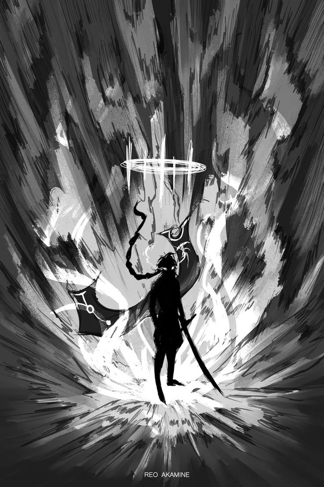During this time flame
unlocked his crystal magic to use against akuma and he was getting
stronger and stronger and stronger along with alfa who used magma magic
which was an ubgraded version of her inferno and lava magic. Both of them
combo on akuma and akuma decided to turn himself into a dragon shorts and
they all fought akuma and this fight ended with neon running out of energy
so akuma esaily folded him. Ela also increased her acuricy for akuma to
dogh. He didn't managed to dogh causing his brian to be shot but neon was
already out so akuma decided to take out kamini who was too strong and
then flame and alfa and then ela and everyone like that. Everyone thought
that akuma lost but turns out he fell and thought that everyone got
stronger and he told everyone that to use their powers like that and maybe
who knows. In a year or so they'll surpass even akuma and this made
everyone happy. Everyone hugged akuma. On this side silver and gold
entered the kingdome and fought the fake gold but they were outnumbered
and the curretn king who was the middle son of the king was killed by fake
gold and he aquired the shadow dragon and wished to revibe all the dragons
and build the ultimate army of dragons. On this side the prince of kagami
neon's fake father came who met akuma how he had a happy family and akuma
was talking about their growth and thanked him for taking care of neon
till he grew up and the prince said that it wasn't a problem and asked
akuma if he can get stronger too and akuma told him to go to a certain
place there he'll meet an old man who also knows soul magic who can teach
him drak magic cause he knows it too. And who knows if he manages to get
soul magic for himself and the prince says he isn't that talented and
akuma says that every soul magic holder in the past managed to learn dark
magic.
The purest form of black magic. Then why can't it be the otherway? The
prince asked what exactly is the relation with black magic and soul magic
and akuma smiles saying who knows but they do have a relation that they
come in pair usually. It was akuma who knew soul magic that ignited the
purest form of black magic in his soul. And even the prince knows dark
magic then would it mean that he also knows soul magic? Cause dark magic
is usually triggered when you have aqured soul magic. The prince says that
he doesn't knows but he'll try taking akuma's advice. Then on this side
after he left akuma went inside his house and saw everyone hanging out and
akuma thought what kind of training should they do today and akuma saw a
pair of cards that he remembers once learning some card tricks to be party
pooper. He almost slipped but he didn't fell. He thought that as he
remembers that he almost never fell on the ground. He's not clumsy
sometimes and knew what to do. He brought everyone to balence out in a
balmboo and kamini and ali were really good at it and neon tried saying
that agility is a telent that comes in blood and akuma says that he has
super agility. Why doesn't neon has it then? It's cause some talents are
turned off when you don't use them or know how to use them. And if someone
didn't got blood line privillage then he must learn it.
that's the way of it. While their training yuta got a messege from the
king of aquamarin who asked akuma flame and alfa to come to their kingdome
and neon was really pissed but he said nothing and akuma heard that alfa
has a bad relation with her father. He says let's go anyways since it's
better not to have any bad relations and even though neon was extreamly
against it he let them go and akuma told neon to focous on their training
and neon wanted to go and akuma said no and neon didn't said anything back
and yota was begging to go but akuma told him not to worry. Akuma left.
Then on this side silver and gold came to ask for akuma's help and he was
missing so he asked neon's team to help and they went back to the royal
capital while on this side the prince met the old man akuma was talking
about and that guy is more than happy to teach him about soul and dark
magic and the prince says that he wants to learn soul magic not dark magic
cause it seems sometimes that he'll be overtaken by darkness and the old
man tells prince not to worry and the prince recieved a letter and it was
from silver. He thought about what to do but he didn't knew if he can even
change anything at all and he explained what was going on in the kingdome
and the old man told prince that he'll help him and goes there with his
decifels. Neon's team reached the royal capital and decided to head for
the royal capital and there they started fighting the clones after clones
and they were the clones of the previous villain and the reason neon
leveled up so much he managed to end them without much effort and they
were speedrunning throw them.
it shows their growth. Everyone was fighting and then they reached the
royal place and saw the fake gold and decided to fight it but it was
sorrounded by army and neon managed to take them all on and silver
realized that neon alone has already surpassed silver and gold. His team
right now must be then the strongest team in the entire country then. But
silver and gold also brought their teams and it was like a mini war but
turns out silver wanted neon's soul stone that he failed to get and neon
didn't noticed it. On this side then akuma reached the aquamarin kingdome
and there the king gave alfa a choise to return. She'll be held as the
qeen since the king is aging up and he doesn't knows how long he's goanna
live. His life is getting near it's end and he's ashamed for everything he
did and alfa was strong so she decided to reject such offer. Then on this
side that guy managed to steal neon's soul stone after a long sequence of
battle and everything and even the old man with prince reacherd the battle
ground and the old man has his own men who is fighting for him. That guy
then sent the litteler criminals who were fighting for him and even ramstc
made a return who was now wearing a thousand spirit stone and none of them
were able to fight him off due to how strong he was. Then the fake gold
made his way to the shadow dragon who weilded the ultimate black magic of
all time. The first summon of the first devil on earth.
The shadow dragon awakend and it decided to obey fake gold cause of their
similer aura. They both have darkness in their minds and now the fake gold
is unstoppable. On this side light heard the roar of the dragon and the
king of light kingdome decided to place a seal on the light dragon remains
and told light to take it to akuma. The autority of the light dragon that
has been passed down for generations. Then on this side the shadow dragon
went to kamini kingdome for the lightening dragon and on this side of the
aquamarin kingdome akuma was taken to a secret place and the king showed
akuma the water dragon which originally was a whale and the king explained
that original devils were 5 in numbers but acording to history the lord of
devil discovered that there was original 6 angels in the pair as well when
world was first created but what if i tell you that there was no 6th angel
out there. There was just 5 angels and 5 devils that remained on earth
back then but suddenly a 6th one apperaed. This was conferemd by an
ancient textual that they have founded around right after the 3rd war
during the time they discovered the remains of the dragons.
All 9 dragons. Turns out that all 9 dragons had their remains in one
singuler place for some reason and it's said that the first king is
responcible for it. And turns out the first king wasn't among the original
11 devils and angels yet there are still 2 people that refused to create a
dragon during that time. An angle and an devil. Where did that sole angel
came from and everything. If that one angle did not existed then there
might not have been any devil and angle history in the first plcae. Akuma
thought about it and said that the 4 angels and 4 devils were supposed to
be a pair while the remaining one pair must create humens together. The
king said that the history was supposed to be more compex than that but
ya. That was the general idea but something disrupted that sequence. It
was the existence of that sole angel. Who was she and where did she came
from? And where did she go with the 5th devil cause it's clrealy mentioned
that she's responcible for the missing 5th devil that did not participate
in the rituatal to create a summon as a symbol for their autority over
that power. The aquamarin king gave the autority of hydro to flame and
told him to reawake it since he got the water stone and flame thought
about it and aquamarin king said that there seems to be a disruption after
the leaf dragon that was a slime died. Now they need aditional power on
their hands in order to prepare for what will happen caus ether surely is
to be an outcome that they might not comprihend.
And akuma told flame to do it cause he'll need it. And flame gathered the
courage to do it and managed to do it but the whale started rampaging and
flame could not controll the whale but akuma came near the whale and read
anciant language and told the whale to not worry since they just wants to
use it's power for the benifit of the world. THey are not goanna hurt him
or missuse his power for which it can check the purity present in their
hearts and the whale calmed. it also read anciant language. Seems like
they got a new member in the team and it accepts flame as it's holder
cause i guess plot. Neon is having trouble fighting without his soul stone
and thought that he can still use his shadow mode without his soul stone
but without turning his soul into a physical manufastation it's preety
useless to fight against someone who knows soul magic cause that person
can target their soul. Neon decided to fight without his soul stone with
ramstic and he was a lot powerful and seemed like they were at the same
level. Neon can use his powers cause right now. On this side the shadow
dragon was being akwaned by fake gold and on this side neon almost lost to
ram stick and everything seemed hopeless against those army of people and
biological creations that's when akuma arrived and saved everyone.
He saved neon like a true father and then fought ram stick. And a matter
to be noted that he calls ram stick ram stick cause his function works
like a ram. He says what's the point of having 1 terabyte ram when your
storage is 2kb? Akuma shows their power different. Just cause he doesnn't
runs out of energy while fighting doesn't means it increases his power in
anyway. He told ramstick that just if neon was a bit stronger he would
have easily defeated him cause side tracks like them don't belong in this
world and akuma distroyed his head crushing his jaw but the outcome
altered somehow. It was the magic of a guy who claims to have time magic.
It's a criminal and akuma decided to break his soul stones and realizes
that it's reality altaration insted of being time alteration cause it
doesn't makes any difference with the continuety but it definetely changes
the outcome and it definetely takes a considerretable amount of energy and
he could use his future vision and akuma thought he doesn't remembers when
was the last time he used this ability. His eyes started glowing and akuma
saw that guy doesn't have enough energy to make a second alteration and
akuma decided to use this oppurchunity to break his jaw again but neon
stopped him. He told akuma that they don't need to kill do they? I mean
wouldn't it be better to let them go cause if they killed their enimies
then wouldn't that make them unable to escape from the guilt. Akuma
thought about it and said that he usually doesn't let's an enimy escape or
live cause they backstab you usually but akuma will let this go and
decided to let ramstic go. But he broke everysingle of his soul stone and
made his spirits his own. Then came the shadow dragon that akuma was
excited over and flame was ready to fight the shadow dragon cause he just
recieved his power up to use crystal magic along with everything cause
he's exicited.
When fake silver comes only akuma and flame are there to fight and neon
asks akuma where is alfa and akuma said that neon's wife? she went to do
some daddy talk with her father and neon was raged. Akuma asks if he wants
to go there and neon says if akuma left her there he trusts his intuation
and akuma is glad to earn such trust. Then fake gold came with his army
declaring that he'll collect every single soul stone and will revibe every
single dragons and gain authority over the world. Akuma hears that and he
thinks it must be fun and asked for a colabration to fight the dragons
together since akuma himself have the light stone. Fake gold was facinated
by this deal and akuma says that they'll defeat the dragon with light
element toghter and then akuma doesn't minds letting fake gold have the
authority and the real gold tried objecting it but silver said it's a good
idea. The fake gold tried denying the idea and fought akuma but akuma
brought out his own cards that he fought with. He uses magic magic after
all. Akuma showed his massive ability to copy cause he loves to learn new
things. The only thing that limits his magic is his imagicnation itself.
fake gold knew he couldn't win so he decided to agree on the terms. And
akuma managed a meeting between the 9 kingdomes and they all wanted to
refuse it since akuma is allowing the very person who is trying to kill
the kings and streap off their authorities over the dragons.
Akuma introduces everyone off the new aquamarin king who is flame and neon
explains what happend and flame's father says theoritically then alfa
should be the one being the king since she bears the authority of fire
with her fire stone. Akuma says that originally it's akuma's soul stone
and he isn't giving it to alfa untill she is powerful enough to show her
worth to use it. This saddened alfa who was standing in this room. The
light kingdome king told akuma that their own king was slaughtered by this
guy and akuma said that his son said to him to forgive his enimies and
make friends. He has perfectly fine reason to allow fake gold to have a
second chance. This guy just wants to fight a dragon afterall. Silver and
gold were there too. Akuma requests a alternative where every king hold
their autority and they'll revibe the dragons one by one and then fight
the light dragon in the end. It's goanna be preety awsome cause they have
been living under the fear that someone like a villain would come and take
over the light dragon or something. Why wait that long. Can't we tame the
light dragon already? Fake gold wanted the shadow dragon for himself and
akuma told gold that he lost his fight so he can shut up. Others were
talking about this and the king of light agrees with the plan as long as
akuma is in it and also his supporter light used to hold the light key
within himself so he will also acompany them and akuma gave him the light
stone since he must know how to use it by now. This surprised everyone
since someone got something so massive just as a gift? You have to say
that akuma is something else. Flame's father asks if there is any rule
that the person inhereting the dragon must get the seat of the king and
akuma says nop.
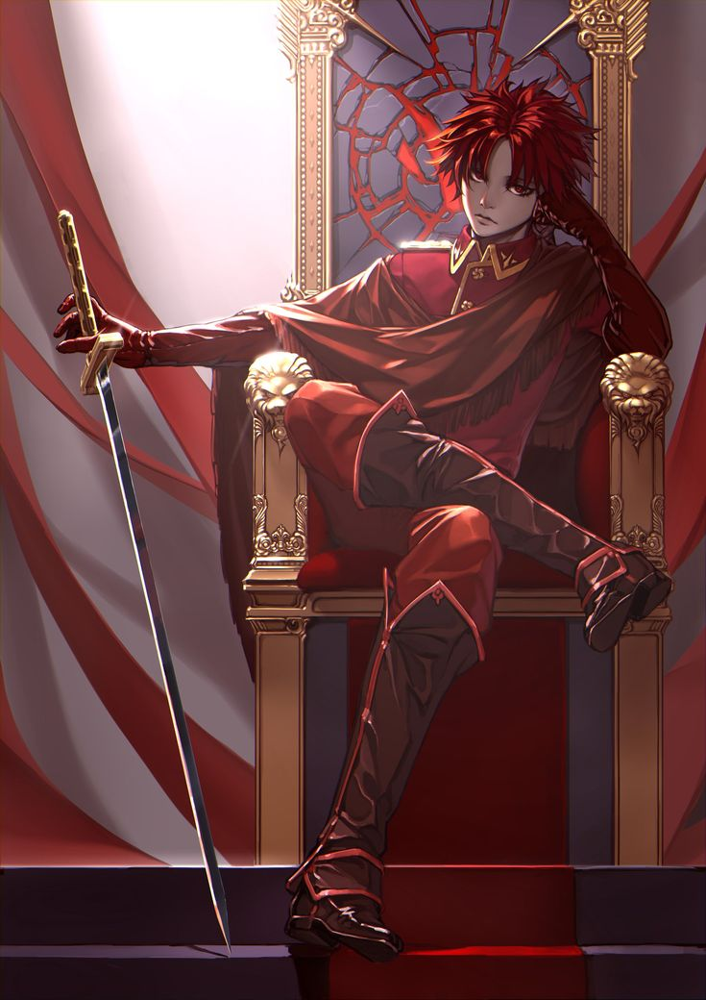 But would he survibe if
akuma came to take his kingdome and he hasitateless ly said no. Akuma
tells the king to just stay relaxed and slack off in his position and let
someone else help provide militery power to him while he takes the
political side. Don't let someone you don't trust take the inheratation
cause the king always doesn't have to be strong. The light kingdome king
says that he trusts light in order to handel his controll over the light
dragon and akuma says if he's ok with it then he is ok. the flamingo king
dome king asks if alfa is willing to inheret the royal knight position of
their kingdome. She holds a really powerful fire magic after all on top of
that she's probapally the only person right now who can command the fire
stone. She agrees to serve that king. Akuma says let's go to flamingo
kingdome. On this side neon was talking to the aquamarin king who has been
cursed by some short of witch and doesn't have much time to live. Yuta and
yota and the only person other than neon to be there. Neon says it's
definetely karma. The king says he definetely acted shamelessly so many
times but it's only after he has done it he's regretting it. But he had no
other option. He couldn't let the people talk about it. His own daughter
was betraying the entire clan. In the end he didn't wanted to die like
this. He tried asking for forgiveness from alfa but did she? Neon says
that's expected. People like them don't get forgiveness over such sin
cause it's too late.
The king asks if neon is willing to forgive him. It is shameless but he
really wanted to say sorry from his side and to everyone's surprise he
forgives the king. He tells him that a second chance is what everyone
doesn't gets but if he ever get's well he'll surely congratulate him to
his second chace. Or at least bring some flowers to his grave cause it's
not great to have gurduges against a dead man. Even if you have done
something horrible. The king tells neon thanks for his kind words. Then on
this side akuma went to the flamingo kingdome where in an open place fake
gold with real gold and silver was waiting. They brought out the fire
dragon which has the form of a bird. Akuma told alfa to activate that
dragon and it didn't activated even when they used the fire stone and
akuma decided to give it a try himself and took the authority of the fire
bird to himself and managed to reawake it and made it his own pet bird.
Akuma awakend the bird without a soul stone or anything and alfa was left
with the soul stone. When neon returned home he saw all the dragons
already in front of his house. Total 8 dragons and he can resonate with
the shadow dragon. He formed a unseen bond with the shadow dragon. Seems
like neon came back. Akuma said that. They are ready for war. They went to
the light kingdome and while trying to bring the dragon stone back to
ground it manufasted already within the kingdome castle and everyone must
fight the strongest dragon in that state. The dragon and every other
dragon was fighting and it was a spactaculer fight with everyone giving
their all and seems like the shadow dragon has the power to use other
dragon as it's own soul stone and he does that neon becomes the ultimate
king who holds the power of shadow itself and almost wins to a fight with
the light dragon but even with that much power he didn't won. The light
dragon has a similer power itself. It sucked neon alfa and flame in it and
all the other dragons and also light himself and turned it's own color to
black. It became even stronger.
Akuma was holding himself up as the last resort cause he didn't wanted to
ruin all the fun at the start. Fake gold tried taking his authority but it
backfired. Akuma knew all along that the shadow dragon was weakend
originally by the first king and then it lost it's power by splitting
itself into 8 other parts remaining only a shining shade of itself. The
original history is different. The 9 devil and angels wanted such power to
create the door of heaven and hell itself but they were ceized to exist if
they eve happend to open the gate of hell or heaven. By whom is another
question. They sealed the ultimate creation of their powers and after
years during the first king's time the demon god or fake god came who
terorrized the world with clamitites. People though those storms are god's
anger. That's why that being is titled a god. The when the first king
fought the dragon he split it's power into 8 parts and kept the strongest
segment and kept it sealed. Up untill no one manufasted a soul stone
that's light element but akuma did and that was the only reason this
dragon is acting right now but it's also vaunerable to light. Akuma shows
his ultimate form. Light mode. Littelery. It's too beautiful. He fights
the dragon solo and managed to win and fake gold wanted to get the
autority and silver told gold that akuma won't give him the authority
cause he never said he will help him get the authority. But akuma gives
him the authority anyways and told fake gold to use it.
He died during doing so cause even the seals created by originally akuma
has a limit only akuma and neon can see throw their future sight. Turns
out the king of light kingdome already had akuma the authority of the
dragon that's why akuma had it. Akuma returned everything back to normal
and all the 9 dragons were sitting in front of akuma and akuma wondered
what to do and he decided to order the dragons to live freely if they want
and protect their nations. Flame took the water dragon and neon took the
shadow dragon and also light took the light dragon. All the clones were
killed off and seems like the criminals are having a bad time coming back
to their cells cause they did something horrible again and didn't changed
their ways. The prince of kagami neon's step dad finally became the king
and he authorized neon to be the royal knight. The most respected position
in the entire kingdome. Even the king respects the royalk knight. Neon
told akuma that he should have been the person who could have been the
royal knight but akuma asks why he wants to downgrade his status. He's the
strongest among the entire world. Why would he ever want to be respected?
He doesn't wants to be respected. He just wants his people to love him.
And everyone smiles. And akuma makes a joke about alfa being neon's wife
and everyone laughs. The next day comes and flame goes to the kingome to
take care of his own rulership. Akuma told flame to have a nice trip and
eat something on the way and flame left. Seems like he won't be training
anymore since he's gotten real strong from the past events.
Neon thinks about that and asked what is left for them to do now? Akuma
says alfa and yuki are the only two people who needs to grow up. They all
have already reached their max potential and should thrain themselves
based on their prefering and work hard cauese he doesn't have their
bodies. Neon asks suggestions how to increase power and akuma told neon to
go do bodylifting or something. A person who knows how to release well
amount of energy along with the suitable body to handle the pressure of
power. That's what they need to do. They need to be soul stones
themselves. Not the one using one cause in the end they'll be used by the
soul stone. Alfa asked akuma about her gap and what can she do and akuma
tells her that she isn't free enough. Something is bothering her and she's
clinging onto feelings for which she's blinded to see what she holds.
Everyone has potential yet only few succed? Why? Is it cause they lack
power? They lack motivation and what it takes to be strong. If someone
refuses to move on the past then it's clearly not akuma's fault. Alfa
asked if akuma is meaning her father and akuma realized something. He
asked alfa if she's thinking about that and alfa says yes. And she is not
being able to do so and akuma told her not to worry. If she's unable to
forgive him then she doesn't needs to. She has her own guregest against
people and emotions like those are not necessery have to forsed in cause
if someone littelery tried to kill her then she'll surely be mad. Akuma
told her that it must be confusing for her what to do right now but akuma
recomends her to not listen to neon. Be ruthless as possible cause people
have a havit. They do stuff, then they ask for forgiveness and then do it
again. So will she forgive? Akuma at least won't. Alfa get's her answer
and thanks akuma and neon says but people deserve a second chance don't
they? Akuma says sure.
But when they are doing something and then they realize they are doing it
wrong. Some has already comitted a bad deed and didn't even thought twice.
Is that really forgivable? Neon says he has a different opion and akuma
respects neon's opinion cause he still haven't seen the world yet. On this
side at night after the criminals were doing their usual deal they decided
to make a plan on to defeat akuma cause as long as he exists no matter
what they do they'll be caught and one of the guys asked why don't they
just leave the country and the other guys thought that's a great idea.
There are other countries but the problem is they are not goanna be able
to escape a litteler angel king who is telling them to do some stuff. It's
jackpot for them cause they'll be getting royalty and on top of that they
can't escape him cause he'll immidiately kill them the moment they reject
his offer. There is a guy with reality bending power and I guess miss
harly queen who can turn into a witch i guess. What do I call both of
them? Joker and harly queen? On this side in the night akuma was sleeping
and noticed that his wife was not able to sleep properly and akuma hugged
her and asked if everything is ok and she says she has something to tell
to akuma. Akuma listens and they are goanna have a baby and this made
akuma impaitent insted of happy. He's happy but also worried. When neon
was about to be born he couldn't sleep properly and in the end it resulted
in her death. This time what can akuma do? He won't let ayaka go throw the
same or worse situation. He couldn't sleep the entire night and ayaka
regrets telling akuma. She could have told him late. On this side those
people make a plan. Hary will infect akuma's wife with black magic and
then using joker's ability they'll swap the position of ayaka and harley
queen will use her magical powers to impersonate ayaka.
They decided to work on that plan. On this side neon saw akuma's sleep
deprived body and told him to take some rest but akuma doesn't want to.
But he still sleeps anyways on ayaka's lap. Everyone is training strength
near the place and neon was the only person who was at home. He was
wondering why is he working so hard anyways? What exactly is his goals?
Everyone has a reason to get stronger like someone doesn't wants to be
vaunerable. Someone wants to live better life or ali just wants to flex
but what does neon want? What is his goal. When neon saw akuma happyly
sleeping on ayaka's lap he thought he definetely wants to be like his
father one day but he wonders if alfa wants the same thing or not. Neon
doesn't thinks she is even intrested anymore. She's hanging out with flame
a lot lately. They used to fight all the time. Could it be that she lost
intrest in neon cause he's not romantic? In the end he doesn't cares if
she's in love with him or not. He loves all of his people and wants to
keep living this big family like normal. That's what he wants to do. But
everyone will slowly leave him. What'll he do then. Ayaka goes to see
herself in mirror since her face was starting to see symdroms of black
magic and ayaka when went to the bathroom she got swpaped with harley.
Akuma broke his sleep and came to check on ayaka. On this side the real
ayaka was kidnapped and was being transpoted somewhere. Akuma started
living the same day over and over again.
Neon suddenly started saying different dialougs and everything and akuma
managed to find a loop hole that it's bounded by someone's magic. He
wondered who created that illution to his mind. He went to hug his wife
who was standing in front of the sink and then realized that it wasn't
ayaka. He holded that woman by her throat and almost killed her and told
her that if she doesn't tells where they took ayaka then he'll kill her
bring her back to life kill her again and repeat this prosess untill he's
satisfied. And guess what happens? He won't stop untill eternity. That
woman got so scared that she told akuma and he instantly broke the entire
house seeling and went to meet ayaka and neon saw this and he rushed to
inform everyone of this. On this side ayaka was being transported when she
finally gather enough energy to fight and thought those people are really
weak and then the reality swapper came who is their back bone. For some
reason he's able to do it infinite times and she was having a hard time
fighting and she remembered that it's exactly the same years ago. A guy
dressed in dark who called himself the god of death came. She couldn't
risk her child's death so she made sure to not move too recklessly but
suddenly wehn he cut her belly open she had no other hope in living
anyways. Before they all can even do anything akuma in an instance killed
of every guy out there sorrounding ayaka and then proceeded to kill that
guy with reality bender and tried to kill him but failed. Ayaka was happy
to see akuma came here in time and akuma used his future sight. He noticed
that the baby is fine. His future sight doesn't works like neon's danger
sence. He has to manually activate it. Matter of fack he didn't even knew
about future sight untill neon told him.
He had such a thing to his own bloodline? That's akuma's ability. Akuma's
black magic he was born as an angle and akuma realized that he must be
also born with an angle magic then? What is it? Who was his mother then?
Cause he knows for certain that his situation is exactly similer to his
own. He got reincarnated into a child by a perfect host of a devil and an
angle host but who was his original mother? He can guess for now is the
first king is his own father as the prophecy told that the decendent of
the first king would come. Akuma really wished to meet her cause he will
definetely revibe her and make her meet his wife. On this side neon
reached the place and everyone else did and akuma saw the reality bender
suddenly got stronger and neon was regretting letting that guy go cause he
would have done a really bad thing if ayaka died. He hugged his mother.
The witch has returned and she used a wierd magic to make everyone loose
their emotions and akuma was not smiling. While everyone was crying for no
reason akuma kept moving forward to that woman and kept his face as he
looked at that woman and broke her jaws using his legs. The reality bender
came and altered it but akuma also broke her jaw more than 777 times and
every times he broke it she felt the pain cause reality bending is just
another form of magic that disrupts matter and rearranges them on the
user's not and how does this guy has so much energy to do so? It needs to
be at least 1 billion neon energy he already used? Is something wrong with
that guy? Wait. He isn't using his own magic.
Akuma breaks the jaw of that woman again and she finally survibed again
but she died already. She couldn't survibe from all the pain. Even reality
bending can't change anything now. Then akuma wanted to kill off the
reality bender guy right now but and procedded to do so but he was
transported back somewhere using some short of spacial magic that akuma
wants to learn for himself. He noticed that it's angle magic and wonders
if he himself has that ability but then remembered that only pure angles
have that ability and even the angels themselves aren't able to do that.
Later that day akuma at home reveals his conserns and ayaka was sad that
it happend the last time too. She was about to have a baby and it was
supposed to be the most lovely thing they could have yet they died. They
all. Tragicly neon is right in front of their eyes but ayaka is worried
that she won't have the same fate again and akuma told ayaka to not worry
cause akuma will be serious about his family this time. And even if the
world is ending he'll give his family priority. On this side the reality
bender joker is in front of the angle king and even he knows that akuma
already knows that his existence was incluenced in order to do what he did
so he decided to spare joker by making him unable to fight anymore in his
entire life.
He'll never be able to use magic and steal is his magic. Akuma's magic may
be copy and his magic is copy. The angle king on earth is planning
something. To build a beautiful place angels and humens can live together
since turning the earth into heavens is what they want. Who doesn't wants
to tereform the earth to heaven? On a different side the prince was with
the old guy with soul magic and he noticed that his darkness may be
something he was born with but his real ability hides within light magic.
It's peopl's prefrence. Some people have great kindness inside them yet
they use black magic and some people have great darkness inside them yet
they use light magic. Usually the talent of someone in magic is determined
by their emotions. What kind of personality they have. As he knows both
prince and princess of the aquamarin kingdome and flamingo kingdome
changed their elemnts? Is that a coincedence? Or just a play of situation?
Both were forsed into having a certain thing when you usually want freedom
to do something else. And it is abious that prince's real talen lies
within light magic and prince explains that he doesn't knows light magic
and the old guy says it's not impossible to not learn a new element that
you are not born with. Many have done it. The prince explains that it's
too hard and the the old man says more than a thousand people every year
manages to do that Something prince is too afraid of. Are they not humen
who are doing it? Are they the greatest masters of element?
Are they a sage or are they the strongest? Yet they are doing it and
prince is asking if it's too hard? As long as it's within human
capibilities, as long as he is willing to take the step in order to
protect the things he's constantly failing to, in order to earn the
respect he wants he must sacrifise his life of pleasure and it's just
temporarly. Cause when you get stronger you'll see the world in a
different way. You'r experience will guide you. If he went to folow
akuma's routine now who's a house husband right now then he wouldn't make
any progress. Even akuma himself never had such pleasure in life. He had
the same way of prince yet he abandoned his please cause it's too booring.
Not cause it's uncomfortable it's booring cause he's always loosing the
ability to be normal or free.. He did everything in order to be powerful
and yes. The hard truth is sometimes you need to be chosen in order to be
the best but the reality is you don't need to be chosen to great cause the
person who is greate chooses greatness itself. He doesn't want to be
strongest or the best. He just wants to earn his dreams to protect and
earn his respect and be a responcible king so he must forget the
impossible word cause humen being has been surpassing the limits of the
word impossible. Each discovery opens the door to a new posibilitis so he
must fight and learn not to give up cause the moment he gives up he won't
win or be reborn cause he didn't set a respawn point like akuma.
And even if he did then no ayaka will be waiting for him on the other
side. Prince uderstands that and the old man says that if he's really not
willing to work that hard then it's no use for him to... Prince agrees to
do it. He'll work hard string from right away and he completed the task
that was given by his master and the old man had other studens who were
struggeling with it. Then the master gave prince a soul stone that will
temporaryly channel light element power into him. It's extreamly weak and
really fragile. The moment it breaks his light element power will be gone
but maybe he can learn something from it. His job will be to defeat the
strongest student of the old man to set a goal of what he'll need to do.
The moment prince fights him he wins after awaking his own inner light
energy and he might be really strong right now and since he skipped the
heard work and the old man says that he did promice to tell prince about
the secret place if he defeats him so he shows prince the place. It's a
fruit that will give one power. Akuma knows good enough about the fruits
and all so he called him to come tomorrow. tomorrow prince will consume
this fruit and earn one of the most powerful yet one of the most
corruptive fruits cause it might end all kindness inside one person and in
case someone with the even tighnest bit sin have eaten this fruit they
will be taken over by the darkness of this fruit and be lost within the
grasp of power.
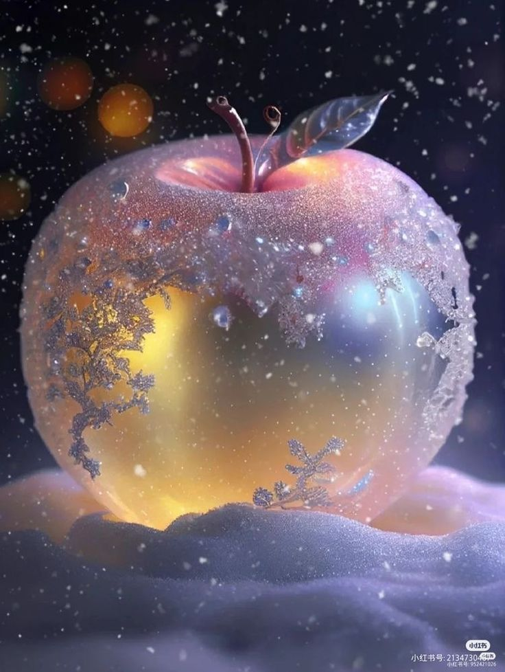THe strongest studen
wom I'll call robert didn't agreed and prince asked what if akuma ate it
and the old man says he doens't knows if he can trust him on this one
since he'll likely give it free for one of his students or so without
judgeing their motives. He might not be bad and knows his own limits but
endangering someone else just cause you know they won't die is foolishness
and akuma still has a lot to learn about himself and his own weakneeses.
The next morning akuma is teaching them self controll by making them sit
in a wooden place on top of a bamboo. Akuma says he did wanted to give
them even harder thing to balence like a pit of rock but since they are
struggeling with this small thing he's sure they'll take ages to learn
those. Ali doesn't likes traning. He sasy that he wants to know how'll he
use it in practice? Akuma asks ali what'll he do if he went to china and
fought some streeth fighters? Everyone is a kungfu master there and ali
agrees. Flame says he went to china and it's clearly not like that and
akuma says who cares what is china like? All they know is they fake stuff.
And bad management. Akuma is asking his students for a name for his
daughter. Ali says since alfa's name is alfa then why not beta and akuma
doesn't dislikes the idea. Alfa asks why her name and ali says it's goanna
be her sister too. Sucrose thinks of the name How about Aya? It's like
half taken from her mother and akuma likes it. On this side the students
of the old man was protesting blahf of the strongest that he is the one
who deserves the fruit and but it was failing.
The strongest whom i'll call akio wanted to steal the fruit. On this side
neon told akuma about their mett up and he's running late and akuma
decided to take alfa ela and yuki with him and the rest will do their
training. The reason being they are too weak and haven't even reached
their limit yet. So surpassing their limit is impoosible right now. And
also ali is not going since he is actually doing better than the rest of
them. He lacks so much talent from genetics that he has everything to earn
from training. Usually what happens in evolution is that people have a
certain trait of ability that they act like a switch and turn off an on
just like skin color. Why do people in south africa have darker skin color
than the most of the asian countries? It's cause they activate some
protective skin traits on their skin and the same people when they start
living in the place where white people lives they'll start whitening. But
eveulation is not that easy. It takes at least 2 or three generations to
reach that trait. Humen have a certain mussel in their hand that has no
use in today and slowly some humen have already lost this mussle and also
humen foot is structured such way that it can walk on most surfaces but
right now if you go and stand on top of rocks your leg will definetely
hurt more than it did back in the days since humen foot has lost it's
undershelt due to wearing shoes for thousands of years. It's like a switch
in your body which is telling itself that i don't need that trait and i'll
use my functions to turn on more necessery abilities for survibal. that's
the reason your body won't activate those abilities on their own to save
enrgy cause it's also a matter of food that your body won't risk.
It won't risk activating too many abilities at once but day after day year
after year humens have showen their will power to activate their abilities
if not genetickly from evoulustin then hard work to reactivate that
switch. THey didn't knew that's how it worked. Akuma said that to be
honest akuma teaching them something they are already capable off and
that's why ali is the only person getting stronger. They'll need to
quickly reach their limit to even break it or surpass it. Akuma left with
alfa yuki and ela. They then reached the loactiong and saw the disrupt
between the student and master for what happend and he heard them and
asked to see the fruit and when they reached the cave the strongest guy
whom i will call robert came to steal the fruit and tried fleeing but
akuma chased him with everyone and saw the fruit using future sight
ability and realized that it's an original devil fruit that existed even
before the devil tree in no man's land. It definetely belongs to the tree
of angels and if a humen eats it he'll surely die. Robert asks but what if
he wants to eat it what then? Akuma thought about it and says then die.
It's just better since you'll know it yourself. Robert threw the fruit
back to akuma and said he doesn't need the fruit then and akuma said there
is a way he can eat it want akuma to find it? And robert wanted to know
and akuma took a bite out of the fruit and he said the way he'll do it is
by akuma's healp?/''////........ Akuma started loosing it. He started
loosing conciousness. He started dying and his entire body tempreture
started raising and all drastacly he's being attacked.
A parasite entered his body. He told alfa to cut akuma's body open and she
hasitated. Too late. The parasite took over and distroyed the area.
Hopefully everyone survibed but akuma decided to seal himself within a
black barier and eat the last bit of fruit and almost coontroled himself
within that box. They were thinking what happend? The angle king appered
explaining that the devil king noticed that the changes that were being
made in his own body would leave him unable to use magic permenently so he
devoured the entire parasite angle fruit that he's planning to use to
actually create an antybody. Just like how virus themselves are used as
vacnis. That guy then broke akuma's box and binded him with a certain
angle techniq and told akuma that he's foolish to think that strength
alone can benifit a civilization. And strength alone would make someone a
king or queen of angles. He tells akuma that while his servants were
fighting he was making a bass on the clouds for his new royal castle on
earth. alfa and others were too scared to make a move and the old man
decided to use up his all strength to kill the angel king but he failed.
He's even stronger than the angle queen. The king explains a bit of
strength always suits a king. That angle king whom I'll call julius cause
he's like he's like that angle from black clover. He killed the old man
whom i didn't named yet and i don't think i'll name him anytime soon but
he reminds me of that one old guy from one punch man who won rock paper
seisors with saitama. He isn't jakked but rather wasn't. Everyone was
scared and julious made akuma unconcious.
He thought even the most purest angle exctract wasn't enough to kill the
devil king. That's remarkable. Julious told alfa to turn her hostile
intends down since she can't beat him. So what if she does something else?
Julious broke akuma's neckless and took all of his soulstone. He gave the
fire stone to alfa and told her that if she accepts to be juliouses most
loyal servant then he's willing to spare humen kind and make them just his
servants. Otherwise he isn't willing to keep filth near this world. Alfa
accepts since she doesn't have any choise and the other girls and everyone
including the prince was told to make an announce ment that the angels
will rule over the world and he'ss make his kingdome in kagami kingdome.
And also they'll start the start of a new era by killing akuma in front of
every person in the earth. Including the 9 kings of the world. Yes the
angle king will keep the kings but as his personal servants who'll take
care of each sector of his world. Ela and yuki came back with massive bad
news and ayaka wasn't sure what to do right now. She thought not again.
Not now. Why? She's sad and started crying. Neon took her to her room and
everyone was disscussing what they can do right now? The next day they
found news papers about the situation and it's goanna be worse for neon.
The angles give out speech. That they'll at first end the life of akuma
then open the gate of hell and distroy all the filthy devils out there.
Without lusifer they are nothing both creatures that only exists for
worse. Then they'll create the heavens on earth and the humens will help
in order to create that. Meanwhile they'll all serve under the angles and
posing any disrespect to the angles will result into immidiate death.
Of course if you don't mean it it's perfectly fine but if you conciously
say or do a single thing that will disrput the angle's feeling then your
existence will be removed cause the angle king knows soul magic and
there's no after life. On this side neon was worried about alfa cause who
knows what will that julious will tell her to do or do with her. He was in
the royal capital and neon said they'll gather every one of their troops.
Every soldier and every dragon and every king and all. Flame came and told
neon that they can't do anything. It'll be useless and ali told neon that
they are not strong enough no matter how he look at it. Everyone abandoned
neon and neon didn't wanted to. Neon told flame that he's worth less for
that. When alfa's life was in danger he fought alone. Flame told neon that
he was fighting humens then. It's an angle who's even stronger than the
devil king. The angle king. On top of that they have their entire army
again. Their strongest card akuma is not there. Neon asked if akuma was
with them when they heard that the angle door is open? What did they do
when akuma wasn't here? They fought knowing well enought that they might
die anytime yet they are not goanna take the step. Neon told everyone to
leave his house right now. He doesn't consider's any of them as friends.
They are traitors. Flame tried making neon understand that they can't do
anything but neon told them that he's goanna throw their stuff and left.
No one said a word cause they are ashamed of themselves and flame couldn't
watch neon go so he decided to fight neon cause he wanted to stop him.
Flame lost even though he thought he was stronger.
Neon didn't even used his ultimate techniq. Neon told flame that he
understands what akuma means right now. It was his fault that everything
happend. If he didn't told him to spare the bads and give them a second
chance none of this would have happend. He wouldn't have to get exicuted.
But if that really happend neon wouldn't have realized the fact his
friends are traitors. He left. Neon asked everyone for help but everyone
is already under order of the angle king so they can't. Neon was asking
the shadow dragon for help now but seems like the shadow dragon is hijaked
by the king. Neon was upset about that. He went to kill the reality bender
guy who lost all his powers and killed him mercylessly. He sweared to
never forgive anybody. He'll never show mercy to anyone ever again.
Specially not the people who doesn't deserves it. On this side akuma was
gurded heavely when ayaka came to meet him with permission and was crying.
Akuma told her sorry since he messed things up again. He really wished to
see the face of their daughter. Ayaka tells akuma that she'll be sure to
give her a picture when she's older. Coming back home ayaka was crying and
neon saw that and threw all the things his friends had and burned them.
Some were memories. Some were gifts. Some were old cloths and some were
favourite item. There was books too. Neon met rengoku and robert who were
willing to fight with him and while eating dinner they wonder what to do
about the situation and when neon went to his mother's room seeing the
state she was in neon put her in her bed carrying her. Her whole body is
running out of power.
Ayaka explained that her life force is connected to akuma's since she is
not immortal her life forcec ran out already. She shouldn't be alive right
now yet akuma is the only one who knows how to use aura. Everyone creates
energy from aura but akuma uses aura itself. that also fuels his soul
magic which is why it's so strong. He constantly supply's ayaka with his
energy to keep her alive. Now if he dies ayaka will likely run out of
energy too and die. Neon asked about the child and ayaka said she'll die
along with them. Neon asked she? Ayaka said akuma's future sight can see a
lot of things normal future sight can't. He used to activate it accidently
back in the day when he had no name for it. Neon said but he's not dead
yet. Why did she already started dying and ayaka said it's not started
yet. She's just too tired from the crying. She doesn't feels like she can
live anymore. She has a selfish request. To save akuma or at least get
enough energy for their child. Ayaka asked neon to fuilfill this selfish
goal of her to live untill their child is out in the world. She has
nothing else to wish for. Neon after thinking for a while he made plan to
save alfa first and then fight prince and during that amount of time
rengoku will gather enough supply by going to akuma and asking for it.
Then akuma will go save akuma with alfa. It's not good plan since their
power is really low but it's all or nothing. They went to a new journy at
night time. Rengoku was at his position. and neon and robert came to the
royal castale to free up the black dragon cause it's more power along with
alfa. On their way neon found alfa so he went there to talk with her while
on this side robert met the prince whom he fought but he lost compared to
his power right now.
Then on this side neon talked to alfa about the thing that's happening and
about his plan and she doesn't agrees to come even though neon once gave
up all and everything for her. Alfa asaid that it's good and all that
she's going to do such stunt just toe makesure his sister is born but is
three lives really worth for one? Is it really worth... Neon told alfa
never mind. I understand that you are also a traitor. Akuma saved them so
many times and treated them like his own child and he's their only hope.
Neon saw the soul stone of akuma and told her that she's not planning to
keep it does she? Alfa says she has no choise. Neon was so angry that he
souted at her for being so selfish. Just a few years ago she was in the
exact position that his father is as just like that he'll go save his
father. Alfa didn't wanted neon to throw away his life and neon told alfa
clear and straight that he doesn't loves her or never did. But he'll do
anything to save his loved ones. But he will not forgive people that
betrayed him. And that's where she falls in. Alfa didn't had much to say
so neon left and he met up with robert who was davistated and neon fought
the prince and won and decided to kill him but alfa stopped him. She asked
if he's really planning to kill his own father? Someone whom adopted him?
Neon says that he's greatful and everything but just cause he's greatful
doesn't means he'll forgive traitors. He'll never forgive ever agiain. He
started fighting alfa and he really huit her so hard and it seemed like he
was about to really kill her. Alfa also fought back but neon reminded her
that she's using borrowed power that doesn't even increase her power. Is
that what she wants? Is that what she wishes to be? A traitor? A cowerd?
Neon was fighting in the castle and seems like julious was enjoying the
fight with a cup of tea knowing neon will come to him himsef and he also
knows that he might not make it. Who knows. He doesn't want to predict
cause both outcomes are good for his favour. alfa told neon that she never
wished to be saved that day. Why did neon saved her when he didn't loved
her. Neon said that he did loved her. He really really loved her and
thought he could give the world to her. But he can't anymore. He only has
hate for her right now for her right now. She's not only not helping him
but fighting for the exact person who's holding his father hostage. The
person who saved all of their lives many times without any condition. But
does he need to be the greatest person to be saved? Does he needs to be
the greatest asset to be saved? No! Neon loves his father and will not let
his family shatter like this. It's good that alfa showed this side of
herself to neon already cause now he knows who's real and who's traitor.
Alfa hearing all this accepts defeat but neon was thinking it was just a
bluff and decided to land a huge punch on her and she fell on ground. He
doesn't knows if she's dead or not. He sees her crying on the ground
holding her stomach cause it hurts from the punch. Neon was leaving and
alfa told neon that's she's sorry. She is not even strong enough to do
anything in the first place. Neon says that not being able to do something
and not doing something is two differen thing. Alfa begged for forgiveness
and neon said that he disbanded their team. Now she can call someone else
captain or be it herself. He doesn't cares since he's probapally goanna
die too. Neon took his dragon and left to somewhere else. He will use the
dragon's power to suck all the other dragon's power but to his surprise
all the dragon is already present there ready to fight neon and on top of
that the light dragon is here with light. and other holders. Neon should
have known it. Flame wasn't here. Neon fought all the dragons all together
and managed to capture some of them and in the end it was a close fight
between the light dragon and poison dragon vs neon and neon knew that he
might loose so he left his dragon and everything as a decoy to get to
akuma but there was a soul barrier around the place where neon was going.
He couldn't go far enough. Neon finally lost and wanted to distroy his
soul stone cause he can distroy it the normal way but if he wants he can
create a giant blast and end it all. He was about to do it but akuma used
his last bit of energy to stop neon. The angle king saw this and decided
to steal neon's soul core and told neon that he isn't dying untill he
watches his own father die in front of everybody.
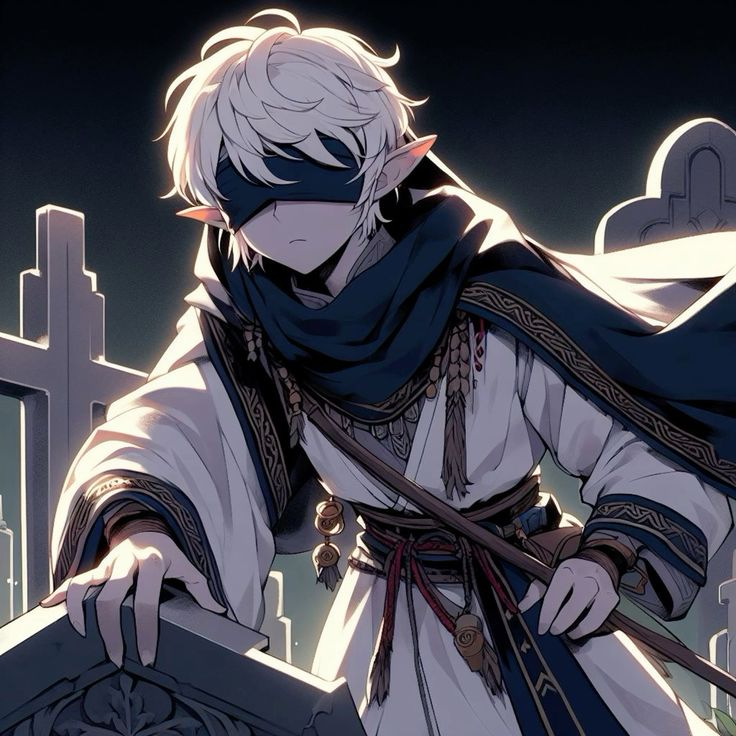 He won't even
sentence him to death cause he himself will break his own soul core. If
not then live eternerly with the guilt what what you couldn't a falure.
Ayaka along with everyone was watching as the exicutener was raising his
blade. The blade is coated with soul magic. It'll end akuma's existence.
There won't be any afterlife after this. Ayaka found no way and screamed
to save her child. She just wants to hold her husband one last time
otherwise her child will die. She'll die. She doesn't have enough life
force. Even with all the begging the exicution wasn't stopped but it made
everyone realize what is happening. Why is ayaka so sad and what is the
reason for everything. Flame decided to step in by ubgrading his ice magic
into it's final form. Formlessness. He was like mist which could dissepear
and re apper and he was dominating the fight and everyone started fighting
the angels out of rage to make a road for ayaka cause they can't let her
child die. It's not about such thing. It's just something people realized
that they are not only ending their own hope but they are also loosing the
ability to give birth to the next generation and tell them a happy tale. A
tale about their bravery but if they don't act now then when will they
act? Are humen really brave? Everyone from strong to weak to kings to
peasents to the entirey of humen core started joining the fight. Most were
screaming and giving man forse like the protest in bangladesh but they are
at least protesting.
The angle king didn't bothered to fight flame and insted he saw him fight
the angels and everyone try so hard to let a kid's soul save. He'll let a
kid born. He's not that heartless but when that kid is manupulated to hate
him and becomes like the reast of the humanity he'll spare to mercy. Ayaka
somehow reached akuma and holded him while akuma tried his best to pass
down his entire life force into ayaka and when ayaka had enough she tried
breaking the seal but even with everyone trying they were unable to break
the seal. They were all confused. Since the angels stopped resisting and
the exicuter came with a giant axe and decided to use it and people fall
under it it's not his fault. He launched the axe and akuma used his wings
to stop it and it was bleeding. He protected everyone. He wondered what
this chains were made of? The devils had a similer chains that they made
but they were weaker than this. Akuma understands. It's that so called
god's creation. Even though akuma was ripping off his own body he decided
to use his full power to break it. The king came down and threw everyone
out of the place and the angles created a barrier. The king said that she
had her wish to get enough life forse. The king let him have it. So she
can go. But seems like people are still caring for akuma. The angle king
decided to exicute akuma by alfa. Alfa was holding the blade of exicution.
Akuma successfully broke the chains and felt dizzy. he tried using magic
to break the magic barrier but the angle king reminds akuma that he has
lost his all magical powers. He's nothing but a normal guy from now on.
Akuma decided to attack julious insted and he's dominating. While alfa had
to take the step to exicute akuma but neon came to fight her and he fought
her along with flame who told neon not to kill her and neon isn't showing
mercy but even alfa has awakend new powers. It's obsidien power. It
negates flame's mist power. Everyone with the entire team reassambled they
were loosing and neon thought that without his soul core he'd be at a bad
spot. Neon used his soul ability and the soul core fell from joliouse's
hands and even he was confused and akuma tossed it to neon. Jusios was
confused. how did akuma touched something that isn't fhysically manufasted
or soul? He can't use magic but he can certainly use soul stuff but it
won't make him able to use fire or anything he's good at. What's the point
of a amplyfier when you don't even have a guiter? Akuma suddenly started
dominating the entire fight and he is unable to release any short of
magic. His energy container is empty. On this side while fighting neon
alfa launched a giant attack and akuma to juliouse's surprise used
diementional walk. It's something similer to what loki uses and goku's
instant transpission or you can compare it to kuregiri from my hero
academia.
Akuma jumped in front of neon and took the attak but insted of delevering
the attack ayaka was holding akuma's soul stone that she threw at him and
akuma instantly broke the soul stone and on this side julious instantly
came to stop akuma cause he can't let him reform his body otherwise he'll
regain the ability to reproduce magic. Perhaps he was too ignorant and
slow cause he already lost. Akuma released the massive dragon from his
back and commanded all 9 dragons to fight alongside him and let the people
rest and he also thanked alfa for her throw. Who knows what would have
happend if she didn't made that throw. Akuma made a huge areana and told
julious that he wants to prove a certain something that he's not nobody
without magic. That's why he'll fight him and win. Julious thought it was
a bit too much of a stretch but akuma proved his point by regaining his
entire body regenerating it and his 2 soul stones came to him but he gave
the red one to alfa and the light one to light. Akuma combined his both
devil and angle form to create the ultimate devil and angle form and it's
based on pure physical boost. It doesn't requires any bit of energy.
Julious was loosing and asked why he didn't used it earlier and akuma said
that he certainly had the ability to transport which he unlocked after
eating the fruit. It contained angle exact didn't it? Everyone might know
that akuma is the devil king but in reality he's a half devil and he also
has angle blood flowing throw his body. This fact was lost throw history.
His black form is something he created representing his devil people who
had a devil mod but he didn't had any.
His angle friends had but he wasn't born with. Heck he wasn't even had the
ability to release magic but when he first saw his brother almost dying a
thing snapped inside of him. He doesn't knows what it was back then but it
must be dopamine. brain cemical that raises humen limit cause it knows
somethin avobe survibal is needed. Akuma with his new awsome move fights
and wins the fight and distroys the angle monuments. Seems like a lot
happend. Next arc will be even amazing. Everyone returned to home but to
akuma's unknown neon has already got into a quarell into everybody and
akuma told neon not to so hard on others cause everyone was actually
acting logically. Just cause someone didn't wanted to suicide with him
doesn't means he'll call them traitors or anything. Neon says he knows
that much but they certainly had the ability to free him and akuma asked
if he knew that even if he was freed he'd have no magic at all. He'd have
to use aura to fight and he'd die. that's why he left alfa with the fire
stone so she could gather enough energy in time for akuma to get and she
even took neon's energy by fighting him to pour into the soul stone. It
was all a plan that neon needs to understand. Neon asked if he told her
before about that? Or it was just a coincedence that she threw the stone
at him? Neon doesn't wants to understand cause he's angry and wanted to
leave to his room and alfa tried to stop neon but neon slapped her and
said he doesn't cares if it was palanned or not. He is hurt by everyone
and he won't be forgiving anyone. He understands now what happens when you
forgive the wrong person.
Akuma got mad and told neon that those were criminals that were not meant
for mercy. They did a sin and his friends had logical reasons to not
support neon. Neon won't listen. Everyone had an impact on the situation.
Specially neon. It was as if he lost everything that day. He lost trust
from his friends. He doesn't takes them as a captain anymore and even
though everyone was apologising to him constantly he was ignoring evryone.
And Alfa started learning jokes from akuma and started applying them on
neon but even with all the tries everyone was failing. Eventually neon
stopped training with them and it felt like they were the ones who owned
this house and neon lived here by rent who won't spend few moments.
Training all the time and even sometimes during night. Not even rain can
stop him. 8 entire months pass by and a girl saw the beautiful night with
stars with her lover and she told her lover that it's about time they will
be seperated and who knows if they'll meet again on the other side but the
girl decided to use a space time portal exactly like akuma. She was
wearing a light soul stone that looked like akuma's. On this side it was
heavy raining. Neon was training alone when akuma came by and asked neon
how his training is coming along. He didn't returned home for 3 days so he
thought he staved to death or something. He brough him food. Neon took the
food and at it under the tree. Akuma asked how is the cooking and neon
says alfa's cookin? It's not wholesome for someone to just cook when they
never cooked in their entire life. It's not goanna work. Akuma said he's
happy to at least hear that he is willing to say her name.
Neon says that he doesn't really cares anymore. He thought about it for
months now and every time he does so it's all too much. He wonders to stop
caring but it makes him wonder everyday. Akuma asks if neon can't stop
hating himself after all. Neon says yes. He now thinks back and when he
thinks calmy he realizes that he really shouldn't have treated his friends
like that and maybe it was part his fault too. Akuma told neon that humen
brain is selfrightious. Even if you are wrong about something you'll want
to think that I'm right. Neon says you are right. It was indeed my fault.
Akuma said if he realized it then why not apologise and neon thinks that
he doesn't have the face to apologise to anyone. He slapped alfa out of
anger and fought his friends and even burned their stuff. Akuma said just
see the magic is sorry. It's just one word. One sorry that can change his
entire life. He will be left with eternal suffering from his guilt that he
can get over or he can choose to give up on his pride and say a simple
sorry. Neon says it's not about prid....maybe it is. Neon remember's
alfa's father and now he understands how he felt when he was dying. He
must be extreamly sad of everything he did. Akuma said there are two types
of sin. One comitted on intention. Where you know that you are comitting
sin. And there is the other one which is just a mistake.
Both sides were right but the reason of missunderstanding they feel like
they had a problem. On this case the person who realized his mistake feels
guilty even though it's just a missunderstanding. People who make mistakes
find themselves guilty of charge. But what about people who comitted sin?
They can't forgive themselves when they realize it by the time it's too
late. Akuma told neon it's still not too late. Neon says he's not prepared
and akuma decided to fight neon and if he won then he'll return home and
apologise to everyone and if he looses then akuma'll let neon name their
daughter. Neon asked if it wasn't aya that was akuma's choise? Akuma says
so he still remembers. Akuma told neon about the devil binding that he
isn't goanna use right now. They used to solve anything at all using a
fight back in the day. that's how akuma won ayaka back then. Neon was
confused. Didn't they married love? Akuma explains no. He was a fool who
ran away from home and ayaka had to do arrange marrage. Her father was
forcing her to it but akuma fought him in order to get ayaka back. He had
a way to buy her off but akuma decided not to buy her cause he not only
loved her but also resped her and wanted to not only make her his wife but
also make her his queen who'll be respected by the entire kingdome. Neon
said that he is really great since birth and akuma says that's so not
true. It's not like he didn't made mistakes. He was also one who made
everyone uncomfortable in his life. Ayaka left him and everything yet he
didn't gave up. He didn't let down.
Cause his mind always told him that I don't care. I'll do that later or
I'm not prepared but the answer is you'll never be able to do it if you
don't do it right now. So you must do it now. Akuma fought neon and
surprisingly neon turned out to be the winner. Neon is near akuma's
powerlevel and that cought akuma off guard with all the talking. A girl
fell from the mountain. It was the previous girl and she fell cause she's
not used to her teleportation. Neon and akuma ran towards her cause it's
better cause after they teleport they might not see that girl and when
they found that woman she was gone. Akuma thought coult it be that she
used space time magic. Neon said that's impossible. Akuma and neon are the
only one who can use it. Akuma said yet they are not sure of the fact that
weather it can be learned or not. So it's better not to speak too soon.
Far too many people saw that angle devil use space time magic. Neon said
angle devil? Akuma said slip of toung. They returned home and ayaka
cleaned akuma of the rain wet from his body and neon was heading to his
room when everyone caught neon and ayaka cleaned neon's head and told neon
that it's just a prank and neon said that isn't it...never mind. He went
to his room to change his cloths. Ayaka was near her delivery date. So she
was goanna be going to hospital tomorrow cause their apointment is in the
evening tomorrow. Akuma holded ayaka and said they are going to hospita
today. Who knows when her pain starts. He isn't taking any risks. The next
day comes and ayaka was comfortable and even prince came who'll look after
ayaka for a while and flame asked akuma why the king himself and akuma
said that one of the 9 king is his student. Why not? After all neon also
considers him to be a father figure.
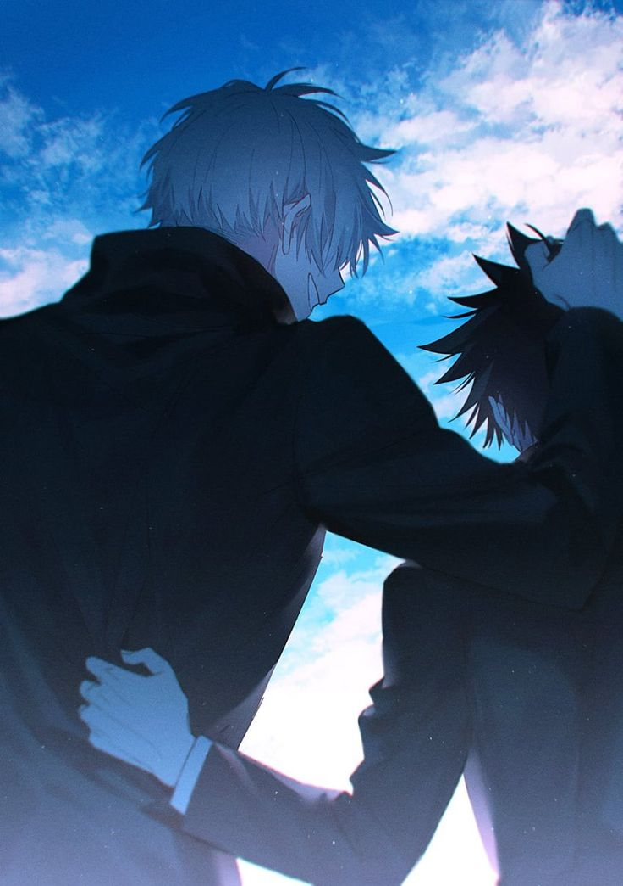 Akuma told flame in
secret that even though they are sharing the title of father together
akuma isn't sharing his wife. While akuma was walking alfa tried to make
neon smile but but she was failing so insted she holded neon's hands and
to her surprise neon isn't telling her to step awaya even though he's
still keeping the distance. Akuma was about to bump into a guy who is a
jaked big guy criminal. But a girl quickly came and bumped into akuma
insted and the guy left from the sides. During that few seconds akuma saw
a beautiful girl with silver white hair along with her white soul stone
that reacted for a second when akuma came close. Akuma wondered if that
was sota's decendent or anything. Akuma is teaching alfa how to use the
fire soul stone. Neon got the black and alfa the red one. Neon use his
future sight and realized that a store was being lifted by that jakked guy
so he went there while akuma's team was left alone. Silver came and asked
where neon went akuma said to be a hero again. Silver wanted to check
their strength and turns out everyone surpassed him due to akuma's traning
but ali was the only person who couldn't and he did gave a good match to
him. To be honest silver is one of the strongest guys in the entire nation
yet akuma's students are winning against him for fun. It really is
something different. Akuma says that end goal is to surpass him.
Everyone was shocked and akuma is confused cause why is everyone confused?
Humen are far stronger in mental physical and spiritual power than devils
or angels. Specially akuma who's a half actually isn't even genetickly
strong. But he rateher made himself strong with his strong emotions. Akuma
said the entire reason he's this amount strong right now is cause he
learned from his human body. Yet even his humen body wasn't gifted. The
sad reality of this world is to be the best you need to be gifted but not
the same can be said for being a hero or saving your friends or family. Of
course there are people who have a really strong will who always proves
that hard work can achieve everything but the reality is you won't make it
till then. You'll definetely give up. There are 3 billion people right now
on earth. Why do you think only a few emerge powerful or best at something
cause most people give up cause it's so easy. there is only 3 slots in the
top. The rest is something no one sees. And when you hear the 1st one
saying without hard work i couldn't be here he actually means it. It is
really easy to say work hard yet the mental capability you need to be
focoused is immence. Akuma told his students a story about a woman once
lifted a 1 ton weight of a car cause her childen were being crushed by
that car in an accident. When the world's strongest man went to a doctor
and asked him about it he said it isn't possible to lift such thing.
In that situatation that woman had immence pressure and dopamine and
adreline release which is prioritizing her chindren's life more than her
own limits for which her body raised the limits so she could do it. When
the world's strongest man heard that he tried thinking of the weights of
his own children whom he's lifting the car and managed to be the first one
to lift half a ton of weight. When akuma first heard this interview he
thought that guy was just speaking stuff to get symphyty untill he
realized that those things are actually working. Any normal people will
either ot believe or ignore or not know the impact of these tiny tips and
knoledges they just ignore out of all. Humen limits can't be truely tested
untill it reaches their peak downfall like a fighter in a battle. That's
why most footballers emerge from poor life style cause football is
everything to them and they can't do anything other than leave it if they
don't get into a team. That's why most people fail to be the best students
cause some poor guy with a sad back story must have it hard and study is
the only option he had. On our every day life we ignore these stories like
it's normal he's just taking credit for being poor and achieveing such
thing is what we say in socity untill we realize that being poor was the
exact reason they could give their all cause they had no option.
Akuma told everyone that fighting can't be treated like a hobby just if
they want to actually protect cause who knows when some short of zombee
acoplics or monster ablomilation starts again or some new enimy emerges.
Their littelar job is to be a gurdian. That's why every nation calls it
magic knights whe kagami is the only kingdome which calls it aura gurdian.
When they are trying to save someone give it all. Don't think that he's
goanna die if i don't win. Think you are goanna die if you don't win cause
you need to priorotize if you really want to win. on this side neon made a
new enimy with a guy so he left and while walking he felt like a falure as
a captain and then he saw some kids bullying a girl who knows water magic
and told her to be just a healer since water magic is useless. She can't
even use higher power and she seemed like neon's age and it seems like
some short of tournament was going on. Just a few years later they were
goanna start the 4 year world cup type thing again but it's goanna take
more than 4 years this time cause of the massive distructions that happend
in the last years. Neon decided to talk to those guys that water magic is
useful too and they won't listen and the girl thanked neon for trying to
help but neon wasn't satisfied. He decided to enter the tournament for
show off. There he only used water magic to win every opponent and seems
like everyone is at his age. 15. That's not the max but neon certainly got
stronger comaperd to when he was 13.
In these 2 and a half years so much happend and he certainly is bored of
reality. He won against everybody and even won the tournament and during
the finals akuma came to cheer on neon and after neon won he openly
challenged akuma that the next world tournament will be something neon
wins. Not even akuma can do anything to stop it. Everyone was clapping for
neon and neon certainly raised a fan. I'll call her ari for now who's so
amazed by neon's talent that she wished to learn from him but neon told
her that flame out here once been a prince and now the king who knows
better water magic than him so she can go learn from him. Flame was
certainly shocked for that. The girl said she wants to learn from neon
since he's so cool and neon thinks and akuma says something in neon's ears
and neon says that if alfa agrees on that which surprised everyone. Alfa
says yes and neon certainly wasn't too happy cause he became a leader
again. Akuma told neon that they are going to meet light and they might
take a few days before they return so will he come or teach his new
student and neon thinks and says he'll stay and look after ayaka and akuma
said wait. Isn't she goanna give birth by then? Neon told akuma to go rest
assured since neon will look after her so akuma can hold his daughter when
he comes back. He'll be sure to name her for him. Akuma says no problem.
Alfa says neon was the one who's supposed to say that. Neon was training
his new student and meanwhile he was thinking what to teach her and while
she was using her power she wasn't strong and neon said it lacked strength
and when ari aske what should she do to get stronger and neon doesn't
knows.
Get stronger. Neon tried thinking what akuma might say to him in this
situation and he'd definetely say you lack experience but how'd she get
experience? Neon told her that she must practice every day in order to get
strgoner and she asked practice what and neon asked what king of water
abilities does she wanna laern and she said something cool and neon asks
her if she has some goals in life and she says just wants to be cool and
fend of bullys. Neon respects that goal and teaches her a certain water
dragon technic his father once taught him and it was preety weak when neon
used it and it is but if she just wants to be cool she can create any
magic at all with her imagination. It's magical after all. that's why it's
called magic. The girl thanks neon and leaves. On this side the guy whom
neon caught a little earlier whom I'll call jiren escaped from jail. The
reason I'm calling his jiren is cause he looks like him but he is a human
has bulky veiny mussles and also he has ego and he's no cowerd and he's
also not very strong compared to akuma but he's goanna cause a lot of
problems to him for sure. Then ari said she also wants to be strong and
neon was confused. He decided to do a fight with her noticed that she's
slow and hasitant and she's also not confident about her punch. Just after
punching she's pulling up. She's also not good at using water abilitites
cause they are flashy alright but just flashy won't do it cause it's not
harming her opponents in any way. Neon told ari that exactly 2 years ago.
Maybe a little more than that. 2 and a half years ago neon had the exact
problems as her but he has experience and a good mentor. A father figure
and he asks her about her father and ari says that her father is just a
farmer.
He's not strong but he supports his family so she's happy about that. Neon
asks about her mother and she's just a housewife who complains a lot and
neon thought there's nothing abnormal about her. Neon called akuma and
asked him about that and he was confused himself what to do in this
situation and told her to ask what's her favourite attack and try to
incraese the output for that attack if she wishes to be stronger in magic
and basic stability is needed for water magic and also if she's standing
while using the magic then her leg strength might be good and also if her
hands are what she's using to flow the magic then practicing dancing might
be a cheerful way to practise. Neon agrees and seems like they were
helpful and neon told her she might not see any results but if she
continues doing this she'll definetely see progress throw out in weeks.
Ari says she already thinks she can release better magic. Neon tells her
good bye and decided to use spacetime power to get near akuma where they
were fighting light and neon told akuma that they seems like did well
training. Akuma told neon that's true. Akuma asked neon why he's here and
neon said he just wanted to hang out with his father. Everyone was shocked
to see neon and they didn't knew neon knew the spacetime portal and light
wanted to fight neon and neon wont too easily. He's certainly keeping up
with his training alone. Light asked what happend to neon and neon said
nothing.
He disbanded his team. He's not the captain anymore so he's not
responcible for what other's are doing right now. Light asked if everyone
was holding neon down and neon said the exact opposide. He was holding
everybody down. He was already born privilliaged with power yet he tried
fitting in with everyone who worked hard to achieve it. It's normal their
mantality didn't matched. Akuma told something to alfa and she told neon
that she forgot something at home so if he would take her and neon didn't
said anything. He forwarded his hand and holded her hand and then went
back to home. Neon told her that he's going to hospital for a minute.
While she can grab what she wanted to and neon can get her back to the
place. Alfa asked that neon didn't asked why she didn't asked akuma to do
it and neon said nothing and left. Neon went to the hospital and seems
like ayaka was sleeping while prince was using his cell phone in a
different waiting room. They'll start the operation in a few hours. Neon
heard about the break out of a criminal and they sent silver out there but
he returned brused so they sent gold out there. He was wondering to send
akuma but if neon can take care then it'll be great. After all acording to
the records neon was the one who caught the jail breaker and neon
remembers the criminal. He's too weak. How did he even beat silver? Neon
rushed to the area cause he remembers ari saying she plays around that are
and alfa also tagged along and asked neon if something bad happend and
while running neon said he doesn't knows but he has a bad feeling about
this.
They were in the deep forest when they saw jiren holding ari's body. She's
probapally dead. Neon threw a giant attack and saved that girl but she's
not responding. Neon put her body near and silver who's been fighting this
giant monster came who tagged with neon and all three of them started
fighting this monster and neon was the only one who could even keep up
with this guy. Neon thought how did this guy powerd up so much? Is he
using a soul stone? Did he made a contract with a devil for his black
magic? How is he using a soul magic? And the weapon he was carrying was
like debate club from gensin. Neon knew that he's using space time magic
into the debate club. It's definetely plaussable he knows how to teleport
too but why isn't he just teleporting? Or could it be that he can't
teleport since when you create a contract you don't learn the magic. You
just take a copy of the ability. On this side silver was almost dead and
the king was worried about him while ayaka's operation started already to
clear cue since a few more paitent is coming. Who knows how many more are
goanna come so it's better to clear up space. On this side akuma can see
some stuff using his future sight and ordered rengoku who's also here to
go there with light. On this side neon was intencely fighting jiren when
he used his shadow mode but that guy created an energy black causing neon
to take the blast on himself cause they didn't had time. Neon thought that
who is he? Usually when he fights he would have just taken alfa out of the
way or she's preety fast herself but how did he even managed to do that.
While thinking that a sight came and beheaded neon and this made alfa
scream. Akuma made it and saw what happend and pulled a puch to that guy
and blew him further. Akuma fixed neon's head and then put some aura
energy to neon's body to finally function. Akuma told neon that it's good
that his soul didn't left the body yet. Neon asked how much time usually
takes for a body to leave the soul and akuma says it's not fixed. It
usually takes more than a week for the body to leave but if the body is
preserved then it's likely for the soul not to leave the body but after
enough time passes the soul will definetely leave the body and take the
form of a soul spirit unless buried. Neon asks why buried specifiqly?
Akuma says that when usually a body is distroyed it's remains over the
earth creates the soul to wonder over the ground. But when the body dies
under ground where the skeleton is resting in peace it's a different case.
The soul definetely leaves the body but it's in a preserved place. that's
why it's called rest in peace. There's more to it. The body is eaten by
insects insted of dientregrating itself from the stomach acid and
everything. And for that reason the aura is in it's purest form insted of
being infected with mortal world. It's as if the person didn't even died.
Everyone was ready to fight. Even three of the dragons were here and akuma
immidiately took his final form along with he brought out his dragons too.
He wondered what kind of beast is this guy? They all fought and seems like
they barely managed to faze him since after their constant attack it's
body kept regenareting like akuma's healing factor.
Akuma realized something and he went in to prepare a spacetime attack and
hit that guy with it. and managed to split that guy apart. He knew that
the person behind the humongus strength was the god of death? Akuma knows
the god of death. He had photos of him all over the castle. the gold of
death told akuma that he made his iconic sight from his inspirition yet he
doesn't even calls himself a god. what a shame? Akuma get's on full power
to kill that guy and everyone could feel it but he was still faster and
went ahead to kill ali and before ela could even snipe he went in to kill
her too. Kamini certainly could keep up with him but even then his
strength far surpassed hers. Sucrose used her most powerful move that
sorrunded her like it would swallow him like venom but he cut throw her
attack like nothing and created a far more toxic poison that her and then
yuta tried using water but not only did that guy cut throw yota's shield
but also yuta's head. Akuma tried trapping that guy withing akuma's
spacetime break but he even broke diamentions and akuma didn't got time to
think and started fighting him and akuma thought that he could use this to
time travel if he could and the god of death told akuma but he won't have
time for that cause he'll kill akuma exactly the way he killed his wife
all those years ago. Akuma had flashbacks and his face turned dark. He
took a step back and thought for a while. He was enraged and when he broke
his silence it was a death battle between akuma and that guy.
While on this side neon used his aura to seal their souls within soul
stones so akuma can later restore their aura and bring then back. Akuma
could not hit that guy with his attacks but then he suddenly created a hit
which broke throw him and akuma knew it. He was using the exact thechniq
as neon. He hid his soul core somewhere else which really gives him the
privillige since his body is abnormally made. Akuma shouted at neon that
they need to focous their attacks with soul space and light magic if they
wish to kill him faster. dark magic will still work but it won't be as
efficient. Akuma went light mode and that villain clapped for akuma's
battle iq but strength is all that matters in a battl.... he was
inturupted by someone even faster. She punched that guy so fast that even
akuma didn't noticed her existence for a second and then that guy
dissepeared. Akuma went to see and that girl was going crazy against the
god of death to kill him. Even he thought he'd be dead right now if not
for his soul core and decided to retreat since she's unexpected but she
folloewd that villain back to it's dimention. Kamini with neon and flame
alfa yuki and rengoku and light went to the dimention with akuma and they
all splitted apart. Akuma was with kamini rengoku Neon with alfa flame
with light and yuki As soon as they entered it was an icey place with
powerful devils bats at the size of an avarage human already attacking
them. flame's team was preety useless to have 2 ice users in a team.
They were chased by creatures that looked like little god of death. I'll
call him zamasu. That smol creature looked like amazon version of zamasu.
On neon's side neon was holding alfa and walking across snow carrying her
and wishing not to let her die. Alfa asked neon what if she died here?
Would neon tell her that he loves her at her final words. Neon told her
never. Alfa said if that's really what happend she'd be really happy happy
to die here but sadly she isn't injured enough to die here. Neon
apologised to alfa. For what? For everything. Treating her bad. Slapping
her. Alfa says and? Neon says what else? He's been a terrible captain.
Alfa was so angry that she got up and started punching neon in the face. 8
months. He's been not talking to her for that long just cause he slapped
her? Just cause some shouting? Is that what's he can't forgive himself up
to? Neon said so he told her everything? Alfa says it was ali. He's been
spying on them for a while. Neon says he even burned their stuff up and
called them a traitor. Alfa says he's the captain. Of course he'd get
angry he'd be mad for siding with the wrong side. Is that what's been
bothering him all this time? Neon apologises for everything.
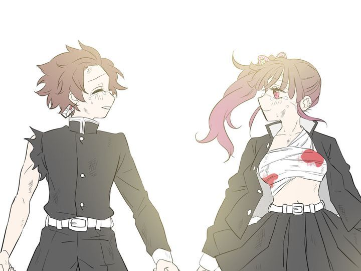Alfa hugged neon and
told him never even in their entire life he'd even dare to do something so
stupid. She'd break all his teet. Neon hugged her back and told her that
he always loved her. Alfa knows it. Then on this side akuma was frustrated
for some reason. Kamini asked him if he knows that siver hair woman and
akuma says he has a theory but he's not sure. Rengoku says a game theory?
They reach the main castle and akuma saw the woman fighting the god of
devil and she was running out of energy so akuma tried talking to her.
Akuma tried controlling the soul stone of that lady and it was responding
to akuma's words. Akuma instantly knew. He asked if she was aya? And she
said yes. She's certainly akuma's new born child who came to the past from
the future to save the timeline or something. Akuma told her that hitting
that guy won't worke. She'll exhust herslf. He's hiding his soul core
somewhere. Akuma told her to hold his hand and akuma ran away and decided
to meet up with everyone and then got back to the overworld while a wierd
bird followed them back. Akuma revibed everyone and neon asked who that
woman was and kamini told neon that he won't believe who she's but she's a
time traveller. Neon was shocked. He asked what's her name is and when he
saw the light stone he asked if he was light's daughter or something and
she said her name is aya this made everyone surprised. Akuma thought that
by now she's already bron but didn't expected to see her in person
standing right in front of his eyes. Life can be so wierd sometimes. Akuma
asks her why she came here and she said it's to fight that creature. Akuma
asked if they all died didn't they?
Aya said that ali was the only one who survibed. Ali said here he was the
first one to die. Akuma asks how did it happen. Aya explains that she
doesn't knows it herself. She was orphaned the day she was born and she
was treated her entire life like useless. She suffered from immence
proverty. She doesn't even knows how to read or write. She was raised
alone in the streets. Akuma asks if prince didn't raised her himself or
let her be in a orphanage and said he wasn't even alive till then. Just as
she means. The thing she said. No one survibed. It didn't mean akuma's
team. She mean the entire kingdome. No one survibed. Ali survibed and came
back to look for her but during that process he died by evil spirits.
After two days of her birth people came to concure the kingdome and she
was abandoned like she was a pushover and just at the age of 4 she
witnessed mass murder of humanity. The person was a giant demon who
claimed to be the god of demons. People suddenly started worshiping him
and during her 16th birth day she realized that akuma was alive. His soul
was inside the red soul stone of akuma which was waiting for it's energy
to revive it but it dissepeared. Just like it was nothing. Akuma died.
With no after life. He did had a short interaction with him but it wasn't
enough. It wasn't enough so she came back to change everything. Akuma says
how and she explains that she used a device which the first king of devils
made. Akuma was confused and the bird that was sitting near said it's the
time clock.
Everyone saw the bird. Let's call the bird oz. It landed on akuma's
shoulder and said he gave the time capsule to her and akuma asked who it
is. The bird explained that the first king made it specifiqly for this
purpose. The crow told akuma history that the earth didn't always had that
forbidden fruit. It was something pure of power for purifying 5 devils and
angle together but suddenly a 6th angle came and created a disrupt between
everything. Then came the 6th devil who stopped their fight and sealed all
the dragons and he was the one who seperated the power of 9 dragons. A
matter to be noted that person was not the first king. Then the first king
was born and he fell in love with an angle. A pure angle. A first angle.
It was the 6th no location angle. That angle told the first king about the
devil and angle tree and about the world. That it was the demon lord who
wants to take over the world and started a catostrophy. The war between
angle and devil which was on going for years now. The angle and devils
that were supposed to be part of humen became seperate sides. So the first
king made a prophesy which says three red two blow and one black king.
Akuma was confused. What does that supposed to mean? Oz said that means
three people in red and two people in blue will go and fight the demon
lord and liberate the world of this fake afterlife. The heaven and hell is
fake right now. They have doors that belong to the inner dimention of the
earth. The demon lord will soon start his rebelion against mankind again
and make it his own slave so he must needs to be killed cause other wise
humanity will only be worshiping a dark entity who's a fake god. Only
corruption can be hoped after that.
Akuma asks what does the black king stands for and oz says it means akuma.
Akuma asks how? He's not a black king. It suits more of neon. Oz said that
the king when first made him he asked him why he's dying him red now when
he was born black. And the king said he thought oz would guide someone
else when he's gone but now he knows for certain. Akuma will be the one
who defeats the demon lord and save the world from distruction. Oz asked
what distruction when the demon lord only wants some slaves and the king
says that people will die cause no human will listen to an ouside enermy.
If it's too much strength then it'll be a tyrant and soon human child will
start getting stronger with stronger genitics with more power. What'll he
do then? Kill infants? Such tyrant can't let be get ahold of power cause
the day he takes over the world people in the world will forget the blue
sky. Aya explains that the sky is red. She's never seen a blue sky after
that day. Matter of fact they knew that she was akuma's child so they even
treated her the worse way. They killed every guy or girl that came in
contact with her in a friendly way. She's been looked at like she's a
curse. Everyone tells her she's useless and everything. She can't take it
anymore being told that your father was a traitor. Akuma said so they
changed history? Classic. Aya said she isn't joking. Akuma told her to get
back cause she's already changed enough. Aya didn't wanted and she even
wanted to meet her mother but oz said that it'll be fine cause they are
more aware of the situation right now. In the original time line akuma was
un aware of the situation which made him unable to grasp but since now
they are here it's most possible for them to win. Akuma says he can surely
win as long as they get to break the soul core.
Flame asks wouldn't it be better to know the coincequences before they
decided anything? How would time line emerge exactly? Would everyone
suddenly have different memories or it'll create a paraller unierse? Akuma
says no. Time is like a belt. Aya came from the future bending the belt in
a certain direction yet it's also like a train. As long as she manages to
hook the two different timelines together a new timeline would get
created.
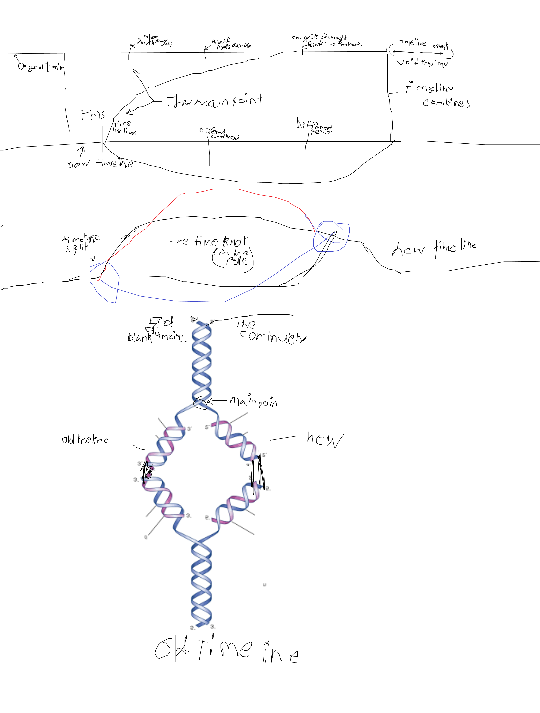
akuma explains how time travel works based on his reacherce on his
inspection on the device. It uses time bending so creating a paraler
universe is out of the question cause to create parallel universe you'll
need that exact amount of energy. How'll you even get that amount of
evergy out of thin air? And people theorise about infinite worlds.
wouldn't that mean infinite energy. Infinite energy isn't possible. He
tells how aya came back to time from a certain point and in order to
create a rope like structure she must go back to her time and make sure to
contact with the aya on her time line cause they are just like how her
family does. She splitteded into two. One soul that is seperated into two
parts. If she fails then just like a ruber band the time line will go back
to it's original follow up path and when aya travelled to the back she
will dissepear from existence dying between void cause there is nothing
between the dimentional space of two timelines. Aya certainly didn't
wanted that and akuma told her that if she wishes to have a best timeline
then she must go back and let them figure things out cause akuma is strong
and aya said she saw and she knows he's clearly not strong enough and
akuma said that he might have a little trouble but he's fine. He can do
it. Just find the soul stone and break it.
Aya gives akuma a one final hug before leaving and before leaving she told
neon that he should apologise to everyone since back in his timeline he
could never forgive himself for not being able to say sorry. Neon asked if
he lived and aya said no but he did came to meet her when she started
using soul magic. Neon thought so he lost his soul stone? He must have
turned to shadow when he ran out of energy. NOt having a body and not
having the power to gather energy is really bad. Neon apologised to
everyone and ali said we don't accept the apology. Insted we have a
demand. Let's rebuild the aura gurdians. Neon said but this time he wants
akuma to be the captain and akuma said that he thinks neon will do a
better job at that and he said as said he doesn't wants to downgrade his
position from the devil lord to just a team captain. After explaining all
that akuma some how managed to make aya leave. Neon asked what's the plan
and akuma said he thinks they need to scatter up first and they also need
prince with them along with gold. They go to the hospital and there they
see both gold and silver were injured. Akuma then saw his new born and
ayaka was sleeping and akuma decided to hold aya and thought what if they
named her different to see if it makes any difference in the timeline and
neon says it's a bad idea and alfa asked if he even has a name for that
and akuma says nop. Akuma kissed his child and wife before leaving and
they returned to the castle. Neon alfa flame kamini sucrose yota yuta ela
yuki ali rengoku light prince akuma.
they all split up in intention of finding the soul core and neon alone
went to fight the creature. They were all confronted by the wierd black
creature and they all choose not to fight and insted avoide it cause it'll
be a problem. On this side neon fought the creature and while looking
around akuma met that guy again with prince. He was the one who sealed him
years ago. Prince said he'll fight him and akuma left in search of the
soul core with his future sight and he's not able to locate it. On this
side rengoku located the soul core location with others so they went ahead
in order to fight. On this side akuma saw the mirror that looked like the
one in the bottom of his old house and tried getting to the other side and
he managed to do it this time and he went forwards and saw the entire
place and realized that it's just a replica isn't it? THe guy who was
fighting prince came and said yes. It is. Akuma asks what happend to
prince and the guy said he lost and akuma said that's not unexpected and
asked if he killed him and he said no. He thought it'd be useless to kill
him since akuma can just revibe him. Why kill him in the first place then?
Akuma asks what exactly is his goal. that guy asked akuma what he wants to
do? He should be angry at him and akuma says for some reason he doesn't
feels angry when he's talking to that guy and he says he doesn't know how
to respond to that. He's not in the mood in fighting akuma but he'll
surely tell akuma some secret. His mother is sealed withing his soul stone
and akuma asks how and that guy whom'll call kira. Kira told akuma that
it's cause she's his sister. That guy told akuma everything and it made
akuma angry and he said he just found more reasons to kill that demon.
Kira told akuma that he has 4 years before he will begin a war against the
entire world and the first king made a prophesy that his son would come
after a thousands of years to kill that demon.
Akuma asked if he didn't believed in the prophesy? Kira said the exact
opposide. He was fasinated cause he was sure to be the ultimate god and he
wanted to challenge his destiny by giving akuma the chance to fight him.
Akuma asks so this guy is just a test? Kira said exactly. Akuma says sadly
it's a shame that he doesn't knows the difference between destiny and
future. Akuma asks who is he a friend or an enimy? He said who knows. He
certainly doesn't. by he he meant himself. On this side rengoku saw the
crystal and was about to grab it when the venom came to get the crystal
back and akuma came to rescue him and broke the crystal during such event.
He then wet to the top to see what happend to the main body and seems like
every bit of part of that craeture is gathering in one place and it took a
far greater form and akuma fought that and almost died again but he had
something up his sleeves. Neon suggested why don't they combine their
bodies like movies and akuma said that's not possibele for multiple souls
to be in one single body. The host will explode and neon asks what if
akuma copy's their genetic code for a while and akuma says he can do that.
He can use kamini's speed and everyone's experience along with their
matgic capablity. Neon asks how much time would it take and akuma said 10
minutes and neon said that's plenty of time. They got all the dragons if
he runs out of energy so it won't be a problem and akuma said he's making
akuma confused cause akuma himself have enough energy to give the dragons
hundred times and also he won't be needing that much time cause he'll just
need to copy their body memory. It's something not so out of soul magic's
grasp. In the present akuma uses immence fire to pefectly burn that guy up
and distroyed the entire castle fighting him and barely won. Seems like
it's a happy ending but akuma told ayaka that the soul of his mother is
trapped inside his soul stone this entire time and ayaka asked how'd he
get her out of there and akuma said he'll try to find her and construct a
new body for her but before that he wants to know everything from the crow
and oz explains what he needs to explain. Three red two blue one red king
There once was a kid who wondered in his kingdome but he was a pesent who
lived a poor life inside of a broken house.
His house burned when a war started and the angels and devils are
constantly fighting over what? The kid whom i'll call king always had
three red dots and two blue dots in his hand that looked like a seal and
he didn't knew how to use magic cause he wasn't familier with such
expenticies. One day he found a dool that he decided to hold onto and then
he wondered around for a new home but some angles found him. He was a
harmless devil so he ran away and kept running in the snowy moutain he
reached a clif and decided to jum cause there is always death but
something instant would be much better and out of fear he touched his five
dots with five of his finger and he unleashed some short of magic causing
the doll to turn into a beautiful angle who saved the king. king was
shocked and confused. He remembers that one day he awake with a curse of
future sight from the angle fruit cause a devil wasn't supposed to eat a
angle fruit. He has been seeing his own death after and after but since he
always knows how'll he die so he always has something different to do and
he survibes. He got that five dots from that day and matter of fact he
found this doll cause he thought it was asking for him. A lonely thing
with no one like him. The angle woman looked like a woman and decided to
take care of the boy and king asked her why she's doing so much for him
and she says cause she is greatful that he took care of her while no one
else did.
The kid finally founded the devil kingdome location with no king so they
choose a leader and king wondered what to do for living so he took a small
house and started a job of a farmer and during that time he started living
with the angle and seems like no one cares if there is an angle in the
kingdome. One day he was asked by the leader why he has a angle in his
house and king explains that she's harmless and she saved his life and he
had no one in his life so she means everything to him and leader thought
about it and said acording to the devil laws as long as they don't strike
first even if it's their enimy treat them like your friend. King promices
that she won't do anything and if any aligations raises he'll take all the
responcebilities. The leader told king to take part as the militery of the
kingdome to compensate for his act and king explains that he isn't even
strong and king says he doesn't cares if he's strong or weak. They need
more and more man power and even one more number is good enough and king
agrees. He immidiately started fighting a war and he wasn't even born with
a soul stone and he didn't even knew how to use magic but he knew that his
three red and two red thing can activate some powers but each time he uses
it it fades up bit by bit. During this war their side lost and king lost
himself within the entire world and to survibe he had to eat various
things and since he was near the angle kingdome he met them and saw their
way of living and everything and he thought that it's wierd.
How can someone just lost their way to angle kingdome and he realized his
future sight was activate this entire time. So he subconciously guided
himself here? Why? he met their conditions and everything and both sides
are fighting and they are all loosing yet why are they still fighting and
he dared to ask one angle and turns out the angles lost too much to the
devils and if another war happens then it could lead the entire world to
loose it's life and king really didn't wanted war to happend so king
returned to his kingdome and begged for no war cause it might loose them
everything and seems like the king wants to do something else entirely.
Wipe the angles off while they can and king asks why do they need to do it
and king says he can't. He'll prepare a war. Then king's future sight
activates and he sees the future where he killed the king and this
confused everyone and the king is aware of his future sight and king said
that must mean he went far enough to kill him cause he didn't listened to
him? The king jailed king and during the time in cell the angle came and
freed king and they both escaped and king didn't knew what to do and he
seeked greater power so he went to a journey with his new wife and went on
a journey to gather up energy from nature and trying to create a storage
for energy as support and angle asked king what is this energy any
different from magical stone? Magical stone is something people are born
with which acts exactly like what it is. But a soul stone is something
that works like it can be created as much time as it needs to be. Usually
wehn you are born with a soul stone it acts like a place holder for you to
store energy to use but once the stone breaks the power dissepears.
It's cause that soul stone just stores the energy but a soul stone also
generates the energy. and he finally created a soul stone and he didn't
knew that true extent to this power but certainly useful and his devil
mode is preety useless since he has no idea what it does and they keep
their journy to find one of the first angles and that person welcomes them
and asked where she's been and they realized that she ran away from the
first 11 beings and her existence created a huge disruption. And then they
left knowing the bitter sweet thing and in the late expentencies that
angle granted the wish of king by creating a huge wall around the world
along with one of the first devils out there who did not find a mate.
Those two finally returned to their home land of the devils and king
didn't knew what to do so they insted decided to keep their house in the
bushes and had been living preety happily and king often saw visions of
the future. Very late future of his son being a worrior and everything. He
also saw his death and told his wife they have two options. They can
return to the castle and claim their royalty by being the kings of that
place in order to ensure a safe prophecy for their child to grow up with
but he'll die without knowing who his father is. Or they can spend their
entire lives in the hood with a happy family together but this will cost
the lives of every single creature on earth and the earth will turn into a
waste land after a thousand years. Betweent the war of devils and angles
and there will be no humen and akuma's mother knew exactly what to choose.
They returned to the kingdome and tried convicing the king about it and he
said he wants to be the king and the king offers a duel so the most epic
duel of history started where akuma's father won. It's cause of
discoveries of magic and his carefree movement cause as long as he knows
his techniqs even if he's physically weaker he can still win against
stronger enimies. The king then became known as the first king who
seperated the devils and the angles. Then the king started working on
prophesies so he went to the elf tribe place and knew that a new genitic
formation will bring a creature known as elf here so he left som
skulptures to let them know of some stuff and also he put various
paintings in the castle and all. Then he finally created oz and during
looking at an empty book he saw the future and tried his best to do so but
every time he did his eyes turned blind and he lost hope that humanity
will strive much longer but it's still long enough. But he realized
something. He instantly went to see the future even if it blinded him and
he saw. Three red two blue and one red king with magnificient red aura. He
went blind after this but his ability to see things throw aura became too
clear. as if he had a permenent byakugan. The king was about to be a
father but then he found his wife being kidnapped by kira. He followed him
back to it's dimentions and he somehow managed to get the soul of his wife
into his soul stone cause he knows he might not be able to save her life
right now but when the time comes he'll be able to save the soul. King
faced the demon lord who was the father of akuma's mother. This shocked
the king and turns out she ran away all those years ago from her and
became the 6th angle from history. He punished her by putting her soul
inside a pupet but didn't expected someone to know soul magic. The demon
lord wants entertainment for himself so he'll keep creating two parties
for fun. angle vs devil. Humen vs devil.
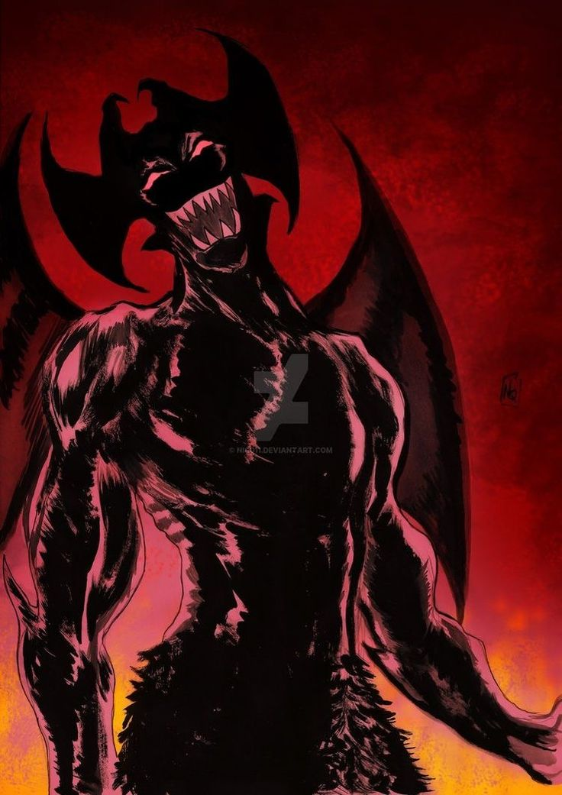 Humen vs angles. How
about adding a little touch of his dna to create elfs? How about a little
curse spirit that becomes a demon. He just wants fun. There is a guy who
can see things throw crystal and he knows that king can see future and he
even knows that he will be killed by his own grand son but what does he
cares about it? He's already to powerful then why not let it all be? At
least his death will be lezendery at least if he even manages to kill him
or it was just a fake dream he dreamt for his own fasination. The king
used his five dots every to fight and almost killed the demon but failed
to do so and the king told the demon that years later his son akuma will
come who'll sit in the emty throne waiting for him. He'll be the one
claiming the title of lord of demons and the ruler of heaven and hell
that's not true after life. By killing him he'll restore the real
afterlife and open doors for spirits again to travel to afterlife and not
be stuck in the overworld when they die. He dropped his soul stone and the
prophecy was heard by some people and a guy who heard the prophecy kept
preaching about it dya after day after day. And one day the lonely
wondering soul of akuma founded a perfect host to live. *** Akuma and
everyone heard the story and akuma remembered when he was in hell someone
came to comfort his pain from everything. Alfa remembered that when she
lost her arms and legs someone came to comfort her and akuma finally
managed to revibe his mother and she was beautiful. A pure angle and her
existence was strong. She first hugged akuma and everything. Wierd yet
happy scenearo. Akuma was happy to have everything fine but he was worried
about what happennd. Why did his father blinded himself in order to see
something.
Did something really long later happend? What was it? Akuma's mother told
him it was at the end of the world 5 billion years later when something
happend that made akuma's father the first king laugh out of joy. Akuma
thought what exactly did he see? Neon says they don't need to know. For
now they need to focous on the future. Akuma became a father of a child
and he was more caring than expected and he stood entire night to make
sure aya doesn't wake up or anything. He always keeps her on his arms.
Akuma was woried about his daughter's future since he died in the original
timeline. Did she managed to hook both timelines? Ayaka said how exactly
is she supposed to hook with timeline and akuma said it's by touching the
aya of that time line. It's like how in a game due to it's machenics you
can duplicate items but when the game realizes it removes the duplicate
item. But here it's not about duplicate person. It's about different
existence and different beings that'll combine into one what it soupposed
to always be. Everyone was training for their strength and the demon lord
whom they might be facing in the future. They don't know how strong he
might be so they needs to do as much strong they can get. Akuma himself
needs to get stronger so he decided to go somewhere. He opend the gate of
hell and entered it and said-"happy dewali forks" The devils were running
away seeing him and akuma decided to use his full power out here and akuma
while doing so realized that his attacks are one person based like they
are good against single people so what can he do?
He'll create a nuke. In the dead of night akuma returned and ayaka asked
why akuma is so injured and akuma said he decided to turn his regeneration
off for a while to not get careless since his body automatickly heals so
he constantly get's clumsier so it needs to change. An entire month passes
by and akuma already wiped out all the devils from hell and neon told
akuma that he's been killing them like ants and neon founded a scared
devil on the side and went to finish him off. So they got the entire hell
as their private bunker? Akuma said not exactly. Anyone can seal them like
it's nothing and they'll need 9 million neons of energy. Akuma told neon
that he'll be increasing his aura storage to 1 billion and till then
they'll need to survibe akuma's energy shockwaves from a far and akuma
started expanding his energy stoare and they were barely able to survibe
the shockwaves so they started using their attacks and at night they all
went home as if they were beggers. All cloths teared up and dirty. Akuma
spend the entire time with his new born and akuma's mother watched him and
asked him what kind of training he was doing and akuma said he was
increasing his aura storage. Goal is 1 billion. It might take an entire
year and she told akuma that there is a more efficient way of training and
she told akuma about the all black form that will be his entire existence
from soul to everything to every bit of energy consentrated into one
being. And akuma thinks about it and says wait. Isn't that how neon uses
his shadow techniq?
Akuma thinks about the possibilities and thinks that it's a genious idea
and decided to try and master it but before that he'll first need to set a
goal to 1 billion. That night akuma talked to oz and thought something
that didn't made him able to sleep the entire night. The next morning
insted of going with akuma akuma told them that exactly in one month
they'll need to get strong enough to defeat akuma himself or else akuma
won't be their teacher anymore and everyone was shocked. Akuma explains
acording to everything he can understand after 4 years their world will
face a war against the demon god or so and in that battle if they are not
strong enough to survibe and fight then it's no wonder that it'll be all
useless. For which they need to train and akuma thinks that he can't train
himself or them together. He needs to choose one and he chooses to train
himself but if they managed to defeat him and show him that they all
together have greater power than akuma himself then akuma will spend the
entire time training them and trusting the future on their hands. Neon
agrees and everyone goes off to train including akuma. They'll all decided
to train at the gate of hell. And they go so but neon realized that the
angles are much stronger than devils but it won't be a bad thing cause
silver gold and light are here too and they all together almost wipe out a
lot of angles and take a goal to erase heaven from existence but while
killing so many people neon started asking his humanity.
why are they killing for fun. Of course they are claiming it to be for
training but angles. is it really the right thing to do and neon remembers
what the angles did to them and he knew that even thought it might feel
bad even if they spend a single second without their guard they'll be
killed ruthlessly. Life is a survibal game where you must survibe by
killing off other creatures that are hostile to you. It's not like two
races can't live together like how elfs are living with humane but those
who are hostile can't be left. Ali noticed something. There weren't any
kids there and neon said it's a good thing they didn't had to slaughter
kids and flame said it's surely wierd. Not even the hell had kids and neon
said isn't it obious. That creature that calls himself god. He sealed off
the after life after all. It makes sence cause none of the devils or
angles here are any of the original devils or angles cause they are all
created from the blood of that devil and alfa siad so they just distroyed
his entire army? Neon said why did he let them do so? Why is he so
confident of his strength? Isn't it obious that they didn't even reached
the level of strength to even imagine that creature's strength and only
akuma can grasp of what that creature might be apable of. an entire month
passes by and everyone changed. Seems like they took a blood bath for
which their entire mentality changed. They were ready for the fight and it
took place on earth cause they'll also need to make sure to do maximum
damage to the enimy insted of the sorrounding and they all prepared to
fight and it was an all out fight and they were all giving their all and
it seemed like they all reached a level beyound they could even think of 3
years ago but then akuma started dominating the fight again with his new
move which is like a domain but it's called grey scale where akuma is the
one controlling all the energy and atmosphere around the area. Also he
figured out a way to gather all his coinciousnees into one point with this
attack he can even condence his soul into one being. He's invincible right
now.
So after they all lost they decided to go away to train and find ways to
make themselves stronger and meet up again after 4 years and neon agreed.
Only neon stayed with akuma and he didn't knew how to get stronger and he
remembered that he had a student that he decided to train. After all a
teacher sometimes can figure something for himself. A 4 year timeskip
happend and akuma was tired of training and was sweating. He wiped his
body and his daughter aya came to be on his arms along with his two more
sons. Seems like akuma is the father of twins during this timeskip and
they are likely over three. Akuma wondered where did neon went. Akuma
named his two sons i guess naruto and sauskey since I'm lazy right now to
name them. I'll figure out a name later. They were fighting a btoerly
fight and akuma told them not to hurt eachother and they did stop on
akuma's word. Akuma's mother woke up so they went to see their granma.
They really love their granma and father. Ayaka is sad cause her own
children barely give attention to her. She thought being a mother would be
hard but seems like everyone is just keeps ignoring her. Akuma took ayaka
on his arms and told her that he's here to give her all the attention she
wants. SHe doesn't needs to feels sad. Seems like a happy family and neon
returned. He looks like he had a massive glow up. He's 19 after all. Neon
brought his student and she had a boyfriend coming over too and during
their breakfast akuma asked when they are getting married and ari said she
doesn't knows and everything.
Akuma was not happy with the responce. Akuma asked neon about his friends.
Are they goanna be here? And neon says in a few hours they are all
soppused to be here. Seems like one by one they all came and akuma was
wondering what to do about them and when they all gathered around he told
neon let's go. While so neon wondered where are they going alone and
akumsa said they are goanna be the one starting the war since they can't
wait to face the imact and neon asked if akuma know where he is and akuma
says he knew it since the first day but also knew that he wasn't strong
enough. For once he thought that why does he even need to face and kill
that being and seems like he understimated his enimy and the reason he's
feared. On this side aya reached the future point of her self but till
then she remembered everything that happend. From her point of view. Turns
out in the past akuma while walking he bumped into a psychopath that
started fighting him and later during that fight that guy took care of
akuma and killed a lot of other civilians. After 19 entire years akuma's
daughter came to interogate that exact guy about it and she one shots that
guy and wondered why he was so weak. Basically her backstory is reaveled
and seems like she was born with questions on who she was and when she was
4 in intence proverty and world seems to be ending when someone stood
forth. It was neon who alone faced the demon lord and save humanity. But
how? He sealed off the gate and where is he?
Did he die or did he won the fight? How exactly did he sealed off the gate
and what did he do? Aya did not knew what to do and after being at the age
of 9 she was called a lier for saying neon was her brother cause she
herself isn't sure due to her not being any close to him cause she was
basically abandoned by him or that's what she thinks. Then after that she
got arrested many times for stealing food which was good for her cause
everytime she did so she got shelter from police and free food. But then
came a guy who looked after her. It was rengoku and he looked after her
told her about her father and everyone and even brough her to her
belonging house. Akuma's and neon's house. She started living in a house.
after a long time she founded a roof over her head. Clean cloths to wear.
Clean water to shower. Clean food to eat. She wanted to be a magic knight
like her father and wanted to know more about him and rengoku told what he
knew and she was facinated so she went on to read more about him from the
library and everything she could gather and his legacy fasinated her. His
goul his motiation and on top of everything her father was this king of
person. She really wanted her father to pat her on the head and tell her
that he loves her cause right now she has no one she can say she loves.
Then she didn't recieved rengoku's acompany for many days untill she
realized rengoku died. He had a bad physical condition after almost dying
years ago and lost many body parts including an eye. Aya almost lost the
will to live.
She's always called useless and she bought a cake for herself in her 16th
birthday. She wondered if throwing it away will do anything and she
remembered that she's poor. She can't throw it away. She was staring her
cake for hours untill the bell rang. It was 12 am. Her birthday. It
finally came. But she was wondering. Till her birth did she ever had a
happy birthday. It sure was birthday but not happy. She kept staring at
the cake unable to feel comfort and unwilling to cut it cause she just
wants someone to suddenly open the door and say i'm your cousin or brother
or some other relative. Happy birthday. She knew something like that isn't
possible but she wanted to. She was so lonely that she made fanticies that
if her father came what she's do or her mother came what she'll do but in
the end no one came and she kept staring at the door waiting untill sun
rise and she was hungry so she finally decided to cut the cake but she
accidently made the cake fall but she didn't cared. She cut the cake and
started eating it from the ground and didn't even sang happy birthdya.
Suddenly a hand came and patted her and from behind it seemed like he
really appered and was singing happy birthdya to aya. What is going on.
She was shocked. She wondered if she was dreaming. Seems like akuma had
his soul trapped inside aya's soul stone that he intentionally did when
his body died. Akuma told aya to move over from the past and no one might
be coming for her but everyone is waiting for her so she must live a happy
life.
She might not fight a worth to herself right now but even she knows that
she isn't useless. Akuma's soul dissepeared. Aya tried hgugging akuma and
managed to do it for a second but she couldn't stop akuma. Aya knew what
it was. It was akuma's revibal but why did he gave up? Why did he... wait.
She realized that she doesn't have enough power to give energy to akuma
for revibal. She remembers that she wished so hard for someone to come and
pat her head that she'd do anything for that. She realized that akuma gave
up on his own revibal just to say happy birthdya. She started regretting
it and crying so much. Years passed by and the day came when she took the
revenge for her father and also she wiped the angles and devils. She bacme
just as strong as her father is what people say and she walks around while
the prince of the kingdome walks around with her cause he likes her. Aya
thought about it and said yes without thinking. She says she doesn't cares
whom she marries cause one day she'll do but she really wished she'd had
someone with her during her childhood. he asked aya what happend with
akuma and she said that akuma gave up on her cause she was so useless. She
doesn't even like herself. They both explored akuma's old residence and
the old devil kingdome where there is a mirror type stuff which is broken
and there she felt some short of presence. Something was calling her. So
she followed the voice and it was at a lake so she walked into the water
and turns out the water was a door to a different dimention. There she
found an entire castle and an empty throne and wondered whom it belonged
to and neon came brom behind and said it's akuma. She was shocked for a
second but seems like she remembers neon. She tried hugging him but she
failed. Neon told her about his way and the fact he used shadow mode too
much to the fact that his mortal body was distroyed and he doesn't have
any idea how to regenerate like his father. Aya told neon what happend and
neon told aya to go to the past and fix everything.
The prophesy needs to be fuilfilled. The emty throne belongs to someone.
It must be controlled uless the gate of afterlife will stay closed
forever. Someone must take the responcibility to manage this path. Akuma
can be the only one who can do that. He gave her a device to go to the
past and after she left turns out oz was guiding neon. aya decided to wait
and talk to the prince about this before using it finally and then she as
she read from the books she managed to avoide the direct confrontation but
when akuma saw her she was shocked. She ran away. Then when she saw ali
die she was really scared. but when she heard that akuma can revibe him
she was calm. She then wondered how did akuma even die since he is strong
enough but then she figured out it was the god of death and she instantly
jumped to the fight when she figured that he might be stronger than akuma
and how and during there she foiught him and didn't understood why he
isn't dying and then akuma saved her. Then after everything she returned
to her original timeline hoping that it would actually change. She really
hopes and when she reached her own timeline seems like the world changed a
lot. Everything is green everywhere and she realized that humanity has
ended. She saw someone standing really far away and when she went near to
see she realized it was akuma but his face is too wierd. He looks like a
wild animal. She asked akuma what happend to him. Akuma told her she must
go back to the timeline. And stop akuma.
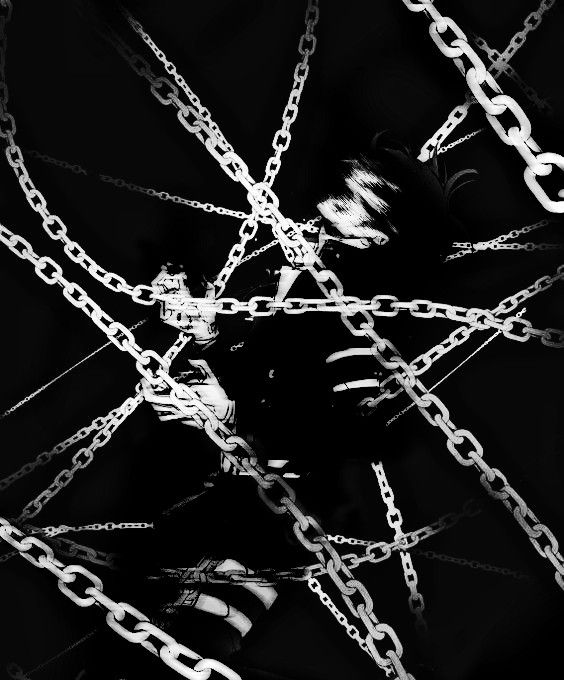 He killed everybody.
Everyon. Every living being. Even aya. He begged aya to go back. He can't
take such big sin. Aya said she doesn't knows how to use time magic and
akuma told her that she's able to return to her own timeline then why
can't she fitgure out how to do that again. Akuma told her that if she
doesn't then it'll be all for waste. She'll die and everything will go
back to it's original shape. She'll forget everything happend along with
the memories of all. He soul will be distroyed and there will be no after
life for that. Aya didn't wanted that she decided to work on that and
after a lot of tries she finally managed to do it but it was unexpected
again so she fell from a cliff and she got unconcious. Flame while walking
near the mountain found her and took her back to the home. Everyone was
curious and aspecially ayaka was so happy to see that aya turned to such a
beautiful gorgeious lady. When aya returned to her sences she told
everyone that they must stop akuma. He's goanna kill everyone. On this
side neon and akuma reached the old palace and then akuma went throw the
basement of his house and then entered the place where they'll either
write history or die. Akuma asks neon what he thinks will happen and neon
says them dying is most probapall but guess hoping for the best isn't far
off. On this side aya reached the palace with everyone and she rusehd to
the mirror and after a lot of struggle she managed to reach inside and
there was standing three enimies. One was a old lady who was capable of
seeing the future and ali yuki rengoku and ela fought her then came the
wierd girl that wanted to only fight girls so alfa and sucrose along with
kamin i fought her Then they all faced kira so only aya managed to pass
them. She was extreamly scared to see the demon god and his size.
He looks like god from one punch man but rather he's just a colosal titan
sized being but also stronger than freeza from dragonball. Who knows I'm
not sure about the powerscaling right now. Akluma and neon was fighting
that guy and aya was shaking. She thought she was strong but in face of
such situation she turned useless again so akuma saw that and he went to
grab her and threw her at the eniumy and she landed a hit. Akuma told her
to be fearless. Be like a king. Not hasitant. When aya realized that akuma
never taugh his students to be hasitant. They'll fought. On this side afla
won and both female villains died but kira survibed. He was winning though
and he decided to let them go anyways and since they are unaware of his
abilities they go anyways. There they fought the demon and there kira
decided to betray demon lord and be on akuma's side cause he saw his older
and younger brother die from the order of demon and also he slaughtered
his own sister from his own hands. Why is he obeying him? Is he even worth
obeying? He decided to send god of death to kill akuma in the name of
being faithful but the reason he did that was to let akuma know taht it's
important for him to identify his enimy and also when in batlle people
like him can be trixky so getting rid of him would be the best for the
final fight to go uninturupted. After this betrayal demon released such
beam on aya so akuma had to jump in the way to protect her but who knew
this would be so deadly. Akuma fell on the overworld and everyone went to
take him while neon fought the final boss with everyone.
Aya went down with side charecters while neon fought with flame alfa and
rengoku. Then aya looked at akuma who turned into a demon. His body
inhereted a parasite so he was killing everyone going beserk. He couldn't
controll his own body and he was really near his own house where he almost
killed his own mother and attacked his own children but ayaka saved them
and then aya didn't wanted to but cause akuma told her she fought akuma
and won. On this side neon and everyone fought the demon and won and with
everyone's help rengoku landed the final blow. The throne was enmpty
again. They won. But on this side akuma couldn't controll himsef. He
didn't loose but he did regained himself back for a while and he was about
to distroy his soul stone. Aya came and whiole crying she told akuma not
to. He can overcome this parasite and if he just endures for a while
they'll can have a happy ending and akuma's mother was preparing a sealing
techniq and akuma said to aya that that he knows what happend to the
future. The soul records everything. The moment aya hit akuma with a soul
attack akuma saw everything he had to see throw his memories. How he
killed his own family. He can't let the same happen again. Ayaka begged
akuma to please hold on. Akuma apologised to everyone.
He's been always a lot impaitent. He's not ganna take the risk again and
he breaks the soul stone and aya barely managed to save his body and
everyone was crying. And specially the kid aya and akuma's other children.
oz was sad and neon returned to this place. Flame when he saw neon's face
he asked if he knew this would happen and neon said he was able to see his
own future when he used soul attack on the demon. A soul records
everything. Including memory. But when the soul itself doesn't remains
there is no afterlife. Neon saw the dead body of his father and remembered
the first time they met and everything and decided to pick it up. Then he
walked to the emty throne holding a dead body. Then he placed akuma's body
there and neon and flame stood at one side while alfa and sucrose stood on
a different side. Let's change rengoku for sucroe. I don't wanna confuse
the readers. Rengoku wasn't even here. Then the wall where the prophesy
was written of two blue three red and one black king light up and it all
dissepeared into nothing ness but one writing was left. Red king. Neon saw
that and thought so they didn't managed to fully fuilfill the prophesy?
Neon turned akuma's body around a crystal so they could see the body.
It became a grave yard for the respect of the devil lord. Aya could not
accept this and neon told here that there was really no way? Akuma could
have suffered for years to fix his body paracite but what about him? Are
they even thinking about him while talking about he could have? What would
he have felt when he realized that he hurt his people. His wife and
daughter. When he tried killing his own family. What about an accident?
What if antyhgin at all messed up? Even though they are not thinking about
his struggle he would have definetely not hasitated to struggle that much.
Maybe even a thousand yeras but when it came to the risk of his family. He
really couldn't take a chance. After all the future akuma regretted even
being born for what he had done. Aya asked neon if he was alive when akuma
did that since neon saw that and neon said he was always alive. Just
without a body. Neon told aya to return to her timeline and aya thought
about changing it again and neon told her that they already twisted the
timeline enough. If she doesn't goes and ties it all back and let the
timeline shape she can't consider letting this all be done. She'll only be
shaming on akuma's efforts. Aya understood and decided to return to her
own timeline and everyone left. But not neon. He decided to stay there for
a while.
Aya finally returned to her own timeline and then she saw everything was
fine and all and she saw her own self and decided to hold her and then the
timeline fixed the bug. She fused into one and neon was sitting near a
tree and aya told neon that she's back and she sounded cheerful and she
was confused. Her memories. It's differet. wait. She then relized that
akuma was sitting next to her and she was confused. She saw her memories
again and she thought what is happening. She lived her childhood happyly
and akuma didn't died. She was confused and akuma hugged aya and aya was
really happy. Neon told aya congratulations. She managed to change her
life. She really lived a happy childhood that she deserved. back to the
past what exactly happend for such change in the timeline and it'll be
explained now. After akuma's death neon started spending more and more
time there than outside world. Kamini became a olympic runner and sucrose
became a witch teacher or so. Yuta and yota had already married during the
timeskip of 4 years. Ela became a sharp shooter but also she's not number
one so she needs to practise. Yuki became a ice cream man or i'd say
woman. She has it as a side job apart from when she recieves missions but
she thinks she isn't meant for missions cause it's booring to catch
criminals or fight wild monsters. They don't even appear now a days. Ali
became a wind master who knows a lot about wind magic but isn't the
strongest at it. Ali says just cause he's the student of the strognest guy
doesn't means he also needs to be strongest.
Strength isn't always what unites people. I guess it's more about people
that when came together creates strength. Or that's what akuma taught them
cause he saw the world throw a different way. rengoku became a
professional sword fighter and flame already was a king so he was managing
more of his country. Alfa asked neon about their marrage and neon said he
wants to think about it insted of all. Neon then heard the news. Ayaka
died. She ran out of aura energy and neon thought everything is falling
apart. Then neon's student ari had a problem. THe guy she was dating was
poor and she wants to support her father who just broke his leg. He can't
work anymore right now and all so she is goanna get married to a noble guy
and neon told her she'd regret this for the rest of her life cause she
should not value marrage to be such a short thing. She won't listen and
she has no ther way and neon told her that he can support her by lending
money and she said it isn't about that. She can't ask for money every time
she is in need. He must have a faimly of his own. She left. On this side
her old boyfriend was really sad. Neon decided to comfort him. A few more
years passes and naruto and sauskey grew up. well i might have named them
naruto and sausukey but they are not really like them. They are both kind
but both are also i guess... Naruto is pure but he's too slaker and he has
talent. But sauskey is hard worker and all. But everytime sauskey does and
achieves something out of harwork naruto already knew it.
Sauskey had that brotherly hate for naruto and this conserned neon. Then
some alien short of people landed on the empty throne place where neon was
and they looked like demon but they told neon to be calm cause they are
not here to fight. Neon then took his entire team to a different universe
type place where the entire universe is controlled by them. When neon
asked them they explained that they are perfect being that achieved
perfect body and perfect mind to co operate with eachother. Peak
technology to everything. 24 hours every supply possible. Everything is
free here and everyone uses most their time to load their brain of new
information throw a chair. They are perfect but a few hundred years ago
they had made a mistake in their creation. One of the child that was in a
container to be born was a falure and he was born with emotions insted of
their co operation moduel. It was a big truble for them cause emotion
always distroys makind in almost every universe. Neon asked how are there
infinite multiverses if there is no infinite energy and they explain that
the universe is not infinite in number but the number of multiverses are
so many out there is that every possible variations out there. The number
is beyound their counting that's why they assume there is infinite even
though there isn't. Neon realized the problem with the people out there
and they are basically slaves to the king and they say that even though
they are basically slaves they are doing it for the benifit of their own
survibal so they won't mind. Neon says that to be honest it's ok to be
such slaves.
On a different side some people were seen plotting something big and they
defected the reactor and the entire city electrecity shut down and they
were confused. This never happend. And then the power bank for the entire
planet stopped and they were confused. Why did it happen. Neon went with
them to check things and turns out there are a group of people who want to
take down the king cause they are lacking morality. Neon tells them that
isn't it good for them to lack emotions cause humen have been too selfish
over the entire course of life. Neon would be more than happy to loose all
his emotions if he became part of a perfect civilization that didn't ended
itself in wars. Those groups believe that whats the point of living when
you can't even live at all. What's the beauty in life when there aren't
sad times. When there aren't times when you get over your bad times. When
you feel happy or sad for something. What about the nature? What about
their own freedom to do soemthing. Neon doesn't support them even though
he felt like they were right and that guy whom i'll call block for now.
Block told neon to help them since for their existence they are too weak
and all and neon fought for them but seems like they were too strong for
them and neon knew that they used their perfect facility to boost every
bit of their aura. They escaped and so block took neon to their king who
was just like demon but was in a whole different size. He was the size of
at least 2 mount averest. after hearing everything everything he thanked
neon and everyone for their kindness and their effort and neon figured out
that this guy has emotions and after hearing such things they were leaving
but neon suggested to investigate some stuff cause he's confused about
some stuff and while so they found out those group again and they realized
that the king uses everyone's energy supply to make himself immortal and
the person whom he sent to earth for being defective was not defective at
all.
It was his own son who was genetickly modified to concure earth before
people their learns perfectness cause earth was supposed to be a parellel
universe to them but far behind time. Neon decided to team up with them to
let the people be aware of the information that they are being used and
it's no perfect civilization. It's just a slavery of the unknown. Knoledge
is good but just knowledge is not humanity. They deviced a plan to implant
a pendrive at there which will be much easier since smaller pendrives
won't get detected easily. The easiest way they can get to everyone's
brain the information is by the powerplant and neon deviced a plan to get
there using his shadow mode and there he planted the knoledge and seems
like it isn't open for everyone unlike the power house. There he
encountered a guard that was so strong that it took a lot of effort for
him to beat and neon realized that they keep special guards at places like
here who are genetickly mordified and only general people get all the
normal supports when they are being slaves. They are not even living life.
Following order 24-7. The information is inserted and neon didn't knew
what information it was and then when they met block they realized the
information wasn't any information. It was like an antivirus against
everything. Deep in their genetic coding it was hidden. The fact that even
to all these aliens demon once invaded it and then transformed everyone
into his slaves. The fercet civilization is just a lie.
Everyone turned rebilious against the king and neon thought that without
the energy bank supplying energy the king would be useless and then neon
blasted the energy and knoledge bank and everything. Seems like it's all
going well but then came the king who decided you know what. I'm done with
your civiliation. Worthless creatures. He started wiping off the
civilizations and all and he was so big that he was bigger than the planet
itself. He used one hand to end every life in the planet. Neon decided to
use his ultimate move that akuma taught him to be as big as a draong and
almost became the size of the planet but he still couldn't win cause this
fight was way beyound his reach. He then saw the king distroy the sun and
new saw a blackhole type place and he wanted to use that but he was lost
betweent everythign when he used his transportation to reach back to
earth. He was sad for everything happend. Everyone that he knew died in
that fight. Even alfa. What can he do right now? He's left alone. He
reached home and told his grandmother about it all and she told neon that
it's exactly what akuma's father saw. Neon asked is that what they worked
for. She told neon that they might not have had a happy family for a long
time but what happend was the best for everyone. After long enough passed
naruto and sauskey started a war against eachother and they killed
eachother up when aya was crying alone.
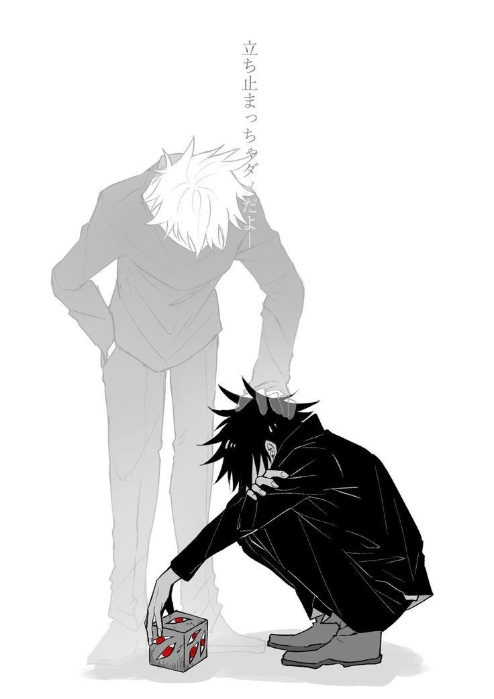
The adult version. Then soon after aya turned 109 and died. Years passed
and even neon's own grandmather died. But he didn't died. Why? He was the
son of akuma was it cause that? Or was it cause he has the blood of humen
devil angle and demon. Or was it cause his grandmother was one of the
original angles? Wait she wasn't one of the original devils but she was
the daughter of demon. Neon then remembered that akuma mordified her body
after all. She ran out of her original lifespam. A sad panel of neon's
existence is seen. When he was just one day old one month hundred year
thousand years million years 5 billion years later he was always alone in
his entire life. It was getting the end of earth when humanity killed
themselves again by fighting and then the sun was about to explode and
neon wanted to die but even when he tried breaking his own soul core it
didn't broke. Why? Why wasn't it breaking? Neon wanted to change reality
and everything cause sometimes even though you did something for everyone
else what about me then? When the sun exploded in that moment neon decided
to use every bit of his energy to go to the past but insted he did
something different. He used the dying star's released energy to reverse
the entire world's time. On a different side of universe demon felt that
and for some reason every bit of existence was reversed to time. It was
the time when the first king was blinded when he tried seeing into the
future.
He was smiling and laughing. Neon came beside him and told him that he saw
this didn't he. The first king knew it was neon and told neon good morning
even though he can't see the morning. Neon said can he fix what he wants
to and the first king told neon that he certainly has the power to do so.
Neon asked him that life is so meaningless. People born live die. What
exactly are they fighting for and the first king says it's for happyness.
Every being does not want survibal and survibal isn't the perfect
existence. It's happyness. Why do people fight for freedom? Why do people
fight for equal rights? It's not really realistic to think i'll do this
for the rest of humanity cause not everyone has such power in their hands.
What matters is not long life but rather how you live it. Before people
used to live thousands of years. Were they happy? With constant fighting
people sometimes used to take their own life to get out of the boredom. Or
when they have seen everything in life they start doing things that would
affect the world. That's why human body itself reduced it's life
expecticies. The age of 60 or so is for perfect for such. Neon asks would
it be really right for him to reverse the entire timeline for just his own
family and the first king told neon that the emty throne belongs to the
king. Who can maintain the both sides of afterlife. And a higher authority
is needed in the world who can like a parent judge people of their right
or wrong.
Neon asks the first king why he didn't became the king then and he
explained that he isn't stong enough to be that person but akuma is. He
doesn't have the right mentlity. The right power. And the strength to do
what it needs to be done no matter what. Both akuma and neon have that
quality to do anything for their loved ones. The first king asked how
neon's time travell works? Neon gave a cube type thing to the first king
and it'll help someone to travell to the past once. It'll help aya get to
the past. And he explains that he uses the power of blackhole to change
reality and he leaves. He stopped time during the exact moment of aya
getting hit by the energy when akuma went to save her. Then neon rewinded
the timeline for a few seconds and gave akuma one extra second in life.
During that one second akuma ended the demon using his ultimate move and
all and he finally sat on the throne. Neon went back to his original body
and everyone bowed down to akuma as the king. Then aya suddenly
dissepeared. Neon thought she went back didn't she? The timeline change.
Then everything was fine. Aya was raised well with everyone. Then naruto
and sauskey even used to fight but it was equal terms for them not to
actually hate eachother. Then came the marrage of ari where during the
marrage akuma went forward to stop ari that he is here to stop her from
doing something she'd regret. Akuma will act like a parent here and will
not listen to her words. He brought her back and fixed her father's leg
and everything. He also gave her a card which she can use to get a proper
job as a magic kngith and everything was happy. Then came the arc of space
where when they reached the place neon pointed everything out to akuma
already so akuma instantly could fight the demon who took the final form
and akuma had his own final form now and he went just as big as that guy
and it was a resling match and akuma barely won. He couldn't use any magic
since his giant form itself is magic.
Then the people there were freed from such slavery. Then when they all
came back time passed and everything was happy. Aya retaurned and was
happy for everything. Seems like akuma was worried about aya's marrage
stuff and everythign. Seems like life is going well and akuma told neon
that he never managed to teach neon to not hold onto stuff or his
daughter. Neon said sometimes we feel good when we follow someone we love
and akuma said that's certainly a different way of thinking. Akuma likes
to be indipendent so he won't understand that. This time neon wasn't
alone. He had family and alfa was with him too. He was glad to be alive
right now. And neon remembered that neon's soul core was harder than ever
but now it could break if he just presses and he was confused. He looked
at akuma and akuma smiled. Neon realized what happend out there.